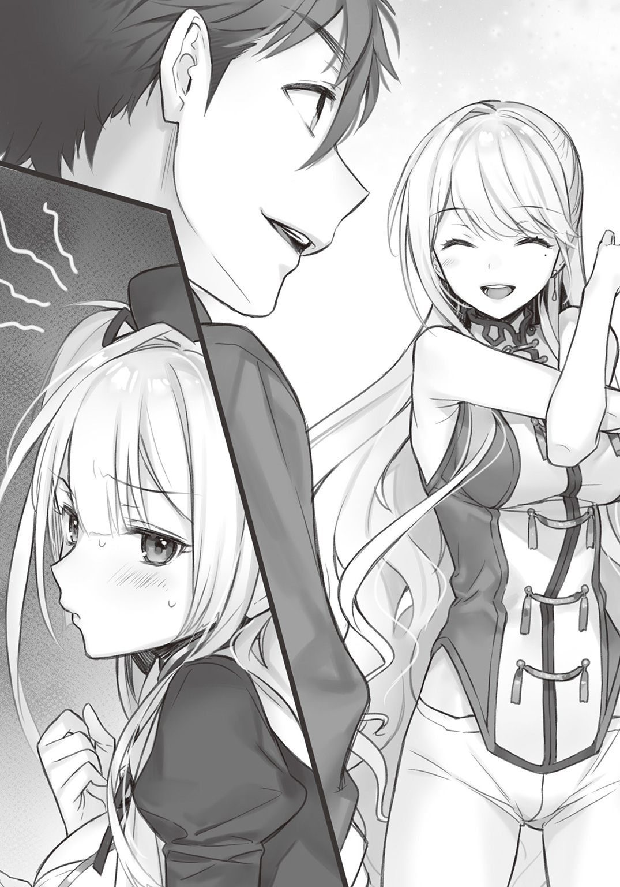

| 召喚されすぎた最強勇者の再召喚（リユニオン） | |
| 菊池九五 | |
この本は縦書きでレイアウトされています。
また、ご覧になる機種により、表示の差が認められることがあります。
 ダッシュエックス文庫DIGITAL
ダッシュエックス文庫DIGITAL
召喚されすぎた最強勇者の再召喚
菊池九五
プロローグ 記念すべき十回目
「えっ、あれ？ せ、成功したっ!?」
目の前にいる少女が俺を見て、その大きな目を丸くしていた。
まだ容姿に幼さを残している可愛らしい少女だ。今年で高二になる俺より二、三歳ほど年下だろうか。よく手入れされた綺麗な銀髪ストレート。その肩にかかるくらいのセミロングヘアをツーサイドアップにしている。
目を見張るのはそのスタイルのよさ。背は平均よりやや低めだが、胸元の膨らみはかなりの量感があり、さらにスカートから覗く太股は目の保養になるほど色っぽい。何というか俺より年下に見えるのに、思いの外悩ましボディだ。
そんな彼女の服装は『現代日本の私服』とはまったく異なる見た目をしている。
簡単に言えば『ファンタジーの魔法使い』のような格好だ。
彼女の手には、豪奢な装丁がなされた分厚い本。どこかのページを開きっぱなしにしながら片手に携えている。
その本から漂うただならぬ気配――つまり魔力の気配を感じて、確信する。
あれは魔導書の類だ。
さらに俺の足下には何やら魔法陣らしき図形が描かれていて、淡い光を放っている。
「......んー？」
俺はその光に包まれながら、ふと周囲を見回してみる。
石造りの壁が四方を囲む部屋。壁際の本棚にはぎっしりと専門書らしき物が並び、部屋の端にある机には研究器具らしき物が乱雑に置かれている。
いつの間にか魔法陣の光が消えてしまったので、室内の光源は壁にかけられたランプのみ。電気を用いたものではなく点火式だ。
目の前には魔法使いっぽい格好をした少女。
さらに彼女の手に携えられた魔導書。足下の魔法陣。魔法の研究室みたいな部屋。
それらのキーワードを頭の中で瞬時に組み合わせて、ある結論に至る。
「ふむ」
なるほどなるほど。了解です。
これはつまり――いつものアレ。
すなわち、異世界召喚だ。
少女の服装や部屋の雰囲気から察するに、世界観はオーソドックスに中世ヨーロッパ系。
手段はおそらく召喚魔法の類。召喚したのは、目の前にいる悩ましボディの少女だろう。
出会い頭に彼女が口にした単語を理解できたので、言葉は伝わると見ていい。いわゆる召喚魔法に付随する翻訳効果的なあれだと思われる。
そこまでパパッと考察してから、俺は正面に向き直って尋ねる。
「それで、俺は何をすればいいんだ？」
俺をこの世界に召喚した見知らぬ少女に、その目的を。
「えぅ？ は、はい！ な、何をすれば......ですか？」
俺の問いに対し、召喚師の少女は緊張したように背筋をピシッと伸ばした。魔導書を両手に抱きかかえるようにして持ち、口にする言葉はしどろもどろだった。
何だこの女の子。めっちゃ微笑ましい。不慣れな感じが凄く応援したくなる。
「悪い悪い。ちょっといきなりすぎたな」
確かに召喚された直後に召喚目的を尋ねるのは、性急すぎたかもしれない。
「とりあえず自己紹介でもして落ち着くか。俺は岡田アキトっていうんだけど、君は？」
「あっ。えっと......セリナ・フィアースと申します」
「ははは、申しますって。そんな畏まらなくても」
「ご、ごめんなさい」
「や、謝ることもないんだけど。それで、セリナだっけ？ 君が俺を召喚したんだよな。もしかして召喚は初めて？」
「あっ、いえ、小さな使い魔とかなら何度か......でも英雄様は初めて、です」
「はは、英雄ねぇ」
なるほど。この召喚師の少女――セリナは英雄を召喚しようとしていたのか。
だからこんなに緊張しているのだ。俺を英雄と思ってるから。
「まあ召喚するのは別に構わないんだけどさ、できればアポ取ってほしいな」
「あ、あぽ......ですか？」
セリナの緊張をほぐそうとして、俺は冗談交じりに言う。
「そうそう。君ら召喚師はいっつもそっちの事情でぽんぽん召喚するけどさ、こっちにも色々と予定があるんです。だから事前に『召喚します』って予約を入れてほしいわけですよ」
「す、すいませんっ！ 予約が必要だったなんて全然知らなくて......もしかして急な召喚はご迷惑でしたか？」
「や、迷惑ってほどじゃないけど。そっちの方がスケジュール的にスムーズというかね？」
異世界召喚という非日常を前に、まるで日常的なビジネスシーンみたいな会話を繰り広げる俺とセリナだった。
「ま、ぶっちゃけ、今日は世界的に有名な某狩りゲーの発売日だったんだ。その矢先に異世界召喚って、俺のハンターライフはどうなるのさ」
本当に楽しみにしていたんだ。だから高校から一旦帰宅した後、すぐソフトを買いに行こうと思ってた。
通販という手もあったが、あれは届くのが発売日から数日遅れる時がある。俺はダウンロード版よりもパッケージ版なので、結局のところ発売日に確実に入手する一番の方法は、近所の電器屋で予約することなのだ。
そういうわけで予約したゲームソフトを取りに行こうと、家の玄関を出た直後だった。
俺の足下に、魔法陣が浮かび上がったのは。
あまりのタイミングに思わず笑っちゃったね。シビレ罠にかかったモンスターの気持ちがわかったもん。
召喚自体は別に構わないが、ちゃんとこちらの予定を確認してほしいといつも思う。
まあ事前に予約なんて無理なのは重々承知なんで、これは単なる愚痴だけど。
「それはともかくとして。いやー、今回の召喚はラッキーというか、最早勝ち確ですな」
「今回？ かちかく？」
「召喚師が美少女とか、今まであんまりなかったもんなー」
「び、美少女って......!?」
「結構外せない王道なのに。いざ自分の時になるとなかなかないんだよねー、これが」
うんうんと俺は満足げに頷く。
「......あ、あのっ」
と、セリナがまるで恥ずかしさを誤魔化すように、わざとらしく声をかけてきた。
「ん、どうかした？」
「いえ、まるで召喚されることに慣れているような話し方をされるなと思いまして。それに『今回』とか『今まで』とか......もしかして誰かに召喚されるのは初めてじゃないんですか？」
「ああ、まーね」
不思議そうに首を傾げるセリナの鋭い指摘に、俺はニヤリと笑った。
つい悪戯心が刺激されたのだ。これから明かす事実は少なからず衝撃的だから、彼女が驚くだろうと思って。
そうだ。俺の言動に『慣れ』を感じたセリナは正しい。
だから告げる。俺自身ですらどうかと思う、その数字を。
「異世界に召喚されるのは――これで十回目だ」
これは俺にとって記念すべき十回目の異世界召喚。
それを聞いた召喚師の少女は、案の定その口を開けっ放しにするほど驚いていた。
一話 どこにでもあるフツーの異世界
俺が初めて異世界に召喚されたのは、小学校六年生の時だ。
当時の俺は、それはそれは大いに喜んだものだ。
だってそうだろう？ アニメやゲームのようなファンタジー世界に来られたのだから。
これがもう少し歳を取っていたなら、突然の異世界召喚における現実的な苦労や困難を想像して途方に暮れていたかもしれない。
だが当時の俺はガキだった。そりゃあ先に待ち構える苦労を考えるオツムなんて当然のごとくないので、目先の楽しさに目を輝かせるってもんである。
魔法が当たり前のように存在する世界。初めてそれを目にした時の興奮。
与えられた『見習い勇者』という役割と、悪い魔法使いを倒すという召喚目的。
異世界に召喚されたことで得た『特別な能力』。
現実では決して味わえない冒険と、旅の途中で次々に出会う仲間達。
待ち受けていた困難と挫折。それによって生まれた「日本に帰りたい」というちょっとしたホームシック。そしてそれを乗り越えた時の達成感。
それらのすべてが新鮮で、瑞々しくて、心の底から感動した。
そして俺はついに悪い魔法使いを倒して、異世界での冒険を終わらせたのだ。
召喚された目的を達成し、元の世界に帰ろうとする俺を、仲間達は涙を流しながら見送ってくれた。俺も大泣きしながら別れを告げたさ。今までずっと一緒に冒険した仲間達が別れ際に言う「また会おうね」って台詞は、どうしてあんなに涙腺に来るのか。
そうして日本に帰った俺は、しばらく何にも手がつかなかった。
ここではないどこかの世界で体験した不思議な冒険。その余韻のせいで小学校の授業もほわほわした頭で聞いていたのを覚えている。
そんな夢のような冒険の日々を、俺は誰にも話さなかった。自分が体験した『特別』を独り占めしたかったんだと思う。もう二度と経験することはないだろう冒険の日々を自分だけの宝物にして、得意になっていたのだ。
だが――そんな異世界での大冒険は、俺にとって受難の始まりでしかなかった。
二度とないだろうと思っていた二度目は、意外とあっさり訪れた。
二度目の異世界召喚は小学校卒業間近。
召喚されたのは、初めての時とはまた別の世界。前の王道的なファンタジーとは違って科学的に魔法を再現する技術があり、それが『錬金術』と呼ばれ、誰でも使えるようになっている世界だった。
再び異世界に召喚された俺は驚きつつもそれを受け入れ、ともすれば舞い上がっていた。
二度も異世界に召喚された俺は、何か特別な存在なのだろう、と。
しかも前の世界でいくつかの小さな魔法を修得していた俺は、科学で魔法を発現させる錬金術の世界において『科学の力を使わずに純粋な魔法を使える特別な存在』として、めっちゃ持ち上げられたのだ。
そりゃあもう調子に乗りまくったさ。
今回召喚されたことで得た二つめの《召喚特典能力》。それらの能力と、さらに前の世界で覚えた小さな魔法――その錬金術世界では『古代式魔法』と呼ばれるものを駆使して、俺は二度目の世界を攻略していった。
巻き込まれた事件を一つ一つ解決していき、その過程で出会った人々と交流し、時には敵対し、そして最終的には召喚された目的を見事達成。その世界で出会った人達と感動的な別れをして、元の世界に帰還した。
......。
............三度目は、中一の夏休みだった。
ここらになって俺はやっと、自分の身に起こっていることの異常性に気づき始めた。
だって異世界召喚だぞ。一度や二度だけでも衝撃的な人生体験だというのに、三度目なんかあるのかと。
そのような疑念を胸に抱きながら、俺はまた別世界での冒険を繰り広げた。
四回目は中一の冬休み。
最早異常どころの騒ぎではない召喚の頻度に、俺は言い知れぬ恐怖を抱いた。
その世界で召喚された目的を果たしつつも、俺は何とか自分の身に起こっている異常について調べようとした。だが原因は一切わからなかった。
五回目は中学二年のゴールデンウィークだ。
俺は自分の境遇を呪った。
諦めに満ちていたと言ってもいい。度重なる異世界召喚に嫌気が差し始めていた。
どうして俺ばっかり、と。
この時の俺は中学生というだけあって多感な時期だった。学校での人間関係、学業の成績、家庭環境などなど、普通の生活だけでいっぱいいっぱいだというのに、別世界の事情に巻き込まれてはたまったもんじゃなかったのだ。
いくら何度も異世界に喚ばれたからといって、俺は所詮現実世界の日本に生きる岡田秋人という学生なのだ。その根本となる人生を脅かされてまで、冒険をしたいわけじゃない。
そんな俺に転機が訪れたのは、六回目の時だ。
それまでもずっと、俺は自分が異世界召喚されまくる原因を調べていた。
それは六回目の世界でも同様だったが、結果は変わらない。
要は原因不明。色々調べたところで、わかったことといえば俺は『とことん異世界召喚される星の下に生まれた』という、改善のしようがない現実のみ。
その事実を突きつけられた俺は、端的に言って改善を諦めた。
もう仕方ないじゃないか。だって対処のしようがないんだから。
そうやって異世界に召喚されまくる自身を受け入れた時、ふとある考えが浮かんだ。
いわゆる発想の転換。この場合は原点回帰と言ってもいい。
つまり――どうせ対応策がないのであれば。
いっそのこと、旅行気分で異世界召喚を楽しめばいいんじゃないか、と。
幸いにして召喚される度に得ている特典能力の他にも、いくつもの異世界を攻略してきたことで地力も備わっていき、滅多なことでは命の危機に瀕さなくなっている。ならばせっかく誰も体験できないような異世界に何度も行けるわけだし、楽しまなければ損ではないか？
異世界を全力で楽しむ。
そう考えを切り替えてからというもの、俺の異世界召喚に対する価値観は変わった。
年に一、二回ほどのペースで起こる召喚。頻度的にはまさに趣味の旅行といった感じ。自分で計画を立てる旅行とは違って、いつもいきなり喚ばれるのが厄介だが、慣れればそれも気にならなくなった。
そうして俺は高一が終わるまでに計九回、それぞれ別の異世界に召喚された。
高校二年生に進級し、そろそろ来るんじゃないかと思っていたところで、今回の記念すべき十回目の召喚と相成ったわけである。
「ま、そういうわけで異世界召喚にはちょっとばかし詳しいかな、うん」
「それはまた何というか......希有な経験をお持ちですね」
俺が己の境遇を語り終えると、セリナはどう反応していいか困ったような顔をしていた。
現在俺はセリナに召喚された地下の魔法研究室から出て、リビングに移動していた。
壁が石造りで雰囲気が重々しかった研究室とは打って変わって、リビングは広やかでコテージみたいな内装だ。オシャレでありながらこざっぱりとしていて、居住者の几帳面さがうかがえる。
部屋中央のテーブルに対してＬ字に配置されたソファーに、俺とセリナは座っていた。
「セリナも、どっか別の世界に召喚される予定があるなら、何でも聞いてくれ。いきなり召喚された時の落ち着き方から世界の救い方まで。幅広くアドバイスしちゃうぜ？」
「いえ、お心遣いはありがたいのですが......今のところそういった予定はありませんので」
俺が自信満々に笑いかけると、苦笑するセリナに当たり障りのない対応をされた。
......あれ、何かやんわりと距離置かれてない？
もしかして何か避けられるようなことをしでかしたのかもしれない。
まいったな。心当たりがないぞ。
召喚師と良好な関係を結ぶことは、異世界召喚において重要事項だ。
仕方ない。ここは遠回しに言及して、関係改善を図るか。
「なあ。少し繊細な問題だから言葉を選んで聞くけど、何か俺に対してよそよそしくない？」
「......選んだわりに結構ストレートのような？」
セリナが再び苦笑いを浮かべた。
これでもだいぶオブラートに包んでいるつもりだ。だって俺がもっと直接的に言及するとしたら「もしかして俺のこと嫌い？」になるのだから。
「失礼があったのならごめんなさい。ただお聞きしたのが、ちょっと荒唐無稽なお話だったので、少し混乱しちゃってて......」
「あー、そういうこと」
「別の世界の存在や、それがたくさんあること、それを貴方様が渡り歩いていることなど......さすがに急には信じられないような内容ばかりなので......」
「まったくだよな。勘弁してほしいぜ」
「どうして当の本人が、他人事みたいに力強く頷くんですか？」
セリナが呆れと驚きの両方を含んだ表情で言った。
「それにお相手が英雄様なので......正直に言えば緊張しちゃっています」
そういえばそんなことを言ってたな。英雄を召喚するのは初めてとか何とか。
つまり彼女視点からすれば俺は英雄なのだろうが......それにしても、こうも緊張されっぱなしなのは、こちらとしても居心地が悪い。
「あのさ。セリナと俺は見たところあんまり年齢が変わらないみたいだし、そう畏まらず普通に接してくれないか」
「と、言いますと？」
「セリナは英雄を召喚したって言うけど、俺は元の世界じゃ別にそういう身分じゃないし。ここの世界で言うなら......普通に平民？ なわけで。無理して敬語を使う必要は――」
「あ、本当に？ よかったー」
......おや？
こちらが言い終わる前に、セリナはその大きな胸を撫で下ろした。
彼女はにぱっと可愛らしい笑みを浮かべる。
「君の方からそう言ってくれて嬉しいな。私、同年代くらいの友達ってあんまりいないから。そういえばアキトって歳はいくつなの？」
「え？ あー。今年で十七だけど」
「へー、私より二つもおにーさんだ。あっ、私のことはセリナって呼んでくれていいよ」
「............」
や、普通に接してくれとは言ったが、距離の詰めかた急すぎだろ。
あまりの切り替えの早さに若干戸惑っちゃったぜ、おにーさん。
初対面でガッチガチに緊張していたり、ずっと敬語を使っていたりしたから、何となく引っ込み思案な子かと思っていたが、意外と明るい性格っぽいというか......表現を選ぶなら、案外しっかりした子のようだ。
表現を選ばないのであれば、天然が入った子である。
仮にも自分が召喚した英雄に対して、いきなりこんな親しげにできるか普通？
「話は戻るけど、結局俺は何のために喚ばれたんだ？」
ソファーの背もたれに寄りかかりながら、俺は本題に入った。
「俺を召喚したってことは、セリナには何か目的があるんだろ？」
「――うん」
セリナは人の好さそうな笑顔から一転し、真剣な表情で頷いた。
その答えに満足して、俺は続けて問う。
「俺は何をすればいいんだ？ 魔王の討伐？ それともお姫様の救出？ あー、オーソドックスに召喚師の護衛って線もあるか」
「......もしかして今挙げた例って、アキトが今までやってきた経験に基づいてる？」
「まあね」
にやりと破顔した俺を見て、何か思うところがあったのか。セリナは俺から視線を切って、考え込むように手を口元に当てた。
「んー、どこから話せばいいのかなぁ......」
セリナはしばらく悩んだ後に「うんっ」と元気よく頷く。
「それを説明する前に、まず見てもらいたいものがあるの」
「見るって、何を？」
俺が聞き返すと、セリナはソファーから立ち上がり、真摯な表情で言った。
「私が住んでいるこの町を」
町の名は《フィザリア》というそうだ。
レイスガルド王国の国領にある町の一つで、王都から離れた場所に位置している。だが周辺諸国との交易ルートのちょうど通り道にあたるので、田舎町にしては発展しているのだとか。
フィザリアの町並みをざっと見た俺は、その説明に「確かに」と納得した。
田舎町らしく規模はあまり大きくない。ただ綺麗に舗装された路面や、整った煉瓦造りの建物が立ち並ぶ町の情景は、栄えているといって差し支えない。まさに中世ヨーロッパ風のファンタジー世界における地方都市といった町並みだ。
そんなフィザリアのメインストリートを、俺とセリナは並んで歩いていた。
彼女の家は町の外れに位置していたらしく、ここまで来るのにちょっと時間がかかった。
石畳の道を行く馬車。さらに道の脇に並んでいる果物や野菜、歩きながら食べられる軽食などを取り扱う露店が目に映る。
その通りを行き交う人々は、七・三くらいで人間・非人間の割合だ。非人間の種類はオーソドックスに耳長のエルフや獣人、有角人種に小人らしき者、珍しいところで妖精などなど。
うん。何というか、あれだ。
この町並みを一言で表わすならば......、
「フツー」
「えっ、何？ 普通？」
歩きながら突然独り言を呟いた俺に、セリナがびっくりしたように目を白黒させた。
「今更確認することじゃないんだが、この世界には魔法があるんだよな」
「もちろん。だって君を喚んだのが召喚魔法だもん」
「通りを行き交う人達を見る限り、人間と亜人が共存してる。たぶんモンスターも町の外に生息してるし、予想では魔族みたいな存在もいる」
「みたいっていうか、魔族そのものがいるけど」
「ふむ。じゃあ魔王と勇者は？」
「いるよ。それがどうかしたの？」
「や、普通だなって思ってさ」
中世ヨーロッパっぽい文明の町並みに、魔法が一般常識として存在。
さらにエルフや妖精が人間と共存し、魔族やモンスターもいれば、当たり前のように魔王と勇者が世界の存亡をかけて戦っている。
まさしく剣と魔法のファンタジーと言われて、誰もが最初に連想するような世界だ。
「うんうん、どこに出しても恥ずかしくない『どこにでもあるフツーの異世界』だ。数ある異世界を見てきた俺が言うんだから間違いない」
「な、何かちょっとバカにしてない？」
思わず呟くと、セリナがむぅと唇を尖らせていた。自分が生まれ育った世界を『普通』と言われて怒っているらしい。
「してないしてない。だって俺、王道とか大好きだし」
「......本当？」
「ホントホント。まあそれはそれとして、どうしてわざわざ町並みを見せたんだ？」
俺が問うと、セリナはむっとした顔をやめた。
続いて彼女の表情が少し陰りを帯びる。
「実は今、フィザリアの町は存亡の危機にさらされてるの」
「この町が？ 何で？」
突然明かされた事実に俺が目を丸くすると、セリナは重々しい雰囲気で説明を続ける。
「ある日突然、町の周辺に魔王軍を名乗る強力な魔族達が現れて、フィザリアを支配下においたの」
「支配下？ 侵略されたのか」
「うん、そうなるね」
「人間と魔族は争ってるんだろ？ 何で人間の町を滅ぼさずに残しておいてるんだ」
「滅ぼさない理由は『その方が便利だから』だって。定期的に町までやってきては食料とか物資とかを奪って、自分達の根城に帰っていくの」
「ふぅん？ 争っている相手の町を滅ぼすわけでなく、支配下において搾取するのか......」
つまりその魔族らは『フィザリアの町を滅ぼすため』にやってきたわけではない。
別の目的があるのか、それとも滅ぼさずに支配下に置くのが目的なのか......それにしたってフィザリアは田舎町らしいし、そんな町を魔王軍が支配するメリットなんかあるのか？
「けれど、それは直接滅ぼされないだけ」
俺が推察をしていると、セリナが不意に足を止めた。
彼女に合わせて、こちらも立ち止まる。
振り返ってみると、セリナは伏し目がちになって、表情を曇らせていた。
「町が魔族に支配されている。そんなフィザリアの現状を噂に聞いた商人達は、魔族を恐れてフィザリアに寄りつかなくなっちゃった......交易経路だったからこそ栄えていたのに、町に物資が入ってこなくなった」
フィザリアの現状を語るセリナの顔には、悲哀が滲み出ている。
「この状態を何とかするために町の警備隊が魔族討伐を試みたけど、全員返り討ちにあってしまったの。町の外へ救援を求めようにも、魔族が目を光らせているせいで、私達は満足に町から出ることもできない」
「......」
「フィザリアは魔族に支配されたままゆっくりと、確実に終わりを迎えようとしてる」
セリナの声は、泣き出しそうなほど震えていた。
......セリナはこの町が大好きなのだろう。
今日出会ったばかりの俺にもそれがわかるほど、彼女は滅びゆく町の運命を嘆いている。
「それを何とかしたくて、私は自分ができる精一杯のことをしようとしたの」
「――なるほどね。それで召喚魔法か」
この町を取り巻く事情を聞いた俺は、そこですべてを把握した。
「その魔族を倒すために英雄を召喚しようとした、ってことか」
「うん。私の取り柄なんて召喚魔法くらいしかないから......」
セリナはどこか寂しそうにそう言ってから、真摯な瞳で俺を見つめてくる。
「お願い、アキト。君の力でこのフィザリアを滅ぼそうとしてる魔族を――」
彼女はそう言いながら懇願するように頭を下げる......
「おぉっ！ あの屋台にあるのって何だ!? めっちゃ美味そうじゃん！」
その前に。俺はセリナの言葉を遮り、屋台に目がけてダッシュした。
「ちょ、ちょっとアキト!? 今、真面目な話をしてたのに！ も――っ!!」
「悪い悪い。でもあんな美味そうなもん見せられたら我慢できねーって！」
背後から聞こえてくる可愛らしい抗議に謝りながら、俺は屋台の前に到着した。
俺は屋台の店主らしき勝ち気そうな女性に、よっと軽く手を上げて笑顔で挨拶する。
「こんちはっす。これ美味そうだけど、何の料理なん？」
「いらっしゃい。何よ、キミ。モチリーを知らないの？」
二十代半ばくらいの美人店主さんは、不思議そうに目を丸くした。
「申し訳ない。ちょっと遠くから来たもんで」
「そういえばキミ、見ない顔ね」
「わかるんすか？」
「そりゃ今この町は魔族のせいで、外から人がまったく来ないから。むしろキミ、よく入ってこれたわね」
愛想よく会話しながらも、俺は屋台に並ぶ未知の食べ物に視線が釘付けだった。
見るからにモチモチしてそうな円状の平べったい白生地に、豚の角煮に似た肉と色取り取りの野菜が、まるでクレープのようにくるまれている。屋台の近くに来ただけで香ばしい匂いが鼻孔をくすぐり、食欲を駆り立てられた。
つまるところ、とにかく美味そうなのだ。
「遠くからって一体どっから来たの？」
「別の世界」
「へ？」
「にしても美味そうだなぁ。これ、お姉さんが作ったの？」
「そうよ。買うなら一つ、三百万リントね」
「初めてその通貨単位を聞いた俺でも、法外な値段ふっかけられてるってわかるぞ、それ」
リントとはこの世界の通貨単位のようだ。もしくはレイスガルド王国のものか。
「だって今、魔族のせいで物がないの。これくらいしないと、元が取れないのよ」
法外な値段を提示しておきながら、店主の女性は悪びれる様子もない。
そういやさっきセリナから、魔族のせいで交易が止まり物資は入ってこないし、町にあるものも搾取されていると聞いた。そうであれば、その法外な値段も妥当なのやもしれない。
まあどちらにせよ、彼女には伝えなければならないことがある。
「すんません、金持ってないんですよ俺」
「ははは。何だキミ、冷やかしだったの――さっさと失せなもしくは死ね」
「ちょっと変わり身が早すぎじゃない？」
つーか死ねは辛辣すぎだろ。貧乏人には生きることすら許されないってのか。
しかし悲しいかな、この世界における俺が死ぬほど貧乏なのは確かだ。
一応予約したゲームを受け取る予定だったので、財布の中には『円』のお札がいくらか入ってるが......当然この世界で役に立つことはないだろう。
「え、エステルさん。気持ちはすごーくわかりますけど、どうか落ち着いてください」
と、そこにセリナが慌てた様子で歩み寄ってきた。
「あら。何だ、セリナの連れだったの」
と、俺を庇うセリナを見て、店主の女性――エステルさんがあっさり怒りを収めた。
「ん？ 何？ 二人って顔見知りなのか？」
「この町に住んでて、セリナを知らない奴の方が少ないよ」
「へえ。有名人なんだな」
「そ、そんなことないよっ」
俺は感心して思わず声に出すと、セリナがどこか焦ったように言った。
「まさかこのおにーさんがセリナの知り合いとはね。一体どういう関係なの？」
「えっと、それは......って、アキト？ 何かモチリーを食い入るように見てない？」
「あ、どうぞ気にせず続けて。ウィンドウショッピングだから。見てるだけだから」
二人の話を流し聞きしながら、俺はモチリーとやらを見つめていた。
「そ、そう？ じゃあいいけど。それでエステルさん、私と彼の関係はというと――」
「......」
俺はモチリーをじっと見つめる。
「わ、私と彼の関係は――」
「............」
俺はモチリーをじっと見つめる。
「......それ、二つください」
根負けしたようにため息を吐いたセリナは、懐から財布を取り出した。
「はいはい。一つ三百リント、二つで六百リントね」
「待てい！ 俺の時は三百『万』リントだったろ！」
「何言ってんの。あんなの半分冗談だよ！ ......半分ね」
半分は大マジらしい。
つまるところとりあえず法外な値段をふっかけておいて、それで払ってもらえるなら御の字的な交渉術だったようだ。世知辛ぇ。
セリナが銅色の硬貨を六枚、エステルさんに手渡す。
エステルさんは「毎度」と言って、モチリーを二つ包み紙にくるんだ。
「ひゃっほー！ さんきゅーセリナ！ 愛してるぜ！」
「そ、そういう冗談はやめてよね......っ！」
エステルさんからモチリーを二つ受け取りながら、セリナは耳まで真っ赤に染める。
するとそんな俺達を見て、エステルさんが眉を顰めた。
「......セリナ。好みは人それぞれだけどね、あんまり変な男を捕まえるもんじゃないよ。文無しのロクでなしとか恋人にしても、いいことなんてないんだから」
「こ、恋人じゃありませんっ！」
これまた顔を真っ赤にしながら、セリナは大声で否定した。
「彼は――アキトは、私が魔族を倒すために召喚した英雄です！」
「えっ、このとぼけた彼が？」
「あ、どうも。そういうことらしいです」
目を丸くするエステルさんに、俺はセリナに買ってもらったモチリーにかぶりつきながら、ぺこりと頭を下げる。
直後。口の中に広がった絶妙な味に、俺は目を思いっきり見開いた。
「うおっ、何だこれ！ うまっ！ 生地がモチモチ食感だし！ 肉汁がめっちゃジューシーだし！ それに野菜のヘルシーさが合わさって後味がさっぱりしてるし！」
思わず声に出して絶賛する。それほどまでにこのモチリーというのが美味かったのだ。
「............ねえ、セリナ」
と、一心不乱にモチリーを頰張る俺を尻目に、エステルさんはセリナに声をかけた。
「もしかしてアナタ、召喚が失敗続きでついにおかしくなったんじゃ......」
「お、おかしくなってません！」
エステルさんの心配を滲ませた態度に、セリナは心外そうに頰を膨らませた。
「ん？ 召喚が失敗続き？」
エステルさんが口にした言葉に、俺は首を傾げる。もちろんモチリーを齧ったまま。
俺の疑問を余所に、エステルさんは何やら俺へ呆れ返った視線を向けてくる。
「でもねぇ。こんなひょろくて弱そうな彼が英雄とは思えないんだけど......」
「はっはっは、言ってくれるね」
その発言を聞いて、俺は目を細めながら薄ら笑いを浮かべた。そんな俺から言い知れぬ気迫を感じ取ったのか、エステルさんが「うっ......」と声を詰まらせて気圧されていた。
「俺がとぼけてる上にひょろいとかさ、それはまた――」
「な、何よ。そんなに睨んだって別に怖くなんか......」
「――随分と人を見る目があるじゃん。まったくもってその通りだ」
「えぇ!? 納得するの!?」
うんうんと何度も頷く俺に、セリナが仰天した。
「気に入ったぜ、エステルさん。モチリーをもう一つくれ」
「そ、そう......まさか今の流れで好意的に受け止めてもらえるとは思わなかったわ」
「というか『その面白さを評価して売上に貢献してやるぜ』みたいなノリだけど、アキトはお金持ってないでしょ」
「気に入ったぜ、エステルさん。モチリーをもう一つ、セリナが買うぜ」
「買いませんっ」
ちぇー。ダメだったか。
まあさすがに図々しかったな。勢いですでに半分くらい食べてしまったが、せっかく奢ってもらったんだし、残りは大切に食べよう。
俺が小さな決意を固めていると、セリナがぐいぐいーっと袖を引っ張ってくる。
「ほら、もういいでしょ！ 行くよ！」
「わかったよ。それじゃエステルさん。モチリーどうもでした」
「ええ。またね、情けない英雄くん。女に養われてないで仕事探しなさいよ」
「ちょっと待って。何か俺、ヒモのイメージが定着してない？」
慌てて訂正しようとしたが、エステルさんは俺から視線を外し、セリナを見やった。
「それとねセリナ、あんまり一人で気負わなくていいのよ？」
「......」
エステルさんの優しく諭すような言葉に、セリナがぴくりと反応した。
「アナタが失敗したって、誰もアナタを責めたりしないんだから」
「......モチリー、ありがとうございました」
エステルさんの言葉には答えず、セリナはお礼だけを言って足早に屋台の前を去った。
俺は何が何だかわからず、彼女の背を追うことしかできないのであった。
屋台から離れてからしばらくして、俺はセリナに疑問を投げかけた。
「なあ、失敗ってどういうこと？」
「っ......アキトって、ほんと物事をストレートに聞くよね」
ジト目で睨みつけられてしまった。
もうちょっと気を遣え。そう責める視線に、俺はモチリーを持ったまま肩を竦める。
「こういうのは遠回しに聞く方がどうかと思うけどね。腫れ物扱いはするのもされるのも、俺好きじゃないし」
「それは、そうだけど......アキトの場合は大雑把なだけだと思う」
「そりゃ異世界に十回も召喚されたら、大抵のことは気にならなくなるさ」
冗談めかした俺に何を思ったのか、セリナは少し言いづらそうに沈黙した。
やがて彼女は意を決したように、口を開く。
「エステルさんの言うとおりだよ。私、英雄を召喚しようとして何度も失敗したの」
「ほう」
「私は魔法使いの中でも珍しいサモナーの適性があるらしいんだけど、肝心の腕はまだまだ未熟で......そういう特訓とか修行をしてこなかったし、教えてくれる人もいなかったから」
おそらくそれは、必要じゃなかったからだ。
普通に平和な暮らしを送っている限り、何かを召喚して使役する必要に迫られることなど滅多にない。せいぜい小さな使い魔を呼び出して「便利だな」と思うくらいのもんだろう。
だが状況が変わった。
フィザリアが魔族に支配され、平穏は崩れ去った。警備隊が返り討ちにあって、外に助けを求めることもできず、もう手の打ちようがなくなってしまった。
「エステルさんや町のみんなは『お前一人が気負う必要はない』『気にするな』って言ってくれるけど......でもっ！ フィザリアを救うには、もうこれしかないの！」
その絶望的な状況を覆せる唯一の希望が、セリナの召喚魔法だったのだろう。
一縷の望みをかけて、町を救える英雄を召喚する。
「けど、私が未熟だったから......真剣に召喚魔法の訓練をしてこなかったから......何度も英雄の召喚に失敗した」
後悔と無力感に満ちた言葉を、セリナは絞り出すように口にする。
それを聞いて、俺は召喚された直後のことを思い出す。
『えっ、あれ？ せ、成功したっ!?』
驚いたような、それでいて安堵したような反応。
これでフィザリアが救える、と。
そういった切実な思いが、あの驚きには込められていたのだ。
「やっと、やっと成功したと思ってたのに......やっぱり今回も失敗だったのかな......」
「おいおい、召喚された本人の前でそれを言うか？」
「だってエステルさんが言ってたよ。英雄には見えないって......アキトも頷いてたじゃない」
まあ確かに、俺の体格はお世辞にも強そうには見えないからな。
数々の異世界で修羅場を乗り切ってきたので、体はそれなりに鍛えているが......どうも俺は着やせするタイプらしく、一見すると細身に見えるみたいなのだ。
英雄と紹介されてこんな奴を見たら、そりゃあ「ひょろい」って感想にもなるだろう。
しかし、だ。
「――ハッ。なめてもらっちゃ困る」
俺が鼻で笑い飛ばすと、セリナはきょとんとした。
「英雄に見えないって、それは外見の話だろ。人を見た目で判断しなさんな」
「......アキト？」
「言ったろ？ 俺は今まで九つの異世界に召喚されて、それを乗り切ってきたんだ。腕っ節にはそれなりに自信がある」
思いっきり唇の端を吊り上げて笑う。
また失敗したのかと、町を救うことはできないのかと嘆く少女を、勇気づけるように。
「大丈夫だセリナ。お前はちゃんと英雄の召喚に成功してるから」
「――ぁ」
「それでもまだ不安だってんなら、今からそれを証明してやる」
俺の言葉に、召喚師の少女は息を吞んだ。
その表情にどんな想いがこめられているのかはわからない。だが少なくとも悪いものではないことは、少し潤んだ瞳やわずかに紅潮している頰から見て取れた。
彼女の様子に満足し、俺は残りのモチリーを一口で食いきった。
一息に飲み込みながら、手元に残った包装紙をぐしゃっと丸めて握る。
「さて、召喚された目的もわかったことだし――そんじゃ、一狩り行きますか」
「ひ、ひとかり......？」
こちとら待ち遠しかった狩りゲーをお預けされた身だ。
その鬱憤は、悪さをしている魔族を狩ることで晴らさせてもらおう。
「で、その魔族ってのはどこにいるんだ？」
「え？ フィザリアの北門から出てしばらく行った岩山だけど......って、まさか」
「なるほど、北門ね。了解了解」
町の北門へ向けて歩き出す俺に、セリナはハッとして慌ててついてきた。
「今から魔族のところへ行くの!? 何の準備もしないで!?」
「ああ。こういうのは早い方がいいだろ」
「む、無茶だよ！ その強力な魔族は四体もいるし、部下の魔族やモンスターもたくさん控えてるんだよ！」
「まあまあ。任せておけって」
「そ、そんなこと言っても......！ それに岩山はその地形から天然の砦みたいになってるんだから！ 一人で攻め入っても......ってアキト！ 聞いてる!?」
ずんずんと歩を進める俺を必死に止めようと、セリナは追いすがる。彼女からすると俺は相当無謀な行動に出ているのだろう。
だが申し訳ないことに、こっちはもう止まる気はない。
この世界に来たばっかりで、少しもったいないのは確かだ。もうちょっと食べ歩きとか、観光地巡りなんかをして、この世界で旅行気分を味わいたかったのだが......。
けどセリナの悲しげな顔を見て、気が変わった。
早いとこ召喚された目的を果たしに行こう。
これ以上この町で、あんな顔をする奴が増えないように。
切り立った岩山を利用して作られた天然の要塞。
そこへ攻め込んだ俺を待ち受けるは、強力無比と言われる四体の魔族。
「ふははははは！ まだ我らに逆らう愚かな人間がいたとは、ぐあああっ!?」
「一人を倒したくらいで調子に乗るなよ。奴は我ら四人の中でも最弱、ふぐぅうう!!」
「人間にしてはやるようね。だけど私は前の二人のようにはいかな、きゃあああっ!?」
「よくぞここまで辿り着いた。それだけは褒めてや、にぎゃああ!!」
身の丈が三メートルを優に超える一つ目の巨人。
白骨化した牛頭を持つ、禍々しい見た目をした魔術師。
上半身が人間で下半身が巨大蜘蛛になっている女型の半人半蜘蛛。
全身が灰色の甲殻に覆われ、強大な魔力を有していた有翼の魔族。
――討 伐 完 了 ！
「はーっはっはっは！ 上手に狩れましたーっ！」
場所は岩砦の最深部。四体の中で最後に残った魔族を倒した俺は、勝利の雄叫びを上げた。
「ぬるいぬるい。《召喚特典能力》を使うまでもなかったな。これならまだそこらの大連続狩猟の方が難しいくらいだぜ」
皮肉げに言いながら、俺はご満悦な気持ちを抑えられず破顔する。
「噓......？」
俺の横では、セリナがあまりにもあっさりした決着に息を吞んでいた。
そのまま彼女は、驚愕を映した目で周りを見回す。
天然要塞と謳われていたそこは――今や岩肌が所々削られ、抉られ、崩壊している。まるで戦争があった後のような有り様である。俺が四体のボス魔族に繰り出した衝撃波や、行く手に立ち塞がるザコ達を蹴散らした時の余波などが、周囲にそんな被害をもたらしたのだ。
そして驚愕しているのは何もセリナだけではない。
たった今やられた四体の魔族。彼らが従えていた部下の低級魔族やモンスター達もまた、俺とボス魔族の戦闘結果に戦慄していた。
「ぼ、ボス達がやられたぞ！」
「聞いてねーよ！ 尋常じゃねーぞ、あいつの強さ！」
「かっかっか。そう褒めるなって」
慌てふためく低級魔族達の様子に満足して、俺は腕組みしながらうんうんと頷く。
「あの野郎、ホントに人間かよ！」
「いいや、ありゃ怪物だ！」
「あんな強さで人間なんてありえねぇ！」
「かっかっか。そう褒め......」
「化け物！ 悪魔より悪魔！」
「暴力の化身！」
「人の皮を被った異形！」
「言いすぎだろ!? さすがの俺でも傷つくぞ!?」
散々言ってくれやがるモブどもに、俺は涙目で叫ぶ。
すると彼らは俺の気迫に戦いたのか、ビクゥッ！ と跳ねるように体を震わせた。
「ど、どうする？」
「どうするって、お前......ボスの仇を」
「戦うのかよ？ あんな奴と？」
モブ魔族達は目配せし合う。その表情には明らかな逡巡。親玉の仇を討つために戦うか、それとも逃げるかを迷っているようだ。
ふむ。これはもう一押しといったところか。
「さて、お前らの親玉達がやられたわけだが」
「ひっ......！」
怯える彼らをさらに威圧するように、俺は唇の端を吊り上げる。
「俺も鬼じゃない。ここで尻尾を巻いて逃げるっつーなら――地獄の底まで追い立てて半殺しにするくらいで見逃してやる」
「そ、それって充分鬼なんじゃないかな......？」
俺の優しさに満ち溢れた宣告に、セリナが控えめな突っ込みを入れてきた。
そんな彼女をスルーして、俺はできるだけ堂々とした態度で腕を組む。
「まあ戦うってんなら止めない。でもオススメはしないが......なッ！」
気合いを入れると、俺を中心とした周囲一帯に変化が現れた。
キンッ、とガラスを打ち鳴らしたような小さな音。
同時に俺の背後に、幾何学的な文字で描かれた一つの魔法陣が浮かび上がった。
さらにそれに呼応するように、キンキキンッ！ と連続して魔法陣が出現。やがてその甲高い音が次第に、ガギ、ギギギギンギギガンッ！ と銃声のような爆音の連鎖となる。
視界を覆い尽くす、おびただしい数の攻性魔法陣。
それらはまるでそびえ立つ巨大な壁のように、俺の背後を埋め尽くしていた。
「「「............」」」
その光景にモブ魔族達は呆気に取られていたが、ハッとその表情に緊張を走らせる。
「や、やべぇ！ こんなん付き合ってられるかよ！」
誰かがそう言ったのを契機に、魔族達は脇目も振らず逃げ出していった。
おびただしい数の怒号と足音が岩砦に響き渡る。
「はっはっは。じゃ、お疲れさーん」
それらを耳にしながら俺は片手を挙げ、くいっと合図する。
瞬間。魔法陣から爆発的な光が溢れ、魔力弾が放たれた。
連続する砲撃音。着弾と同時に爆発し、宙に舞い上がるモブ魔族達。「ぎゃーっ！」と喉の奥から絞り出した悲痛な叫び。いくら走っても魔力弾は高速でホーミングしていき、一人として逃さず直撃する。
そんな阿鼻叫喚の光景がしばらく続き......残ったのは、墜ちた要塞だった。
魔力砲撃によって地面や岩壁が粉砕され、砂煙と黒煙があちこちで立ちこめている。
地に倒れ伏しているのはピクピクと痙攣して動かない魔族達だ。手加減したので死ぬことはないだろうが、まあしばらくは動けないだろう。
「よし。これくらいで見逃してやるか」
「だ、だから全然見逃してないよ、これ......？ 凄まじいレベルの攻性魔法をあらん限り撃ち込んだよね？」
まるで同情するような目で、セリナは魔族達を見やっていた。
己の故郷を滅ぼしかけていた魔族を哀れむとは、随分とお優しいですね。
「ま、これだけ痛めつければ、もう町にちょっかい出してくることはないだろ。砦の施設にも壊滅的な被害を与えたし」
「――本当に終わったの？ こんなにあっさり......？」
セリナが呟く。彼女はまるで状況を飲み込めず、心ここにあらずといった様子で、壊滅した魔族の本拠地を眺めていた。
今は呆然としてていいだろう。どうせもう町は救われたのだ。喜ぶなり感激なりするのは、心が落ち着いてからでも遅くない。
どちらにせよ、ここからはもう彼女達だけの物語だ。
少し寂しくはあるが、役目を果たした俺には関われない話なのである。
「さてっと。これで召喚目的はこなしたわけだし、俺はもう......ん？」
と、俺はふとした違和感を抱いた。
自分の手を眺めながら首を傾げる。
おかしいな。いつもならもうそろそろ『兆候』が出てもおかしくないんだが......？
「？ どうしたの、アキト？」
するとそんな俺の様子を不思議に思ったのか、セリナが声をかけてきた。
「あー......そこまで重大なことじゃないから、町に帰ってから話す」
安易に結論づけるのを避けるため、そうやってお茶を濁した。
それから俺は、この天然要塞の出口方面を指し示す。
「それじゃさっさと町に戻って、魔族の脅威が去ったって伝えてやろうか」
「そっか......うん、そうだよね！ うんっ！」
俺の言葉に、セリナは満面の笑みを浮かべた。
どうやら理解が追いついてきたらしい。その笑顔にはもう責任感に苛まれていた痛々しさはなく、年相応の女の子らしい喜びがいっぱい詰まっていた。
フィザリアを支配していた魔族が倒された。
その報せはすぐさま町中に伝播した。下手をすれば眉唾と思われても仕方ないその情報を町の人々がすぐに信じたのは、報せたのがセリナだったからだろう。彼女がフィザリアで『できた子』として有名だったからこそ、町民達は魔族討伐の成功を事実として信用したのだ。
魔族の支配から解放された人々の歓声は、フィザリアの町を震わせた。その喜びようといったら凄まじく、町全体が一丸となって急遽宴を催したくらいだ。
町を救った英雄と、英雄を召喚したセリナに感謝するため。
そのような名目で開かれた大宴会だったが、おそらく町の人々は自分達自身が喜び、騒ぎたかったのだろう。飲めや歌えのお祭り騒ぎが町中を包み込む。その賑やかさは日が暮れても続き、止まることはなかった。
この状況はどっかで見たことあると思ったら、あれだ。かの有名な麦わら帽子の船長が率いる海賊団が、困っている人々を救う度に催される大宴会に絵面がそっくりだ。
そんな宴会の中には、あのモチリー屋台のエステルさんもいた。
「いやー、あたしはね？ 初めてキミを見た時から本当の英雄だと思ってたよ！」
エステルさんは満面の笑顔で、調子のいいことを言っていた。
まあそれも仕方ないだろう。魔族の手によって滅びかけていた故郷が救われたのだ。騒ぎたくなる気持ちも、調子がよくなる気持ちもよくわかる。
そんな感じで、場所は町の中央に位置する広場。
俺は賑やかさの中心から少し離れたところに座って、歓喜する人々を眺めていた。彼らのノリのよさに合わせて踊ったり歌ったりと騒ぎすぎたので休憩中だ。
たまに町人達が俺のところまでやってきて感謝を告げたり、俺のグラスに飲み物を注いだりしてくる。彼らの晴れやかな顔を見ていると、こっちも嬉しくなる。
「アキトがたくさんの世界に行ったのって、本当だったんだね」
そうやって人が入れ替わり立ち替わりする中で、セリナが俺のもとにやってきた。
彼女は柔らかな微笑みを浮かべながら、とんっと俺の隣に女の子座りで腰を下ろした。その手には果物ジュースが入ったマグカップを持っている。
「何だよ。信じてなかったのか」
「あはは......疑っててごめんね。確かにアキトの強さを見るまで半信半疑だったかな」
セリナは苦笑しながら、ジュースを一口飲む。
「小さな使い魔を呼び出すのが精一杯の私が、アキトみたいな本当の英雄を召喚できたのは、きっと何かの奇跡か偶然なんだろうね」
「そうなのか？」
「うん。だってもう一回召喚しろって言われたら、絶対できない自信があるもん」
セリナは自分の至らなさを恥ずかしがるように笑う。
セリナ自身がそう言うのなら、おそらくそうなのだろう。今日一日一緒にいただけで彼女が聡い子だというのは俺にもわかった。自分自身の実力を見誤るような奴じゃない。
と、そこでセリナの表情にちょっとした悪戯っぽさが宿った。
「もしかしたらアキトは、神様からの贈り物だったりして」
「おいおい、俺がそんなロマンチックなもんに見えるのかよ」
「見えないね」
「手のひら返すの早くない？ セリナが言ってきたんだろ」
「ふふっ、冗談でーす」
召喚師の少女は手を口元に当てて、自然な微笑みを浮かべていた。
どうやらこの年相応の悪戯っぽさや、ころころと表情が変わる明るさが本来のセリナのようだ。魔族の脅威が去ったことでもう気負う必要もなくなり、こうして素に戻ったのだろう。
そんなセリナが今しがた口にした言葉を、頭の中で反芻する。
今回はたまたまうまくいっただけで、セリナはもう俺を召喚することができない。
それを聞いて、胸の奥に寂しさが生まれた。それはつまり俺が元の世界に帰ったら、彼女とは二度と会えないことを意味していたから。
いつも通りと言えばいつも通り。
それは異世界に別れを告げる時、毎回のように抱く名残惜しさだった。
――まっ、その名残惜しさを味わうのは、もう少し後になりそうだが。
「あっ、そういえば」
セリナが何かを思い出したかのように、切り出してきた。
「アキト、魔族の本拠地で何かに気づいてたよね？ 町に戻ったら話してくれるって」
「あー、それね。忘れてた」
言ってから、俺は悩ましさを表すように腕を組んだ。
「でもそれほど重要なことじゃないし。宴を楽しんでる今、それを話してもなぁ」
「気になるよー。教えて」
他人の秘密を知りたがる子供のように、セリナがお願いしてくる。
そこまで言われちゃ仕方ない。元々セリナにだって関係ある話だし、ここらで前もって明かしておくのもいいだろう。そう決断して、俺はセリナに向き直る。
それからできるだけ暗くならないよう、爽やかさを意識して笑顔を作った。
「これは今までたくさんの異世界に召喚された俺の経験則なんだが」
「うん」
「俺、もしかしたら元の世界に帰れなくなってるかもしれない」
「――え？」
さらりと打ち明けた俺に、セリナは目をぱちくりと瞬かせるのだった。
長らく続いた宴も終わり、一夜が明けた。
「――じゃあ、やってみるね」
「おう。よろしく」
場所はセリナの自宅。地下の魔法研究室。ごくりっと緊張した様子で喉を鳴らすセリナに、俺は軽く頷いた。俺の足下の床には魔法陣が描かれている。
セリナは俺の返事を聞いた後、一度目を閉じる。それから、すーっと気持ちを落ち着かせるように息を吸った。
次にその双眸を見開いた時、彼女の顔つきは凜としていた。
セリナはそのまま片手を前へ――つまり俺へと突き出しながら、その小さな口を開く。
「我が力によって書き換えられし流転の理よ。今こそ召喚に応えし運命の英雄を元来あるべき世へ還したまえ！」
はっきりとした詠唱。部屋中に響き渡るセリナの声に呼応するように、俺の足下に描かれた魔法陣が輝き始めた。初めは淡かった光が、徐々にその明るさを増していく。
やがて魔法陣が発する光は、部屋中を照らすほど目映いものとなり、そして――
パリンッと陶器が割れるような音がして、魔法陣の光は一瞬にして消滅した。
「あっ！」
失敗を悟ったセリナが驚きの声を漏らす。
セリナが発動したのは《送還魔法》だ。召喚したモノをその意志に関係なく『強制的に』元いた場所へ送り還すという、召喚師にとって必須の魔法である。
それをためしに今回召喚した俺に発動しようとしたのだが......何かしらの不可思議な力によって、不発に終わったのだ。
「んー、やっぱりなぁ」
その結果を見て、俺は光を失った魔法陣のど真ん中に立ちながら、ふむと頷く。
「やっぱり......アキトは元の世界に帰れなくなってるの？」
するとセリナが弱々しいながらも切迫した声を漏らした。眉尻が下がっていて、その表情には大きな不安が張り付いている。
詳しい話は昨日の夜、大宴会中での会話まで遡る。
「帰れなくなってるって、どういうこと？」
俺の言葉を聞いたセリナは、真剣味を帯びた声音で尋ねてきた。
「それを説明するには、まず俺の今までの経験について少し話しておかなきゃならない」
そう前置きしてから、俺は言う。
「俺は数々の異世界に行ったけど、それは全部何かしらの手段で召喚されたんだ」
「？ それって普通じゃないの？」
「や、それがそうでもない。俺は経験してないし、実際にあるのかわからんけど、世の中には転移とか転生って種類もある。その場合は召喚師ないしそれに値する者がいなくて、事故や偶然で異世界に迷い込んだってパターンもあるんだ」
喚び出した存在が明確にいる。それこそが異世界『召喚』の、転移や転生と異なる点だ。
それは今回のセリナのように人間の召喚魔法使いだったり、あるいは神様のように超常的な存在だったりと色々だ。
「そして召喚した者がいるってことは、俺には『果たすべき役目』があるってことなんだ。召喚する側は何か目的があって、俺を喚び出すわけだからな」
「......何か聞けば聞くほど当たり前のような気がするけど、それとアキトが元の世界に戻れなくなってるって話に、どんな関係があるの？」
首を傾げるセリナに俺は説明を続ける。今のは前提の話で、ここからが本題なのだ。
「俺はこれまで九回、その召喚された目的をこなしてきたわけなんだが......今まではその目的を果たすと、すぐに『元の世界へ帰る兆候』が現れてた」
「え？」
俺が明かした事柄に、セリナは目を見張った。
「俺はそれを《帰還兆候》って呼んでる。体が透け始めたり、帰還ゲートが現れたり、強制的に送還魔法が発動したり、突然世界と世界を繫ぐ案内人が現れたり......まあ種類は様々なんだが、共通点はその帰還兆候が現れるのは、目的を果たしてすぐってこと」
「......それって、もしかして」
ここまで説明して、セリナは俺の身に起きている事態を察したらしい。
「ああ。今回セリナに召喚された『魔族を討伐する』って目的を果たしたはずなのに、いまだ帰還兆候が現れてない。魔族を倒した時に俺が首を捻ったのは、それに気づいたからだ」
「......そんな」
そう漏らすセリナの声は掠れている。
責任を感じているような彼女の神妙な顔つきに、俺は慌てて言う。
「まあ明日になればひょっこり現れるかもしれないし。あくまで帰れなくなってる『かもしれない』だからさ、そう深く考えないでくれ」
「............」
声をかけても、セリナは思い詰めた表情のまま押し黙っていた。
それからしばらくして、彼女は沈黙を破るように言う。
「送還術......そう！ 送還術を試してみようよ！」
「送還術？」
「契約した使い魔が何かしらの問題を起こした時、強制的に送り返す魔法のこと。それを使えばもしかしたら......」
「なるほど。可能性はあるな」
「あっ。でも私、君を召喚したからもう魔力が残ってないや......」
セリナがしゅん......と項垂れる。
だがそれでめげることはなく、彼女はすぐさま顔を上げた。
「じゃあ明日！ 明日の朝起きて、アキトにその帰還兆候っていうのが出てなかったら、すぐに試してみよう？ それまでには魔力も回復すると思うから」
「や、別にそんな急がなくてもいいんだが」
「そういうわけにはいかないよっ」
セリナが声を荒らげた。
「だってアキト、元の世界に......生まれ育った故郷に帰れなくなって不安でしょ？」
「......あー」
実のところ、あんまり不安に思っていなかったりする。
それどころか『目的を果たした瞬間、帰還兆候が出ると知っていたので、もう少しこの異世界を旅行気分で楽しみたかった俺は、すぐに魔族を討伐するのをもったいないと思っていた』なんて口が裂けても言えなかった。
だってセリナときたら、めっちゃ責任を感じてる顔してんだもん。
「安心してね。私が責任を持って、絶対......絶対何とかするから！」
「......ああ。ありがとな」
固い決意を口にするセリナの尋常ならざる真剣な様子に、俺は流されるまま感謝することしかできなかった。
しかし結果は予想した通りだった。
翌朝になっても帰還兆候は現れず、そしてためしにやってみた送還魔法は失敗し、俺はいまだにこの十回目の異世界に留まっている。
「............」
「あー、そんな気落ちすんなって。な？」
「............でも、送還に失敗しちゃったし」
「あの不自然な失敗の仕方を見る限り、セリナの腕が原因ってわけじゃなさそうだろ」
「............うん」
地下の魔法研究室から場所を移して、セリナ宅のリビング。
ソファーの上で体育座りして、どんよりと落ち込んでいるセリナ。そんな彼女を何とか慰めようと、俺は自分の中に秘められたありったけの優しさをフル動員していた。
今こそ目覚めよ、俺の気遣いスキル！ 何としてもセリナの明るい笑顔を取り戻すんだ！
「えーっと、その、だからな？ 何が言いたいかというと」
「......」
「......な、何か食べたい物とかある？ 俺にできるものなら何でも作るけど」
どうも俺の気遣いスキルは爆睡中のようだ。
食べ物で慰めようとするとか、どんだけ短絡的なんだ。今時子供の機嫌を取ろうとする父親だって、こんな手段取らねーよ。
「......ううん、大丈夫。慰めてくれて、ありがとね」
しかも逆にフォローされてるし。
ダメだ。自分の気遣いスキルのなさに、俺の方が落ち込んできた。こちらに心配かけまいとするセリナの弱々しい笑顔が、殊更俺の胸を抉る。
「――私のせいだ」
俺が罪悪感に打ちひしがれていると、セリナがポツリと呟いた。
「私が召喚なんてしたから、アキトが帰れなくなった......どうしよう」
彼女は体育座りしている自分の膝に顔を埋めながら、くぐもった声で続けた。
どうやらセリナは、そのことに強く責任を感じているようだった。
自分が召喚してしまったからだと。そうしなければフィザリアの町を救えない状態だったにも拘わらず、自責の念に駆られている。
ああ。彼女は本当に真っ直ぐで、誠実な性格なんだろう。
セリナの心の清廉さを知った俺は、大きく息を吐いてからニヤリと笑う。
「――たぶん、召喚された目的ってのが別にあるんだ」
下手に気を遣うのは逆効果っぽいので、俺は事実だけを素直に告げる。
するとセリナが顔を上げて、俺を見つめてきた。
「別の目的......？」
「ああ。そうだとすれば辻褄が合うんだよな。俺がこの世界に喚ばれた召喚目的を果たしてないから帰還兆候も現れないし、送還魔法も何か謎の力で失敗したんだろうさ」
「そんな理由で送還術が失敗するのかな......？」
「そういうもんなんだよ。今までずっとそうだった。目的を果たしてないと、何がどうあっても帰れないんだ」
どうも俺が巻き込まれる召喚は、そういった理で回っているようなのだ。
「魔族討伐のためにセリナに喚ばれたけど、それは本来俺が果たすべき目的じゃなかった。となれば『真の召喚目的』が他に必ずある」
「それってどんな？」
「そこまではわからない。まあ順当に考えれば、召喚師であるセリナが無意識に叶えてほしいと思っていた本当の願いってあたりか」
「わ、私が思ってる......無意識の願い？ でも私は魔族討伐のために召喚したんだよ？」
セリナがこてんっと首を傾げる。本当の願いとやらに思い当たる節がないようだ。
「ま、それは例えばの話だ。別の可能性でいえば、それこそ世界の意志的なもんが関わってるケースがあるからな」
「そ、そこまで大事の場合もあるんだ」
「あるある。神様が勇者を召喚するとか、その典型だし」
俺も何度かそのケースで異世界に召喚されたしね。
「ま、とにかくだ。その『果たすべき真の役目』とやらを探し出して達成すれば――」
「アキトは元の世界に帰れる？」
「そういうこと」
その言葉を聞いたセリナの目は、もう落ち込んでいない。
進むべき道を知り、真っ直ぐに前へ向かおうとしている瞳だ。本当にできた少女である。
「ま、そういうわけで。その本当の目的とやらを見つけるまで、俺を召喚したセリナが責任を持って衣食住を提供してくれるとありがたい」
「え？ うん、それは全然構わないっていうか、当然そのつもりだったけど......？」
「マジで？ ラッキー。これで当面の食事と、雨風の心配はなくなったな」
俺はそう言って、ぐーっとソファーに座ったまま伸びをした。
「いやー、ぶっちゃけまだこの世界を全然満喫してなかったからさ。すぐに帰るのはちょっともったいないって思ってたとこなんだよなー」
「そ、そんなこと考えてたんだ......というかアキト、凄く落ち着いてるんだね」
「ん？ 落ち着いてるか、俺？」
「だって元の世界に帰れないなんて、本当なら不安で仕方ない状況のはずなのに、全然悲観的じゃないというか。原因を冷静に分析してるし、今後の方針もテキパキ決めてるから」
「あー、まあね。召喚された目的をなかなか果たせなくて、しばらく帰れないなんてしょっちゅうだからな。こういうアクシデントへの対処は慣れっこなんですよ」
「ふふっ。あんまり嬉しくない慣れっこだね」
俺が笑いながら肩を竦めると、セリナはおかしそうに口元を手で押さえた。どうやら笑顔を浮かべられるくらいには元気を取り戻したようだ。
それからセリナはソファーから立ち上がり、その豊満な胸に手を当てた。まるで「大船に乗ったつもりでいてくれ」と言わんばかりに。
「安心してね。アキトが帰れるようになるまで、私がちゃんと面倒見るから」
「ああ、頼りにしてる」
「うんっ！ それじゃこれからしばらくの間よろしくね、アキト」
「こちらこそ末永くよろしくお願いします」
「な、何かそれだと別の意味っぽくならない......？」
「気にしない気にしない」
恥ずかしそうに頰を染めながら首を傾げるセリナに、俺はケラケラと笑い声を上げた。
こうして、たった一日で色々と紆余曲折があったものの。
俺の記念すべき十回目の異世界召喚生活がスタートするのだった。
二話 異界の魔族とダンジョンピクニック
木漏れ日のようにカーテンの隙間から差し込む陽光で、セリナ・フィアースは目覚めた。
上半身を起こし、しばらくぼんやりとしてからベッドを出る。ワンピースのナイトウェアを私服に着替えて、姿見の前できっちりと身なりを整えてから、二階にある私室を後にした。
そのまま一階のリビングに行く――前に、ちょっとした思いつきで隣の部屋へ足を向けた。
数日前までは空き部屋だった場所。
しかし今は一緒に生活することになった同居人の『彼』がベッドで寝ていた。
「――――」
なるべく音を立てないように気をつけながら、ベッドの横まで歩み寄る。それから膝に手をついて、同居人である彼の寝顔を覗き込んだ。
彼の名前は、岡田アキトという。
やや赤味がかった髪。背丈は男性の平均くらいで、細身だがよく鍛えられた体。何を隠そう彼は、召喚師のセリナが別の世界から召喚した英雄である。
ほんの数日前まで、セリナが暮らすフィザリアの町は滅亡の危機に瀕していた。
それを救ったのがアキトである。彼はまだ召喚師として未熟なセリナが偶然、何らかの奇跡によって喚び出せたのだ。
アキトの強さは折り紙付きだ。町の警備隊が総力戦で挑んでも、たった一体にすら敵わなかった強力無比な魔族、それを四体も相手にして無傷で倒しきったほどである。それこそ何故セリナのような見習い召喚師が喚び出せたのかわからないレベルの英雄だ。
まあ、それはそれとして。
「ふふっ。こうしてると、全然英雄に見えないよね」
それがちょっとだけおかしくて、セリナは微笑みながら小声で呟いた。
普段のおどけていて、自由奔放な彼からは想像もできないほどあどけない寝顔。しかも寝相が悪く毛布がずれていて、だらしなくお腹を出して眠っている。
そんなアキトの寝姿を見て、彼を『別世界からやってきて一つの町をあっさり救った英雄』と思う者は少ないだろう。人によってはリアクションに困るかもしれない。
だがセリナは微笑ましいと思う。何となくその人間臭さに親近感が湧くからだ。
セリナはそっと毛布をアキトにかけ直してから、彼の部屋を出る。そのまま一階に下りて、キッチンへと向かった。
「よしっ」
ぐっと両手で拳を作って意気込んでから、セリナは朝ご飯を作り始めた。
セリナの召喚で別世界から喚び出されたアキトは、原因不明のアクシデントにより元の世界に帰れなくなった。
アキトが言うには『召喚された真の目的を果たしていないから』だという。セリナは彼を魔族討伐のために召喚したのだが、それが何かしらの原因で別のものに変わっているらしい。
その真の目的が見つかるまでの間、セリナはできる限りのサポートをするつもりだ。
それがアキトを召喚した自分の責任だと思っているし、何よりセリナの町を救ってくれた彼への恩返しにもなるから。
だから、まずは彼に朝ご飯を作ってあげよう。
彼は美味しいと言ってくれるだろうか、というちょっとした不安と期待。そして何より『誰かにご飯を作ってあげる』というのが楽しくて、セリナは自然と笑顔になっていた。
「おーっす......おはよー」
その時だった。キッチンにやってきたアキトが、間延びした挨拶をしてきた。
セリナが料理の手を止めて振り返ると、彼はまだ眠そうにしょぼしょぼと目を細めていた。
「おはよ。もう起きたんだ」
明るく挨拶を返しながら、料理を再開する。
するとアキトは目を擦りながら隣までやってきて、かすかに笑みを作った。
「......んー？ セリナって料理するのが好きなのか？」
「え？」
「料理してる姿を初めて見たけど、何か嬉しそうに朝飯作ってるからさ」
アキトの問いに対して、セリナは「んー」と少し考え込む。
「こうやって誰かにご飯を作ってあげるのってあんまり経験なかったから楽しいの。私ずっと一人暮らしだったから」
「ずっと一人暮らしねぇ......そういや聞いてなかったけど、セリナって家族は？」
ここに住まうようになってからセリナ以外に会っていないからだろう。アキトは寝惚け眼を擦りながら、何となしに尋ねてくる。
その質問に対して、セリナはちょっとだけ困ったように笑う。
「いないの。幼い頃からずっと」
「あー、そうなのか」
アキトが短く納得した。その顔は寝惚けていながらも、どこか思慮深いものになっている。特に追及してこないのは彼なりに気を遣っているのかもしれない。
彼の不器用な優しさに、セリナは心が温かくなって自然と笑顔を浮かべた。
「だから今は楽しいよ。無邪気な弟くんができたみたいで」
「おい。年齢的に俺は兄貴の方だろ」
「ごめんごめん、アキトって普段はだらしないから。じゃあ無邪気な弟くんじゃなくて、だらしないおにーちゃんってことで」
「それ、むしろ扱い悪くなってない？」
セリナが悪戯っぽく笑うと、アキトもそれに応えるように笑顔を浮かべた。
「ほら。もうすぐ朝ご飯できるから、顔洗ってきて」
セリナが言うと、アキトは何故かきょとんとした顔になった。
「どうしたの？」
「や、何か新婚みたいな台詞だなって」
「な、ななっ！ し、新婚......ッ!?」
アキトの言葉を聞き、セリナは変な声を出してしまった。かあぁっと顔が凄く熱くなる。鏡を見なくてもわかる。自分は今、耳まで真っ赤になっているだろう。
そんなセリナを見たアキトが、ケラケラと悪戯に成功した子供のように笑っていた。
ずるいと思った。そう思った理由はわからないが、とにかく面白そうに笑っているアキトはずるいと感じたのだ。
「も、もうっ！ 変な冗談言ってないで、早く顔洗ってきて！」
「へーへー」
セリナが声を上擦らせながら、ぐいぐいっとキッチンから追い出すようにアキトの背中を押す。すると彼はこちらを適当にあしらうような返事をして、顔を洗いに行った。
「......っ」
アキトがキッチンを去った後も、セリナはしばらく自分の胸を押さえていた。
彼が変なことを言ったせいで、まだ胸がドキドキしている。
何故ドキドキしているのかは、やっぱりわからなかった。
「ここ数日は、俺がセリナん家にしばらく滞在するための準備に終始してたよな」
リビングと地続きになっているダイニングで、俺はセリナが作ってくれた朝食を食べながら確認するように言った。
すると正面に座るセリナはパンにバターを塗りながら、こくんっと可愛らしく頷いてくる。
「そうだね」
「俺が使う日用品も揃えたし、この世界の最低限の常識も聞いた。町の中も大体案内してもらって、どこにどんな店や施設があるのかも教えてもらった。これだけ準備すれば充分だろう」
「それじゃあ......いよいよ？」
「おう。今日から本格的に動こうと思ってる」
真剣な表情のセリナに、俺は重々しく頷く。
「つーわけで、手始めにピクニック行こうぜ」
「ちょっと待って。色々言いたいことがあるから」
今日の予定について提案した俺に対して、セリナがこめかみを指で押さえた。
待てと言われたので律儀に待ってみる。するとセリナはゆっくりと確認してくる。
「どうしていきなりピクニック？」
「だって今日めっちゃいい天気じゃん」
「確かにそうだけど、私が言いたいのはそういうことじゃなくてね？」
「？ 何だよ、もうちょっとはっきり言ってくれ」
「ピクニックよりもやらなきゃいけないことがあるんじゃないかなーって思って」
「おいおい、晴れの日のピクニックより重要なことなんてないだろ」
「何でそんな自信満々に言い切れるのかな......」
セリナに呆れたようにため息をつかれてしまった。
何か今朝からセリナがちょっと機嫌を損ねているような？ 俺への対応が冷たいというわけではないが......何となく照れ隠しでもしているかのようにツンツンしている。
「しっかし、やらなきゃいけないことって言われてもなー」
セリナが口にした言葉に、俺は「はて？」と首を傾げる。
「元々俺って異世界に来たら旅行気分で満喫するのが信条だし、他にやることなんて......」
「召喚された本当の目的っていうのは探さなくていいの？」
「え？ ......あー、それね？」
そこでようやく彼女が言いたいことを理解した。
「大丈夫だいじょーぶ。それも追い追い、焦らずにボチボチ、じっくりコトコト気長に探していく方向で善処したいかなーって思ってるよ、うん。ホントホント」
「......何かその物言いだと、まったくやる気が感じられないんだけど？」
やっべ。あれ、不真面目を叱る先生の目だ。
ジトっとした半目を向けられて、俺がどう言い訳したもんかと考えていると......セリナが唐突に「ふふっ」と柔らかく微笑んだ。
「まあアキトがそれでいいなら、私は別に構わないんだけどね」
「あれ？ 意外だな。てっきり『真面目に探せ』って怒るもんかと」
「アキトは私達の恩人なのに、そんな急かすようなこと言えないよ」
「急かす？」
俺が疑問を口に出すと、セリナは小さく頷いてから説明を続ける。
「うん。だってその本当の召喚目的っていうのは、アキトが元の世界に帰るために探さなきゃいけないものなんだよね？」
「そうだな」
「それを私が探せって急かすのは『早く帰れ』って言ってるみたいでしょ？ それは恩人に対して失礼じゃない？」
「あー。セリナの視点からすると、そうなるかもな」
「そうなるんです。だからアキトがこの世界を満喫したいっていうなら、満喫しちゃっていいと思うよ。むしろ町を救ってくれた英雄様が楽しんでくれるなら、この世界に住んでいる身としては嬉しいしね」
セリナが「英雄様」という部分をちょっと悪戯っぽく言いながら、満面の笑みを浮かべる。
そこまで言われちゃ、満喫しないのは逆に失礼になるだろう。
「......ん？ 怒ってないなら、何でさっきは叱るような目になったんだ？」
「ふふ。アキトが慌てるかなって思ったから。今朝の仕返しです」
恩人に仕返しするのは失礼じゃないのか。
つーか仕返しされるようなことに、まったく心当たりがないんだけど俺。
「ピクニックに行くのはいいけど、行き先は決まってるの？」
「んー、あー。まあね」
「？」
俺の含みのある物言いに、セリナが不思議そうに首を傾げる。
ピクニックの行き先はまだ秘密にしておきたい。だって予定している行き先を伝えたら、セリナに余計な心労を与えてしまうかもしれないし。
「この前日用品を買ってた時、店員さんにちょうどいい場所を教えてもらったんだ」
「そうなんだ。それならいいんだけど」
俺が適当にはぐらかすと、セリナは特に追及してこなかった。気になるけど、こちらに何か話さない理由があると察して、あえて聞かないでいる。そんな気遣いが感じられる。セリナのこういう気配りさんなところが純粋にありがたい。
「あ、そうだ」
と、セリナが思い出したように言う。
「アキトが予定してる行き先って、町の外だよね？」
「ん？ ああ、そうだな」
「それならピクニックの前に、ちょっとアキトに案内したいところがあるんだけど」
「案内したいとこ？」
「うんっ」
セリナは元気よく頷いて、晴れやかに笑った。
「私がお気に入りのとっておきの場所。アキトにも知っててほしいから」
「うおー、すげー！ めっちゃいい景色！」
時刻は昼ちょっと前。場所はフィザリアの町を出てしばらく歩いたところ。
バスケットを持ったセリナの先導に従って、緩やかな坂道になっている野原を進んでいくと視界が拓けた高い丘に到着した。
丘の頂には、背の高い木が一本生えている。さらにその先は俺達が進んできた道よりも急な傾斜になっていて、高所からの見晴らしのよさに拍車をかけていた。
その眺めの素晴らしさといったら、まさしく絶景の一言だ。
世界の色を二分するかのような晴れ渡った青空と、雄大な緑の大地。
ここから少し離れたところに見えるのはフィザリアの町。歩き回るのに半日以上費やした町が、あれだけ小さく見えるのが何となく爽快だった。
まるで世界がどこまでも続いているかのように錯覚する、あまりにも広々とした景色。
俺は丘に吹く涼しげな風を肌に感じながら、その広大な世界を目に焼きつけた。
「ここが、私のお気に入りスポットです」
俺の感動を察してか、セリナは自慢げに胸を反らしていた。
「どう？ いい眺めでしょ？ 私、ここから見える景色が大好きなんだ」
「ああ、何つーか......凄ぇな、うん。めっちゃ広くて凄い」
「凄いしか言えてないよ？」
「言葉を忘れるほど感動してるってこと」
「そっか。それならよかった」
セリナが満足そうに頷いた。
「何か嬉しいことがあったり、逆に悲しいことがあったりしたら、私はここに来てこの景色を見るの。そうするとね、不思議と心がすっきりするんだ」
そう言ってセリナは俺から視線を切り、お気に入りだという景色に目を向けた。
「実はここ、本当ならアキトの召喚予定地だったんだよ？」
「そうなのか？」
「うん。ここは土地に含まれてるマナが豊富だから、召喚術を使うにはもってこいなの」
微笑みながら語るセリナに、確かにと納得する。今までの異世界召喚経験から学んだ方法を用いてちょっと探ってみたところ、ここら一帯の豊かな自然魔力を感じたからだ。
これならばセリナの言う通り、召喚術のような魔法を使うのに適しているだろう。
というか、この世界では自然魔力をオーソドックスにマナと呼ぶんだな。
さすがどこにでもあるフツーの異世界。とても王道でわかりやすい名称だ。
「でも、魔族がフィザリアの外を見張っていたせいで、ここには来られなくなっていたの。だからここを召喚に使うのは断念したんだ」
「......なるほどな。それで地下室を使ったのか」
「そういうこと。あの研究室は、他に比べればまだ条件がマシだったから」
そよ風に髪を揺らしながら景色を眺めるセリナの表情が、一瞬だけ陰りを帯びた。
魔族に抑圧され、大好きだというこの場所に訪れられなかった日々を思い返しているのかもしれない。セリナの綺麗な横顔はどこか寂しげで、ともすれば儚げだった。
「でもよかった。こうやって案内できて」
直後、セリナが俺へと顔を向けてきた。自然と視線が合う。
俺を見つめてくるセリナにはすでに先程までの儚さはなく、柔らかな笑みが宿っていた。
「私の大好きな場所を取り戻してくれたアキトには、ここを知っててほしかったの」
「それはまた光栄な話だ」
冗談などではなく、本心からそう思う。
するとセリナが口元に手を当てて、くすくすと笑い声を漏らした。
「英雄様にそう思っていただけるなんて、私の方が光栄でございますよ」
「今朝もそうだったけど、その英雄様ってのは何とかならないのか？ 調子狂うんだが」
「ふふっ。だってアキトってばそう呼ぶとバツが悪そうにするから、ちょっと面白くて」
「ったく。仕方ねー奴だな」
俺はわざとらしく肩を竦め、しかし決して悪い気分ではなかったので自然と笑みを作っていた。セリナも俺と同じように笑顔を浮かべる。
「それじゃ気を取り直して、ピクニックに行こっか」
しばらく景色を堪能した後、ふとセリナがそう仕切った。
「町の人に聞いたって言ってたけど、その場所ってここからでも行ける？」
「ああ、大丈夫。歩いていける範囲のはずだ」
「そっか。じゃあ今度はアキトが案内してね」
そう言って、セリナが両手で持っているバスケットを小さく掲げた。
「お昼にサンドイッチとか作ってきたから、着いたらそこで一緒に食べようね」
「ん？ あー、そうだな」
期待するような笑顔を向けられて、俺は思わず言い淀んでしまった。
すると俺の反応を訝しんだのか、セリナが目をぱちくりと瞬かせる。
「どうかしたの？」
「や、弁当を食う暇なんてあるのかなって思って」
「？」
「まあ行けばわかるよ」
ますます不思議そうにするセリナを安心させるように笑いかける。
それから俺はきょとんとしたままのセリナを連れて、その見晴らしのいい丘を後にした。
「えっと......ここは？」
そうしてやってきたピクニックスポットに、セリナは思いっきり困惑していた。
俺が案内したのは、あの丘から東に位置する山の中だ。高い木々が並ぶ緑豊かな森林。ただ目的地までのルートは結構整った獣道だったので、それほど険しい道のりではなかった。
森に入って少し歩いただけの山の麓付近。
そこに、何やら緑が生い茂る森林内に似つかわしくない人工物があった。
ブロック状の石を綺麗に積み重ねて作られた洞穴、とでもいうべきか。見た目はまるで古代遺跡の出入口。穴の大きさは高さと横幅、共に三メートルといったところ。
そんな建造物の穴の向こうは、これもまた石造りの階段となっていた。
階段は遙か下方へと続いており、先の方は暗くなっていて様子が窺えない。
その見ているだけで吸い込まれてしまいそうな真っ暗闇に、俺は力強く頷く。
「うん、ここで間違いないみたいだな」
満足げな俺とは裏腹に、セリナは暗闇に続く階段と俺を交互に見ながら眉を顰めた。
「......ここって何なの？」
「何って、もちろん予定してたピクニックスポットだけど」
「......見間違いかな？ 私の目にはダンジョンの入口に見えるんだけど」
「安心していいぜ。俺にもダンジョンの入口にしか見えないから」
「全然安心できないよ！ 不安でいっぱいになるよ！」
セリナの焦ったような叫び声が、階段の奥へと反響していく。
そうだ。この場所を見たセリナの感想は、何も間違っていない。
だって俺が町の人に教えてもらったのは、まさしくダンジョンの入口の場所なのだから。
「もうっ、どうしてこんな危ないところに来ちゃうの!?」
「まあ落ち着けって、ちゃんと説明するから」
どうどうと両手でジェスチャーしながら事の経緯を話し始める。
「何でもこのダンジョンの最深部には《異界の魔族》って異名を持つボスがいるらしいんだ」
「異界の魔族？」
「冒険者の間では有名らしいんだけど、聞いたことない？」
「んー。私は冒険者じゃないし、町の冒険者ギルドにも行かないから」
セリナが記憶を探るように、唇に指を当てる。
「どんな魔族なの？ 有名ってことはそれなりの逸話があるんだよね？」
「ああ。聞いたところによると、そいつはその異名が示すとおり『ここではないどこかの世界から突然襲来した魔族』なんだとさ」
「っ、それって......？」
何かを察したセリナの反応に、俺はニヤリと笑顔を浮かべる。
「本当に何の前触れもなく、まるで別世界から降って湧いたようにこの周辺に現れたらしい。そしてこのダンジョンのモンスターどもを圧倒的な実力でねじ伏せて支配下におき、ダンジョンのボスとして君臨したんだとか」
「それってアキトと一緒で、『別世界の出身』ってこと？」
「そういうこと」
言うならば別世界関係者である。
「同じ別世界関係者なら、もしかしたら俺の真の召喚目的についての手がかりを持ってるかもしれないだろ？ ま、可能性は低いかもしれないけど、別世界の出身って情報があるだけ何の手がかりもなく探すよりはマシだ」
「つまりこのダンジョンを最深部まで攻略して、その異界の魔族に会うのが目的ってこと？」
「ご明察」
俺の説明を聞いたセリナが、感心したように目を丸くした。
「本当の召喚目的について、しっかり探してたんだね」
「ちゃんと言ったろ？ じっくりコトコト気長に探していく方向で善処したいって」
「紛らわしいよ......普通だったらそれ、やらない人の台詞だもん」
セリナが「まったくもう、仕方ないなぁ」と言わんばかりの苦笑を浮かべた。
「そうならそうって最初から言ってくれればいいのに、何でピクニックなんて言ったの？」
「え？ だってダンジョン攻略なんてピクニックみたいなもんだろ」
「共感を求められても、そんなことはアキト以外思わないよ......」
「えー。でもモンスターやボス魔族がいることとか、場所によってはトラップが仕掛けられてることとか、暗くてジメジメしてることとかに目を瞑れば、実質ピクニックじゃん」
「目を瞑りすぎです！ ほとんど別物でしょ、それ！」
声を荒らげるセリナに対して、俺はまあまあと手でジェスチャーする。
「大丈夫だって。セリナは俺がちゃんと守るから」
「っ......もう！ 本当だからねっ」
俺がそう言うと、セリナは照れ隠しのように視線を逸らした。
「よし、じゃあ行くか」
「う、うん......」
俺が先導すると、セリナは不安そうにしながら後についてきた。二人でコツコツと足音を鳴らしながら、石造りの階段を下りていく。
果たして最深部にいるとされる《異界の魔族》とはどんな奴なのか。
そしてこのダンジョンはどういった仕掛けやモンスターがいるのか。
まさにピクニック気分でワクワクしながら、この世界での初ダンジョンに挑むのだった。
ダンジョン内を徘徊していた巨人モンスターが襲いかかってきた。
「よっ」
俺はそいつの頭上まで跳んでからその顔に拳を振り下ろし、地面にめり込ませた。
さらに通路を進んでいくと、床にあったトラップスイッチを踏んでしまった。
すると天井から鎖で吊るされた大型の鉄球が現れ、振り子のように迫ってきた。
「ほい」
俺はその身の丈ほどある鉄球を、ケンカキックで蹴り砕いた。
次のフロアに続く階段を下りていくと、そこには大量の触手をうねらせる大きなイソギンチャクみたいなモンスターがいた。
「ほう......これはなかなか」
俺はその触手に絡まれた、あられもない姿のセリナを想像した。
「ちょ、ちょっとアキト！ 何ぼーっとしてるの、モンスターが来てるよ!?」
すると俺の後ろで、セリナが焦ったように悲鳴を上げた。
「は、早く何かを！ 何かを召喚して、何とかしないと！」
ぼーっとしている俺を見て、セリナは自分で何とかしようと心に決めたようだ。バスケットを片手に持ち直し、もう片方の手を虚空に突き出す。
瞬間、淡い銀色の光がセリナの手に宿る。その光の中から、彼女の背丈くらいの長さを誇る杖が現れた。持ち手には綺麗な飾りがついていて、いかにも魔法使いの杖といった感じ。
どうやら召喚魔法であの触手モンスターを撃退するようだ。
この世界の召喚師の本領が見られる。そのような期待を胸に、俺は後方から召喚魔法を使おうとするセリナを見守っていた。
だが......、
「え、えっと！ な、何を召喚すれば、あのモンスターに有効的なんだろう？ えっと......これでもなくて、これでも......なくて！ わ、わかんないよーっ！」
焦ってうまくいかないのか、セリナの杖からは次々と使い魔が現れては、すぐに消えていく。赤い蝙蝠。白い炎を纏った小さな鳥。牙が生えたナイフ。エトセトラエトセトラ。
そんなセリナをどっかで見たことあると思っていたら、あれだ。あの有名な猫型ロボットが焦った時に四次元ポケットからめちゃくちゃに道具を取り出す時のあれにそっくりだ。
「きゃー！ にゅるにゅるが近づいてきてる！ は、早く......早くぅ......！」
『にゅる......にゅる......』
「やーッ！ 鳴き声もにゅるにゅるって言ってる――っ！」
「いやその鳴き声はおかしいだろ」
あかん。にゅるにゅるを前にしたセリナの目は混乱でぐるぐるしてる。
さすが自ら未熟と評価する見習い召喚師だ。焦っているとうまく召喚魔法が使えないとか微笑ましすぎるだろ。
「落ち着けって。闇雲に召喚魔法を使いまくっても、状況は好転しないぞ」

「わ、わかってるよっ。それよりも早くあのにゅるにゅる何とかして――っ！」
「はいはいっと」
俺は砲撃魔法を使って、その触手モンスターを消し飛ばした。
「よ、よかったぁ......」
セリナがその豊満な胸を、ほっと撫で下ろす。心から安心している顔だ。
「何？ セリナって、にゅるにゅるしたの苦手なのか？」
「と、得意な女の子なんていないよ......」
「ははは、そりゃ確かに」
「むぅ......笑わなくてもいいのに」
セリナは拗ねたように唇を尖らせた。
「悪い悪い。ほら、行こうぜ」
彼女に謝ってから、俺達は再び歩き始める。
俺の後ろに隠れるようにしてついてくるセリナは、さっきよりも警戒心むき出しだった。どうやら触手系モンスターが出るとわかってハラハラしているらしい。
「んー、それにしてものどかだねぇ」
壁掛けの松明に照らされている通路をてくてく進みながら、思わずそう呟く。
「こう、のんびりしたダンジョンだと散歩に最適だな。うんうん、へーわへーわ」
「道中は割と危険でいっぱいだった気がするんだけど......特にあのにゅるにゅる」
後ろからセリナが、異を唱えるように指摘してきた。
取り留めもない会話も挟みつつ、俺達は順調にダンジョンを踏破していくのだった。
そうして俺とセリナは、見事ダンジョンの最深部と思われるフロアに到着した。
「――わぁ、綺麗」
そこに広がる光景に、セリナは思わずといった様子で感嘆の声を上げていた。
フロアの正面に広がるのは大きな泉。天井や壁面は青白く発光する鍾乳洞になっている。その光が水面に反射し、フロア全体を淡く綺麗な青色に照らし出していた。
キラキラと青白く輝く泉の中心には、小さい浮島があった。俺達のいるところから細い道が一本だけ伸びていて、泉を渡れるようになっている。
そしてその浮島には、ぽつんと一つの建物が存在していた。
「何か不思議な建物だね、あれ」
細い道を歩いて浮島を渡り、その建物を前にしたセリナがぽつりと感想を漏らす。
セリナの感想は正しい。何故ならこの世界の住人は、このような建造物を見たことがないだろうし、もしあったとしても本当に珍しいだろうからだ。
簡単に言うと、神社にある拝殿っぽい和風建築物なのだ。
基本的には木造で屋根は瓦葺き、正面の扉は両開きの障子になっている。見た目の大きさから推測して、内部は大体ワンルームくらいの広さだろうか。賽銭箱や鈴はないが、あれは間違いなくお社とか拝殿と呼ばれる類のものだ。鍾乳洞の幻想的な青光に照らされているそれは、神に関係する建造物だけあって、不思議な神々しさを持っていた。
何故こんなところに、和風建築物があるのか。
その理由にまったく見当がつかず、俺が首を捻っていると、
「――へぇ？ よくここまで来られたわね」
少女の声が、小さな拝殿の中から聞こえてきた。
瞬間。拝殿の中がぼんやりと白い灯りに満たされる。
それと同時に、正面の障子にはまるで影絵のように少女のシルエットが映し出された。
「上の方が騒がしかったからもしやと思っていたけど、まさか本当に辿り着けるとはね。それだけは褒めてあげてもいいわ」
少女はクスクスと艶っぽく笑いながら、俺達に語りかけてくる。
「けれど......淑女の部屋に、いきなり土足で上がり込むのは躾がなっていないんじゃないの、冒険者さん？」
あどけない口調ながらも、声音から滲み出る厳かな貫禄。
幼稚さと老獪さを併せ持ったような妖艶な雰囲気。
言葉を一つ一つ紡ぐだけで周囲の空気がピリピリするような威圧感に、俺は確信する。
障子の向こうにいるその者こそが、このダンジョンのボス。
この世界ではないどこかから襲来した《異界の魔族》なのだと。
「そんな不躾者は――くびり殺されても文句はないわよね？」
そしてそのボスからただならぬ殺気を向けられ、俺が取った行動はというと、
「あ、そこにちょうどいいスペースがあるじゃん。ここにシート敷くか」
ピクニック用のシートを地面に敷いて、場所取りをしていた。
「いやー、ここだけいい感じに平らだな。ほら、セリナも早く座れよ」
「えっ？ あ、アキト、いいの......？」
そそくさとシートに座る俺を、セリナがぽかんとした顔で見下ろしていた。
「何が？」
「だって今ボスっぽい女の子が話しかけてきてるから......無視しちゃっていいのかなって」
「どうせボス特有の長ったらしい前口上だろ？ 黙って聞いてても退屈だからさ、あれが終わるまでこの鍾乳洞を鑑賞しながら、飯でも食って待ってようぜ」
「い、いいのかなぁ......？」
おずおずといった様子だが、セリナもしっかりシートに座る。
「............」
そして拝殿内の異界の魔族は「信じられない」と言わんばかりに沈黙しているのだった。
それから扉の障子に映し出された魔族の影は「こほんっ......」と仕切り直すように、わざとらしく咳払いする。
「まあ私もそこまで野蛮じゃないつもりよ。ここまで辿り着いたご褒美として、今すぐこのフロアから出て行けば命だけは――」
「うわっ。この揚げ物、めっちゃうまっ！ 何これ？」
「え？ えへへっ。それはね、白身魚のフライです」
俺が素直に褒めると、セリナは嬉しそうにはにかみながら答えた。
「......ちょっと聞いてる？ 当然のように私をスルーしてランチしないでくれない？」
何やら雰囲気が崩れた異界の魔族が何か言ってるが、そんなのに構ってる暇はない。
俺は今サンドイッチの付け合わせとして、セリナが作ってきたおかずに忙しいのだ。
「なるほどな、どうりで懐かしい味だ。んー、贅沢を言えば醬油が欲しいなぁ」
「しょーゆ？ 何それ」
「......ねえ、あの？」
「醬油ってのは俺が元いた世界の調味料だ。これがまた白身魚のフライに合うんだ」
「へぇ、そうなんだ。一度食べてみたいかも」
「............お願いだから、私の話を」
「俺としても一度は体験してみてほしいんだよな。ホントに美味いから」
「でもそれってアキトの世界の調味料なんでしょ？ 残念だけどさすがに無理じゃないかな」
「............」
「んー、どうにかならんものか......あ、そうだ。なあ、異界の魔族だっけ？」
「............何よ」
俺が声をかけると、異界の魔族は扉の向こうから律儀に聞き返してきた。
そんな彼女に、俺は爽やかに問う。
「醬油持ってない？ よかったら分けてほしいんだけど」
「っ......いい加減にしなさいよ、貴方達ぃぃぃいいいい――ッッッ!!」
ズバーンッ！ とけたたましい音が鳴り響き、拝殿の扉が勢いよく開け放たれた。
姿を現したのは、大和撫子然とした美少女だった。
見た目の年齢はセリナより少し若いくらいか。腰まで届きそうな長髪は艶のある黒。少し吊り目気味の大きな瞳には憤怒の色が宿っている。
身に纏っているのは振り袖の着物とミニスカの袴。まるで花魁のように着崩して、その華奢な肩を露出している。和風建築物と同じで、やはりこのどこにでもあるフツーの異世界にはあまり似つかわしくない服装をしている。
「ん？」
彼女の姿を一目見て、俺は頭の片隅に引っかかりを覚えた。
脳裏をよぎる既視感に首を傾げていると、和装美少女は、だんだんっ！ と地団駄を踏んだ。穿いているのがミニスカなので、その中身が見え......そうで見えない。ちっ。
「ここは仮にもダンジョンの最深部よ？ ボスの座に君臨している私が目の前にいるのよ!? それなのに吞気にシートを敷いて談笑しながらランチなんて一体どういうつもり!? ピクニックじゃないのよ!?」
「や、まさしくピクニックに来たんだけど、俺達」
「ダンジョンにピクニック!? 危機感なさすぎるんじゃないの!?」
「あ、あはは......ごもっともです」
和装美少女の驚愕した声に、セリナが返す言葉もないといった様子で苦笑した。
吞気なセリナの反応が、さらに和装美少女の癇に障ったのかもしれない。彼女は「あーもーッ！ 調子が狂うッ！」と叫びながら、自らの頭をぐしゃぐしゃかいた。
「とにかくッ！ この私に多大な狼藉を働いたからには覚悟しなさい！ ぎったぎたのめっためたの八つ裂きにしてあげるんだからッ！」
「悪かったって。謝るからそうカリカリすんなよ。別に俺達は戦いに来たわけじゃ......」
「あとこれだけは譲れないからはっきり言っておくけど！ 私は白身魚のフライにはタルタルソース派よ！」
「そこは一番どうでもいいだろ」
ビシィッ！ とこちらを指差しながらタルタルソース愛を説く異界の魔族。
そこで彼女は初めて、俺達へまともに視線を向けたことになる。
「え？」
そこで異界の魔族は目を丸くした。
まるで既視感を覚えたかのような表情。さっき彼女を見た時の俺も、おそらくあんな顔をしていただろう。
「あ、あああ、あああ貴方、貴方はッ!?」
ちょっと沈黙した後、異界の魔族はこちらへ向けた指をぷるぷると震わせ始めた。
「岡田秋人！ どうして貴方がこの世界にいるのよ!?」
「あ、やっぱミツネだったの？ 他人の空似かと思ってたわ」
驚愕を露にする異界の魔族――ミツネに、俺はよっと軽く手を挙げて挨拶する。
「......アキト、どういうこと？ もしかして知り合いなの？」

俺達のやり取りに、ただならぬ気配を感じ取ったのだろう。セリナが俺とミツネの顔を交互に見てから尋ねてくる。
あー、何て説明したらいいのか。
「実はな、ミツネは俺が五回目の異世界で敵として戦った《世界最強の吸血鬼》なんだ」
そんな前置きをしてから、俺は自分とミツネの因縁じみた関係をセリナに語った。
俺が五回目に召喚された異世界。
そこは『人類と吸血鬼が敵対している和風ファンタジー』の世界だった。
吸血鬼が蔓延るその世界に、俺は人類側の味方として召喚され――そして、その世界で最強の吸血鬼と謳われるミツネと相対した。
ミツネは気分屋な性格だったため、明確に吸血鬼陣営に属していたわけではない。言うならば人間と吸血鬼、どちらにも荷担していない一匹狼だった。
本来ならば争う必要がない存在......しかし色々と、それはもう諸々の事情がこんがらがってしまった結果、俺はミツネと敵対することとなり、彼女と戦った。
激戦だった。何せ相手は最強の吸血鬼。当時の俺では実力的に負けており、人間陣営の味方と協力して何とか拮抗するといった状況だった。
そうして熾烈を極めたギリギリの死闘の末、俺はミツネに打ち勝ったのである。
「その後、俺はミツネを封印。それとは別に召喚目的も無事に達成して、元の世界に帰りましたとさ。めでたしめでたし」
「そんな壮絶な過去があったんだ......」
「何もめでたくないわよ！」
俺が説明を終えると、セリナとミツネの二人はそれぞれの反応を示した。
現在セリナは俺の隣に佇み、ミツネは警戒したように距離を取った位置で身構えていた。
ちなみにピクニック用のシートや昼ご飯はミツネが「しまいなさい！」とやかましかったので、仕方なく片付けてある。
俺は改めてミツネに向き直る。
「ミツネ。何でお前、この世界にいるんだ？」
「知らないわよ。貴方達に封印された途端、気づいたらこの世界にいたんだから」
「へぇ。もしかしてあの世界の封印術って、この世界に送りつけるもんだったのかね」
「そ、それはちょっと傍迷惑じゃないかな......？」
最強の吸血鬼とやらを送り込まれた世界の住人として、セリナが申し立てる。
「それはないわ」
が、ミツネは俺の考えを、不機嫌そうなツラで否定した。
「あの世界で私以外にも封印された吸血鬼はたくさんいたでしょうけど、その内の誰かがこの世界に来たって話は聞いたことないもの。少なくとも私の知る範囲では」
「ふぅん？ 要するにお前がこの世界に流れ着いたのは偶然ってことか」
「そういうことになるわね」
そこでミツネは何故か得意げな顔になった。
「何せ私は最強の吸血鬼だもの。あの世界の術では封印しきれなかったんでしょうね。そして効果を発揮しきれなかった封印術が変な作用を起こして、私をこの世界に飛ばしたんでしょ」
「じゃあ俺がこの世界で果たすべき召喚目的について、何か手がかりを持ってるわけじゃないんだな」
「召喚目的？ ......あー、そういえば前の世界でもそんなこと言ってたわね」
「簡単に言えば、俺が元の世界に帰るための条件なんだけど。何か知らない？」
「知るわけないでしょ、そんなの」
ミツネは取り付く島もなく答えた。
異界の魔族と呼ばれるミツネが、この世界にやってきた原因は不明。世界間を移動する術を知るはずもなく、もちろん俺の召喚目的や帰還条件についての情報は持ってない。
「つまり収穫はなしか」
「うーん、なかなか思うようにはいかないね」
「ま、こればかりは仕方ねーさ。気長にやっていこうぜ」
今後を憂うようなセリナに対して、俺は苦笑しながら肩を竦める。
それから気を取り直すように、ミツネに話しかける。異界の魔族から情報を聞き出すという用件は終わったので、この先はプライベートな会話だ。
「それにしても久々だな。元気にしてた？」
「な、何よ、いきなり......馴れ馴れしいわね」
「だって三年振りだし。五回目の異世界は俺が中二の頃だったから、同じ中学の奴と再会した感覚なんだよね」
「敵同士だった相手を、同じ学校出身みたいに扱わないでもらえる？」
煩わしそうに言って、ミツネは眉を顰める。
「というか三年どころか、私がこの世界に飛ばされてから百年近く経ってるわ。人間なら寿命を迎えていてもおかしくない年月なのに......どうしてちょっと成長した程度にしか姿が変わってないのよ、貴方」
「へー。お前の主観だとそんなに経ってるのか。そりゃ俺の顔見た途端、驚くわな」
「どういうこと？」
俺がケラケラ笑っていると、セリナが説明を求めてくる。
「あー、どうも世界ってのはそれぞれ時間の流れが異なるらしいんだ。大体......というか、今まで俺が行った異世界は全部、俺の元いる世界より時間の流れが速かった。まあ逆に言えば俺の世界だけ時間の流れが特別遅いってことなんだけど」
「ちょ、ちょっとわかりづらいかな」
「ま、要するに俺は数ある異世界で数カ月くらい冒険を繰り広げても、元の世界では『たまに数日くらいふらっと学校来なくなる奴』程度にしか思われないってこと」
「......何か実感がこもった台詞だね」
うん。実際クラスメイトに言われたからな。「たまにプチ不登校するよね」って。
「そんなわけでだ、ミツネ。お前からすれば百年振りってのも間違いないし、俺からすれば三年振りってのも間違いじゃないんだ、これが」
「......へえ、そうなの」
「はっはっは。ま、どっちにしろ久しぶりなのは変わりねーけどな」
「............」
と、そこで気づいた。
何やらミツネが露骨に訝しむような顔を俺に向けていることに。
眉間にシワを寄せ、口はへの字に引き結んでいる。不満というより何かに納得いっていないような、そんな表情だ。
「どうした？」
「何というか......貴方、本当にあの秋人なの？」
「はあ？ 当たり前だろ。急に何だよ」
俺が思わず呆れ声で答えると、ミツネはますます顔を顰めながら、
「貴方ってそんなに明るい人柄だったかしら？」
本当に不思議そうに、ぽつりと呟いた。
「前の世界での貴方はもっとこう、退廃的だったというか、世の中のすべてに悲観しているというか。どちらかというと他者に対して無愛想で冷ややかな性格じゃなかった？」
「うぐっ......！」
その指摘に声を詰まらせてしまう。
「間違っても今みたいに、久々に会った私に対して好意的に挨拶してくるような性格じゃなかったわよ。私を目にした途端、鬱陶しそうにため息を漏らして『......何だよ、またお前か』って興味なさそうに言うような......」
「や、やめろぉーっ！」
懇切丁寧に過去の俺の人物像を説明するミツネに、思わず懇願するように叫んだ。
俺の突発的な行動に、セリナとミツネが何事かと目を瞬かせた。
が、彼女らに弁明している余裕は今の俺にはなかった。それどころかミツネに過去の痛々しい自分を掘り返されて、恥辱のあまり身悶えしそうだった。
「ち、違うんだ！ 五回目の時の俺は、異世界召喚されまくる己の境遇にやさぐれていた時期だったんだ！ しかもちょうど多感な中学二年生ということもあって、わざわざ物事を斜めに捉えちゃうような中二病真っ盛りだったんだ！ そうなるのも仕方ないじゃないか！」
誰だって一度くらいあるだろう。クールな主人公とか、悲劇のヒーローに憧れる時期が。
運が悪いことに俺はその時期と、召喚されまくって嫌気が差していた時期が重なっちゃったんだよ。そりゃあちょっとくらい痛い奴になるだろ。
「そ、そんなに気落ちしないで、アキト！」
と、俺の羞恥の念を察したのか。セリナはぐっと胸の前に両手の拳を持ってきて、まるで俺を応援するように言う。
「悲しい過去を乗り切ったアキトは偉いと思うよ！」
「そうそう。それに退廃的だった頃の貴方、私は意外と好きだったわよ」
「や、やめてくれ！ 二人して優しく励まさないでくれ！ 逆にいたたまれなくなる！」
しかも心優しいセリナならともかく、ミツネまで慰めてくるとは。
どうやら今の俺は相当気の毒に見えるらしい。
「すッ、すす好き......っ!? あ、ああアキトのことがでありますか!?」
そしてセリナがミツネの言葉に反応して、何かおかしな感じになっていた。ロボットキャラや兵隊さんキャラによくある『であります口調』に変わっている。
「ま、昔と違って貴方が緩みきっているのは――私にとって好都合かしら？」
ミツネが、ふふっと小さな笑い声を漏らした。
瞬間。彼女から鮮血のように赤黒い魔力が立ち上った。
「っ」
陽炎の如く立ちこめる禍々しい気。それを目にしたセリナが戦き、息を吞む。
「前の世界で封印された恨みは晴らさせてもらうわよ、秋人。覚悟しなさい」
何だかんだで今まで和やかだった雰囲気から一転、ミツネは敵意と殺意に満ちた妖艶な笑みを俺に向けてくる。
その病的でありながら艶めかしく美しい微笑は、あの頃と何も変わっていない。
五回目の異世界で戦った、世界最強の吸血鬼たる彼女から何一つ。
「......いきなり殺気立ったかと思えば、そういうこと」
そんな笑みを向けられたもんだから、つい懐かしくなって俺も破顔してしまった。
「今ここで雌雄を決したいとか、そういう感じ？」
「ええ、そうよ。お誘いに乗ってくれるかしら？」
「ははは。なかなか魅力的なデートの誘いだけど、別に戦いに来たわけじゃねーんだよな俺」
「で、デート......っ!?」
セリナが「むぅ!?」といった感じに頰を膨らませた。
「そう邪険にしなくてもいいじゃない。あの頃と同じように熱い逢瀬を楽しみましょうよ」
「あ、熱い逢瀬......っ！」
セリナが「むむうぅ......ッ！」といった不満顔になった。
さっきから何なんだこの召喚師娘は。ほんの数秒前まではミツネの殺気に怯えていたかと思えば、今は子供みたいに拗ねた顔をしてるし。何がそんなに気に障るんだ？
機嫌を損ねているセリナに、俺が軽く視線を向けた瞬間だった。
「ふふ。前の世界では油断して後れを取っちゃったけど......軟派になった今の貴方には負ける気がしないわ、ねッ！」
そんな俺の隙を衝いて、ミツネが跳躍した。
ガンッ！ と足下の地面がひび割れるほどの強烈な踏み込み。俺とセリナの頭上へ跳び上がった吸血鬼は、赤黒い魔力を全開にした右手を思いっきり振りかぶっていた。
あ、やべ。
一瞬にして抗戦距離まで肉薄され、俺は慌ててセリナを抱き寄せる。
「――っ」
それにセリナが驚いたように体を強張らせた。
「あははははっ！ 真っ先に女の子を庇うなんて、本当に軟派になったのね！」
セリナを庇った俺を見て、ミツネが愉快そうに高笑いを上げた。
「砕けなさいッ！」
ミツネが鉤爪のように広げていた掌を振り下ろした。
直後。その掌から放たれた赤黒い魔力砲撃が、俺達に降り注ぐ。
直撃したら俺が砕けるどころか、一緒にいるセリナも砕け散り、ここら一帯がクレーターになる。ミツネの実力が前の世界にいた時と変わってないとしたら、それだけの威力が込められている。
「せいっ」
そんな強烈な威力を誇る魔弾を、俺は裏拳で弾いた。
「――へ？」
ミツネが素っ頓狂な声を漏らした。
弾かれた魔力の塊はひゅーっと彼方へ飛んでいき、遙か遠くの鍾乳洞の天井に直撃。
瞬間。この最深部フロアに轟音が鳴り響き、着弾箇所で強烈な爆発が起きた。
着弾の余波が凄まじい爆風となって吹き荒れる。その風は俺とセリナのいるところまで及び衣服をバタバタとはためかせる。
「............」
地に降り立ったミツネが、鍾乳洞の天井にできたクレーターを無言で見つめていた。
一方俺は、ミツネの一撃を弾いた手をヒラヒラと振る。
まだちょっと痺れてる......あの吸血女、マジで粉砕するつもりで放ちやがったな。
「ぁ、あの......っ。そんな強く、抱き締められると......っ！」
「ん？ あー悪い。ちょいやばい一撃だったから守るのに必死でさ。怪我はない？」
魔力弾から守るために、ちょっと強めに抱き寄せてしまっていたセリナを解放する。
「......ぅん、大丈夫、です」
するとセリナはよろめきながらも特に嫌がって離れるようなことはなく、ぴたりと俺の傍に佇んでいた。ただうつむき加減のその顔は、湯気が出そうなほど真っ赤になっていた。
「え、あれ？ ちょ、ちょっと待ちなさい。おかしい......おかしいわよ、それ」
ミツネが困惑をそのまま言葉にしていた。
「ただの気弾とはいえ全力で放ったのよ？ 何であっさり弾き返せるのよ!? 秋人は仲間の手助けがあって、やっと私と互角くらいの実力だったじゃない！ それなのにどうして!?」
「あー、実はな」
露骨に取り乱しているミツネに、俺は頭をかきながら申し訳なさそうに事情を明かす。
「俺さ。お前が前いた世界の後に、四つも異世界を攻略してるんだ。この世界で十回目」
「は、はあぁぁ？ う、噓でしょう？ そんなデタラメ......」
「本当だ。だから五回目の時に比べて、かなり強くなってんだ、これが」
俺はにやりと笑いながらミツネとの距離を詰めるため、ゆっくりと歩き出す。
それから自身の魔力を全開で解放した。
轟っ！ と俺の周囲に可視化して渦巻く赤色の魔力。
その大きさは先程ミツネが纏っていたものの倍はある。
「............」
するとミツネが冷や汗を流しながら、困惑の表情で固まった。
相当なショックを受けたのだろう。でなければ俺が無造作に歩み寄って距離を詰めているというのに、その場に呆然と立ち尽くしているはずがない。
俺はそのままミツネの前で立ち止まる。こうして真正面から向き合ってみると、やはりミツネは俺より一回り小さい。自然と俺が彼女を見下ろす形となる。
そんな意味のないことを思いながら、俺は全力で魔力を研ぎ澄ました。
「はっはっは！ 先に仕掛けてきたのはそっちだからな、覚悟しとけ」
「――――」
俺を見上げるミツネの顔が、絶望に引き攣っていた。その瞳はちょっとだけ涙目である。
瞬間。彼女の悲鳴をかき消すように、激しい轟音と閃光が炸裂した。
ミツネを返り討ちにした俺は、セリナと共に地上へ戻ってきていた。
確かにその正体にはそこそこ驚いたものの、《異界の魔族》という異名から期待していた俺の召喚目的の情報は得られなかったし、あと綺麗な鍾乳洞も見られたし。もうこのダンジョンに用はないってことで帰路についたのである。
「くあーっ、やっとお日様の下に出られたな」
日の光が気持ちいい。ダンジョンの中は暗くてじめじめしていただけに、余計に太陽の光の温かさを感じられた。
「あの......アキト？ 私、凄く気になってることがあるんだけど」
と、一緒にダンジョンから出てきたセリナが、俺を見据えてくる。
何か言い出しにくそうな困り顔のセリナに、俺は首を傾げた。
「どうした。あ、もしかして忘れ物か？ まいったな。取りに戻る？」
「ううん、そういうピクニックレベルの問題じゃなくてね？」
セリナはそこで意を決したように顔を引き締める。
それから真剣な顔つきで俺を......正確には俺の手元を指差した。
「どうしてその子を拾ってきちゃったの？」
「......ちょっと。拾ってきたとか、私を捨て猫みたいに言わないでくれる？」
そこには、俺に襟首を摑まれて宙づりになっているミツネがいた。
捨て猫とは言い得て妙だ。確かに襟を摑まれてむすっと不機嫌そうにしている姿は、親猫に首根っこをくわえられた子猫にそっくりである。
一方俺はというと、セリナの叱るような視線に気圧されて、おずおずと聞き返す。
「だ、ダメだったか？」
「だって仮にもダンジョンのボスだよ？ 危ないでしょ」
「仮じゃなくて、私はれっきとしたボスなんだけど？」
「や、だって仲間になりたそうな目でこっちを見てたから......」
「見てないわよ！」
そう叫びながら、ミツネは俺に捕まえられたままジタバタと暴れた。
そんな吸血鬼を余所に、セリナは俺に対してめっと可愛らしい叱り顔になる。
「ともかく、勝手に連れてきちゃダメです。元の場所に戻してきなさい」
「どうして貴女、さっきから私を捨てられた小動物みたいに扱うのよ!?」
セリナの言いたいことはわかる。俺達を襲ってきたダンジョンのボスを、どうして危険とわかっていながらわざわざ連れて帰ろうとするのか。その理由を聞きたいのだろう。
「だ、だってさ。俺がやり返した一撃がミツネの家をぶっ壊しちゃったわけじゃん？」
そうなのだ。実はミツネを返り討ちにした俺の攻撃の余波が、あの神社の拝殿みたいな和風建築物を、根こそぎ破壊してしまったのである。
そりゃあもう粉々だった。塵も残さなかった。
我ながらどうかと思う威力の一撃だった。
「返り討ちだけならまだしも、家ぶっ壊しちゃったのはさすがに申し訳なくてさ......こいつ、粉々になった家の前で泣くの堪えながら項垂れてたんだぜ？」
「な、なな、ななな泣いてないわよっ！」
「あんな寂しそうな背中を見せられたら、なあ？ そりゃもう情に訴えかけてくる捨てチワワを見ちまったレベルで心が痛むじゃんか」
「確かにそうだったけど......」
「だから捨てられた小動物扱いをやめなさい！ そ、それと家が壊されたからって泣いてないわよ！ ホントよ、泣いてないからね！ 勘違いしないでよ!?」
ぎゃーぎゃー！ と俺の手元で騒いでいるミツネが、やけに念押ししてくる。
そんな吸血鬼をまたしても華麗にスルーして、俺はセリナに真剣な眼差しを向ける。
「なあセリナ。しばらくの間、こいつを俺と一緒にセリナん家に置いてやってくれないか？」
「えっ、それって一緒に暮らすってこと？」
「ちょ、ちょっと！ 勝手に話を進め――」
「頼むよ。家を壊した責任は俺にあるわけだし」
「んー、でも......」
「それにほら、こいつ強いからさ。家に置いておけば番犬代わりになるぜ？」
「むぅ......今回だけだからね？ ちゃんと散歩するんだよ？」
「やった。さんきゅー、セリナ！」
セリナの了承を得て、俺は感謝を口にしながらガッツポーズした。
そして、
「だからペット扱いするんじゃないわよッ！ お、覚えてなさいよ貴方達！ いつか必ずこの屈辱を晴らしてやるんだから――――っ！」
かつての世界では最強と謳われ、この世界ではダンジョンのボスとして君臨していた麗しき吸血鬼は、いまだ俺に襟首を摑まれたまま悔しそうに恨み言を叫ぶ。
ちょっとした冒険の末、やはりというか、そう簡単には真の召喚目的についての情報は得ることができなかった。
しかし俺とセリナは、子供っぽい吸血鬼という新たな同居人を得た。
これで俺達の共同生活がより賑やかなものになりそうだし、まあこれはこれでよかったんじゃないかということで。
三話 勇者の師弟、時々恋心
シルヴィア・ユニーテルは、魔王を討つ使命を持った勇者である。
彼女はこのリンディナ大陸に生を享けた時より、魔王を倒すための《勇者の力》を神々から与えられていた。レイスガルド王の援助もあり、シルヴィアは幼少から立派な勇者になるべく教育を施された。
そして十六歳の誕生日を迎えた時、魔王の手からこの世界を救うための旅に出発した。
以降一年。シルヴィアはリンディナ大陸の各地を転々とする。
旅の中で彼女は魔王軍配下の強力な魔族を次々と討ち取り、困窮する人々を救っていった。その快進撃たるや《勇者シルヴィア》の名が人類の救世主として、瞬く間にリンディナ大陸中に広まったほどだ。
そんな旅の最中だった。
四体の凶悪な魔族が、とある町を支配下に置いているという噂を耳にしたのは。
町の名はフィザリア。レイスガルド王国の国領にある地方の町だ。
町民達には失礼かもしれないが、フィザリアは王国にとってそれほど重要な都市ではない。強いて言うなら周辺諸国との交易ルートが走っているので、田舎にしては発展している地方都市だが......交易の際にフィザリアを無理に経由する必要はなく、遠回りすればいくらでも商人は行き来できる。
フィザリアを押さえたところで国同士の交易を止められるわけではなく、レイスガルドの国力が衰退するわけでもない。
そのような地方都市を、どうして魔王軍配下の魔族が侵略したのか。
何か特別な理由がある。それが何かまではわからないが......とにかくシルヴィアは件のフィザリアに向かった。
魔王軍の動向を調べるためというのもあるが、もちろん魔族の手によって支配下に置かれた人々を救うためでもある。
それが勇者の力を与えられたシルヴィアの使命なのだから――
「アナタ知らないの？ そいつらなら二週間くらい前に、もう倒されたよ」
しかしいざ人々のためにと勇んでフィザリアにやってきた勇者シルヴィアを待っていたのは、すでに平和になっていた町だった。
フィザリアの町に到着したシルヴィアは、とりあえず魔族の情報を得ようとした。
だから町で最も人が多いだろう大通りへと向かい、聞き込みを始めた。最初に話しかけたのはモチリー屋台の店主である若い女性だ。
彼女には魔族に支配されているこの町の、おおまかな現状について聞こうとした。
しかし返ってきたのは、魔族がすでに討伐されたという事実だった。
フィザリアの町は魔族の支配から解き放たれ、平穏な暮らしを取り戻しているという。
「......それは本当か？」
シルヴィアは目を丸くし、戸惑い混じりに聞き返す。
「この町を侵略した四体の魔族は、相当強力な者達と聞いていたのだが......」
「ええ、信じられないでしょ？ でもね、これが本当なのよ」
店主の女性は、驚いているシルヴィアを面白がるように言った。
「うちの町自慢の召喚師がいるんだけどね、その子が物凄い英雄を召喚したの」
「英雄を？」
「そう。英雄っていっても、これがまた普段はとぼけた男なんだけどね？ どうもここじゃない別の世界から来たらしくて、当たり前のことを知らなかったりするの。このモチリーのことだって知らなかったんだから」
「別の世界......」
それはまた荒唐無稽な話だと、シルヴィアは思った。
「けどその腕っ節は凄まじいのなんの。召喚されたその日に魔族のところへ殴り込みに行ったかと思えば、あっさり勝ってきたのよ。しかも無傷よ無傷。凄いでしょ？」
それから店主の女性は、得意げに語る。
その英雄はまだ若い青年であること。
別世界の住人なだけあって、何となく不思議な雰囲気であること。
わけあって元の世界に帰れなくなって、今は召喚師の少女のところに居候していること。
（私でも苦戦を強いられると思っていた相手を、無傷......か）
それらの話を聞いたシルヴィアは、その別世界からやってきたという英雄に興味が湧いた。
店主の語りに誇張が入っているかもしれないが......もしその話が真実ならば相当な強者だ。
それほどの実力者ならば一度会ってみたい。もしよければ話を聞いてみたい。
「その者が住んでいる場所はどこだろうか。よければ教えてくれないか」
気づけばシルヴィアは、店主にそう尋ねていた。
「町の外れにある小さな一軒家よ」
「そうか。色々ありがとう。一つもらおう」
「あら、毎度」
代金を払って、モチリーを受け取る。
それから教えられた場所へ向かおうと歩き出したシルヴィアを、店主の女性はふと思い出したかのように引き留める。
「そういえばアナタ、お名前は？ ここらへんじゃ見ない顔だけど」
「私はシルヴィア。シルヴィア・ユニーテルだ」
「シルヴィア？ どこかで聞いたような......って、待ちなさい。シルヴィア・ユニーテルって......まさかアナタ、勇者シルヴィアじゃ？」
シルヴィアはその問いには答えず、意味深な微笑みだけを返す。
それからぽかーんとする店主の女性を背に、屋台の前を立ち去った。
教えられた場所へ向かいながら、シルヴィアはモチリーを口に運ぶ。大通りに店を構えているだけあって、思わず「おおっ」と声を出してしまうほど美味しかった。
「お願いよ秋人......もう出さないでっ！」
ミツネがそう言いながら、潤んだ瞳で俺を見つめてきた。
普段の強気な彼女はどこへやら、お願いを口にするミツネはどこか艶っぽい。
「出してアキト。ねぇ、お願い......ダメ？」
一方セリナもセリナで必死に懇願してくる。
ミツネに負けじとアプローチしてくる彼女は、いつもの大人しさとは打って変わって積極的だった。
「んー、どうしよっかなー？」
そんな少女二人を前にして、俺は嗜虐心を刺激されつつニヤリと笑い――手札のトランプカードを眺めていた。
現在。俺達三人はリビングに集まり、代表的なトランプゲーム『大富豪』で遊んでいた。
それは数日前の出来事だ。メインストリートへ買い物に行ったセリナが、雑貨屋でトランプを見つけたそうだ。同居人も増えてみんなで遊べると思ったセリナは、トランプの購入に踏み切ったという。
買ってきたトランプを自慢げに見せびらかしてくるセリナは、それはもう微笑ましい可愛らしさだった。
それからいくつかのゲームをして遊んだ後、俺は元の世界......というより日本でオーソドックスなトランプゲーム、大富豪のルールを二人に教えた。
最初は見知らぬルールに戸惑っていたセリナとミツネだったが、徐々にその面白さにはまっていき、今ではちょっとした空き時間ができる度に遊ぶほどになっている。
さすが大富豪。異世界でもその面白さは通用するらしい。
初めの頃はルールを知っている俺が優位に立っていたが、元々頭がいいセリナとミツネはすぐに順応して実力差を埋め、今では俺達の実力はほぼ互角である。
だからこそ、こうしてゲームを優勢に進められる機会が来ると、面白くて仕方ない。
「くっくっく、お前ら二人の生殺与奪権は俺にある」
あまりに愉快なものだから、俺はつい悪役みたいな笑みを浮かべてしまった。
「俺がこのカードを出せばミツネが最下位。逆に俺がここでカードを出さないでパスすれば、セリナの最下位かー。いやーこれはこれは、楽しい状況ですなー？」
だから二人は運命を決める俺の一投に必死なのだ。最下位を避けるためにミツネは俺に「出さないで」と言い、セリナは「出して」と言う。ここでポイントなのは俺がこのターンでカードを出そうと出すまいと、俺は貧民になることはないという点だ。
と、愉快に笑う俺に対して、セリナとミツネはどこか潤んだ瞳で懇願してくる。
「出さないで！ お願い秋人、それだけは......ッ！」
「出してアキト。ね？ 出してすっきりしちゃお？」
こいつらわざとやってないだろうか。いや俺としては役得だけどね？
美少女二人の微妙に艶めかしい出して出さないでコール。それをもうちょっと聞いていたくて俺が悩んでいるフリをしていた、その時だった。
玄関のドアを、コンコンと大きめにノックする音が聞こえてきた。
「あ、お客さん」
セリナがそれに反応し、席を立とうとする。
「ああ、俺が出る」
そう言って俺はソファーから立ち上がりながら――手札のカードを出した。
瞬間。ミツネが悲鳴を上げる。
「きゃーっ!? ちょっと秋人、何するのよー！」
「かっかっか、次はミツネが貧民な。カード切っておけよ」
「うぅー......覚えてなさいよ！ 次は絶対勝ってやるんだから！」
大富豪で負けただけで本気で悔しがる最強の吸血鬼。そのギャップに思わず笑いながら玄関に向かう。
俺がドアの前に着いたあたりで、またノックがされた。
「はいはーい、どちら様ですかーっと」
なるべく愛想よく返事しながら、鍵を開けてドアを開く。
「突然の訪問で申し訳ない」
すると玄関先には、凜とした美女が立っていた。
長く綺麗な金髪を後ろで一つに纏めている。背丈は女性にしては高めで、一七二センチの俺と同じくらいだ。一見すると長身の美女。しかし顔立ちはまだ若者特有の瑞々しさがあり、たぶんだけど年齢は俺と同じくらいではなかろうか。
身に纏っているのは軽装の剣士みたいな服だ。防御よりも動きやすさを重視しているのか、金属プレートの類は装備していない。
ただその腰に携えている業物らしき剣は刃渡りがかなり長く、軽装剣士にはあまり似つかわしくない重厚さと威圧感を持っている。
その表情は固めだが、緊張している雰囲気ではないので、元からクールな性格なのだろう。
一言でいうと、思わず見惚れるほど美しい女剣士だった。
「ここが町で有名な召喚師の住まいだろうか」
彼女からそう切り出されて、俺はピンと来た。
「ああ、セリナのお客さんか。お名前は？」
俺が問うと、その金髪の女剣士は少しだけ得意げな顔になった。
「シルヴィアだ。シルヴィア・ユニーテル」
「はいはい、シルヴィアさんね」
俺は頷いてから、リビングの方へと呼びかける。
「おーい、セリナ。お前にお客さんだぞー」
「えっ？ うん、わかったー。ちょっとだけ待ってもらって」
「おう、了解！ っつーわけで、少し待っててもらえる？」
「............ああ。それは構わないが」
と、シルヴィアと名乗った女剣士は、ぱちくりと目を瞬かせていた。まるで期待していたことが起こらなかった時に浮かべるような、まさしく「予想外だ」と言わんばかりの顔だ。
不思議な反応をする彼女に、俺は首を傾げる。
「どうかしたのか？」
「いや......その、何だ。貴方は私の名に聞き覚えはないのか」
「？ 悪いけど、さっぱりだな」
「......そうか、さっぱりなのか」
シルヴィアがわずかにうつむく。表情はクールなままだが、その仕草は「しゅんっ」という効果音が似合う感じだった。
「そうだな、うん......少しばかり名を馳せたからといって、相手が知っていて当然と考えてしまうのはよくなかった......それは紛うことなく私の傲慢だ」
「？」
「すまなかった。何でもないんだ、今のは忘れてくれ」
シルヴィアが生真面目な口調で謝罪してくる。相変わらず凜とした表情だが、その表情には残念そうな色が滲み出ていて、何となく落ち込んでいるようにも見えた。
よくわからないのだが......何だろう、悪いことをしてしまった気がする。
「お待たせ。そちらの方は？」
直後だった。セリナが玄関のところまでやってきた。
「ああ、こちらシルヴィア・ユニーテルさんだって。セリナに用があるらしい」
「シルヴィア......？ えっ、もしかして！」
その名を聞いたセリナがハッとし、シルヴィアを見やる。
「勇者シルヴィア・ユニーテル様ですか!?」
「ああ。すまないな、突然押しかけてしまって」
驚きと興奮をその瞳に宿したセリナの反応に、勇者と呼ばれたシルヴィアは穏やかな微笑みで応じていた。まるで貫禄ある態度を心がけるかのように。
......だがその笑みに、ちょっと嬉しそうな色が宿っていることを俺は見逃さなかった。
どうもシルヴィア・ユニーテルは、この世界の勇者らしい。
彼女はフィザリアの町を侵略していた魔族の噂を聞いて、駆けつけたのだという。
しかし町で聞き込みをしたところ、魔族がすでに倒されていることを知った。
それで凶悪な魔族を討伐したという猛者に興味が湧いたらしい彼女は、町の人にセリナの家の場所を聞き、こうして来訪に至ったという。
「なるほど。そういう事情で勇者様はここにやってきたわけですか」
事情を聞いて俺が、納得したように頷く。
現在俺らはリビングに集まって、シルヴィアから話を聞いている。
「アキトといったか。勇者様だなんて、畏まらないでくれ」
と、俺の敬語を聞いたシルヴィアが柔らかく笑いかけてくる。
「実を言うと私には歳の近い友がいない。ここで会ったのも何かの縁だ。もしお前達さえよかったら友達にならないか？ もちろん友人になるからには敬語の類は必要な――」
「お、マジで？ ラッキー。同い年くらいの奴に敬語使うのって変な感じだったんだよな」
「勇者とお友達になれるなんて嬉しいかも。これからよろしくね、シルヴィア」
「というか、そもそも私の方が遙かに年上なんだから、畏まるわけないでしょ」
「......私から提案しておいて野暮なのだが、お前達はあれだな。何というか......フレンドリーなのだな」
シルヴィアが呆れ半分感心半分といった様子で言った。
「ねえ、秋人。ちょっといいかしら」
と、俺の隣に座っているミツネが声をかけてきた。
「さっきから話に出てるけど。貴方が倒したっていう四体の魔族って、もしかして一つ目の巨人と、牛骨頭の魔法使い。それに女郎蜘蛛と、全身が甲殻に覆われた魔族のこと？」
「ああ、そうだけど」
「ふぅん。あの子達、この町で好き放題やっていたのね」
「何だよ。知り合いなのか？」
そういやこいつも《異界の魔族》ってことで、フィザリア近郊のダンジョンボスとして君臨してたな。もしかしたら魔族同士、面識があるのかもしれない。
するとミツネはうんざりした様子で、その黒髪をさらりとかき上げた。
「知り合いじゃないわ。あんないけ好かない連中と一緒にしないでよね」
「じゃあ何でそいつらの外見を知ってたんだよ」
「私のところにスカウトに来たの」
「......はあ？」
こいつ今何て言った？
「だから私のところに『魔王軍に入りませんか』ってスカウトに来てたの。しかも連日よ、連日。信じられる？ 本当に鬱陶しかったんだから」
ミツネは連中のことを思い出して苛立ったのか、思いっきり顔を顰めた。
「私はそういうの嫌いだからって断っても『貴女の実力を見込んでー』とか『今なら幹部の座を約束しますー』とか本っ当にしつこかったのよ。終いには『首を縦に振ってくれるまで本拠地に帰りません！』って堂々と宣言するし！」
「「「......」」」
「最近になってようやく来なくなったと思ったら、秋人が倒してたのね。ふふん、あいつらには迷惑していたし、褒めてあげてもいいわ」
上機嫌に鼻を鳴らすミツネを見て、俺を含む他三人が啞然とする。
「じゃあ何か？ あの魔族達がフィザリア近郊に現れた理由って、ミツネを魔王軍にスカウトするためだったのか」
「さあ？ 連中の本意までは知らないけど、そうかもしれないわね」
「それでお前が断るもんだから何としても勧誘を成功させるためにこの地に居座って、ちょうど近くに人間の町があったから『物資とか搾取すればお得じゃね？』ってノリだったのか」
「ちょ、ちょっと待ちなさいよ。私が原因みたいに言わないでくれる？ あの子達がこの町にちょっかい出してたのは私のせいじゃないでしょ！」
「あ、あはは......何かちょっと複雑かも」
今明かされた衝撃の事実に、セリナが苦笑する。
そりゃそうだろう。住人の一人として、魔族に町が支配される遠因となっていたのがミツネだったとは、心中は複雑だろうに。むしろ苦笑だけですましているあたり、セリナは相当人がいい。
「へー、ふーん、ほー？ そうだったのかー」
一方で明らかに人が悪い俺はというと、ニヤニヤしながらミツネを見ていた。
自分でも今、どんな顔をしているかわかる。
あれだ、学校の先生とかに『せんせー、ミツネちゃんが悪いことしてまーす』ってチクる時のようなクッソ意地悪な顔だ。
「確かに世界最強って言われてた吸血鬼だから、連中の目の付け所はいいけどなー」
「だ、だからその目は何よ!? 私のせいじゃないって言ってるでしょ！」
「お前がさっさと魔王軍に入っとけば、いろんな人が迷惑しなくてすんだんじゃね？」
「うっ......そ、そういう言い方はずるいわよ！ ずるいわ！」
多少罪悪感を抱いたのか、ミツネはちょっとだけたじろいでいた。
「アキト、言いすぎだよ。ミツネには本当に責任がないんだから」
と、俺達のやり取りを見兼ねたのか、セリナが俺をめっと叱ってくる。
「もしミツネが魔族達の勧誘に乗って魔王軍に入ってたりしたら、それこそ大変なことになってたんだし」
「そーよそーよ！ セリナの言うとおりだわ！」
「悪かったよ。罪の意識に苛まれるミツネをいじるのが面白かったもんだから、つい」
「ふふん。そうよ、わかってるじゃない秋人。そうやって素直に謝っておけば......って今聞き捨てならないこと言わなかったかしら!?」
一瞬納得しかけたミツネが、はっとして声を荒らげた。
そんな面白い反応をするから、ちょっかいをかけたくなるんだ。
「お前達は不思議な集まりだな」
と、俺らのやり取りを今まで黙って見ていたシルヴィアが、どこか羨ましそうに言った。
「性格も人柄もバラバラで、決して相性がいいように見えないが、何故か良好な仲で纏まっている。言葉にするならば『不思議な仲間達』というのが適切か」
「ははは。それよく聞くフレーズだけど、自分らがそう言われるのは初めてだな」
ただしその表現が、実に的を射ているのは間違いない。
普段はしっかり者だが、たまに天然なところがある見習い召喚師。
今じゃ見る影もないが、別の世界では最強と謳われていた吸血鬼。
そして十回もの異世界召喚を経験した俺。
なるほど、まさしくシルヴィアの感想通り『不思議な仲間達』というのがしっくりくる。よくもまあ、こんなてんでバラバラな連中が一箇所に集まったもんだ。
「ところで、一つ聞いてもいいか」
シルヴィアが切り出した。
「ここに来る前に、町の者から聞いていたのだが――アキトが別世界から来たというのは一体どういうことだろうか」
シルヴィアから興味ありげな視線を向けられる。
「あー、何て説明したらいいのかな」
それから俺は自分が置かれている数奇な境遇を、シルヴィアに一から説明した。
「――つまりアキトは数々の世界に赴き、時には世界を救っている、と」
すべてを聞いたシルヴィアは、確認するように口にした。
「しかも初めて異世界に行ったのは十二歳。その時は勇者として喚ばれたのか」
「まあ大体そういうことだな」
「............」
俺が肯定すると、シルヴィアは混乱した思考を整理するようにうつむいた。
んー、やっぱ最初は疑うよな。
セリナに説明した時もそうだったが、それは当然のことだ。こんな荒唐無稽な話、簡単に信じてもらえるはずがない。だって当の本人である俺だって、まだ半信半疑だし。
その時だ。放心したように固まっていたシルヴィアが、ゆっくりと口を開いた。
「......だ」
「だ？」
「――大先輩ではないか」
「へ？ 大先輩？」
俺が素っ頓狂な声で復唱した、その直後だった。
がばぁ！ とシルヴィアが身を乗り出してきて、俺の手をがしっと摑んだ。
「うおっ」
驚いて身を引くが、シルヴィアは俺の手をしっかりと両手でホールドして放さなかった。
彼女の突然の行動に啞然としているのは、何も俺だけではない。セリナやミツネでさえも、何事かとぽかーんとしていた。
周囲の視線など気にも留めず、シルヴィアは感銘を受けたような表情で言う。
「自分以外の勇者を見るのすら初めてだというのに、まさかその者が多くの経験を積んでいる先達だったとは！ 私はとても運がいい！」
「お、おお？」
「しかも数々の世界を渡り歩き、時には世界を丸ごと救っているという！ ああもうっ、そんな素晴らしい人物を前にしてしまうと、胸の高鳴りがやまないではないか！」
興奮気味に捲し立てられて、俺は戸惑いの声を漏らしてしまった。
俺を見つめてくるシルヴィアの瞳は、これでもかと言わんばかりにキラキラと輝いている。あれだ。まるでヒーローを前にした男の子のような目だ。
つーかちょっと顔が近い。下手すりゃくっつく。
「もしよかったら勇者の何たるかを私にご教授願えないだろうか！ 私はまだ勇者として活動して一年ほどの若輩だが、よろしくお願いする！」
......真面目だ。
何て生真面目さんなんだ。
まさか勇者としての経験がある俺に感銘を受けて、教えを請うてくるとは。
今まで結構な数の人間に、それこそ世界を跨いで自分の境遇を語ってきたが......このような反応を示す奴はさすがに初めてだ。
こんなに真面目な奴が勇者だなんて、この世界の未来は安泰だな。うん。
「し、シルヴィア!? いつまで手を握ってるの！ それにちょっと近いよっ！」
と、セリナが可愛らしく上擦った声を出しながら、俺とシルヴィアの間に割って入った。
彼女はむぅーっと柔らかくふにふにしてそうな頰を膨らませながら、焦ったように俺とシルヴィアを引き剝がしにかかる。
セリナの行動に、シルヴィアは何度か目を瞬かせる。それから今の自身の行動を振り返って反省したのか、自嘲気味の笑みを浮かべた。
「ああ、すまない。つい興奮してしまって」
シルヴィアは一度落ち着いてから、改まって提案してくる。
「アキト。その経験を見込んでお願いしたい。私の勇者としての師になってくれないか」
「ゆ、勇者としての師匠？」
これはまた奇っ怪なことを頼まれたもんだ。
と、俺が苦笑しながら頰をかいていると、シルヴィアは目を瞬かせる。
どうやら俺が反応に困っていることを察したらしく、彼女は眉をハの字にして、
「......ダメか？」
などと、悲しそうに尋ねてきた。
そのしゅんっ......とした顔は反則だ。めっちゃ断りづらいじゃないか。
「あー......俺でよかったら」
「そうか、師になってくれるか！ ありがとう、アキト！」
了承した途端、シルヴィアはパアァっと表情を明るくした。
「ああ。聞きたいこと、教わりたいことでいっぱいだ！ 一体何から尋ねたらいいか！」
シルヴィアが今後の予定について期待を膨らませ始めた。最初のぱっと見クールっぽい人柄はどこへやら、まるで忠犬みたいに豊かな感情表現をする勇者である。
「......安請け合いしてよかったの？」
溢れんばかりに喜ぶシルヴィアを見て、セリナが小声で尋ねてくる。
「ああ。確かに最初は戸惑ったけど」
「けど？」
「ほら、こうも真剣に教えを請われたら断れないだろ？」
そう答えてもセリナは「そんな誠実な理由なのか」と言わんばかりの疑いの目だった。
どうやら信用がないらしい。仕方ないので俺は続けて説明する。
「それにシルヴィアが成長するってことは、それすなわちこの世界の勇者が強くなるってことだ。それは確実にこの世界にとってプラスになる。それだけでも、勇者の師匠になるには充分な理由さ」
「むっ、何かいつになく真面目な理由だけど......それって建前じゃなくて？」
「もちろん。俺の数ある異世界に行った経験が役に立つっていうなら、この世界の平和に貢献する意味も込めて、微力ながら力添えしようと思ヒャッハー！ こんなクソ真面目な建前なんざこれ以上語ってられねぇ！ 本当は師匠風吹かすの超楽しそうだったからです！」
「た、建前を語っている途中で、自発的に本性を現す人なんて初めて見たわ......真面目なフリをするのが相当息苦しかったのね」
「むぅ......そんなことだろうと思った！」
俺の本音を聞いたミツネが驚き呆れ、セリナに至ってはいじけるように唇を尖らせた。
何だ......？ さっきからセリナはやたら拗ねているというか機嫌を損ねているというか......俺とシルヴィアが師弟関係になることに、何か不満でもあるのだろうか？
「そういえば、私はアキトのことは何と呼べばいいのだ？」
シルヴィアが言う。
「師匠、先生、マスター、師範。お師匠様というのもあるな」
「や、普通にアキトでいいよ」
「私的にはマスターというのが格好良くておすすめだが？」
「いいっていいって。そうやって仰々しく扱われると、逆にやりづらい」
「そうか......それならいいのだが」
そう言いつつも、シルヴィアは露骨にがっかりしていた。
口に出して呼んでみたかったらしい。それができなくて無念そうにするということは、どうやらシルヴィアもシルヴィアで師弟という関係を楽しんでいるようだ。
「では早速だが――」
シルヴィアが気を取り直したように前置きする。
この世界の若き女勇者は見るからに心を躍らせながら、続けてこう申し立ててきた。
「アキト、私に初稽古をつけてくれないか？」
大変なことになった、とセリナ・フィアースは思った。
「へぇ。ここがあの子達の根城だったの。殺風景ね。飾り気が足りないわ」
セリナの隣にいるミツネが、つまらなそうに感想を口にした。
現在セリナがいるのは、フィザリアから北へ進んだ岩山......町を支配していた魔族達が拠点としていた、あの天然要塞だ。
勇者シルヴィアに稽古をつけることになったアキトは「それなりに広くて、周囲に被害が及んでもいい場所に行こう」と提案したのだ。
そういった理由で選ばれたのが、この岩砦である。
何とも都合がいいことにここに住んでいた魔族やモンスター達はいなくなっていて、すでにもぬけの殻となっていた。どうやらアキトに壊滅的な被害を与えられたことでこの拠点を捨てて、魔王軍の本拠地へと帰還したようだ。
セリナ達は岩砦内にある広場にいる。かなり広々としていることから察するに、魔族達はここを運動場や訓練場として使っていたのではないだろうか。
アキトとシルヴィアは、そんな広場の中心で準備運動していた。
「大丈夫かなぁ......」
彼らを離れた位置で見守っているセリナは、思わず呟く。
リンディア大陸中に知れ渡っている武勇が本当ならば、勇者シルヴィアの実力は計り知れない。対してアキトの恐ろしいまでの強さも、セリナは嫌というほどよく知っている。
片や世界が誇る勇者、片や別世界から召喚された英雄。
稽古とはいえ、それほどの実力者である両者がぶつかった時、二人は無事ですむのか。大怪我しないだろうか。多くの不安に、胸が押し潰されそうになる。
と、その時だ。
アキトとシルヴィアが準備運動をしながら何かを話し、楽しそうに笑い合った。
「むっ」
その様子を見た途端、セリナは無意識に唇を尖らせていた。
何かよくわからないけど、二人が仲良く談笑しているのを見るとモヤモヤする。胸の奥に変な引っかかりが生まれて、その引っかかりが不思議とセリナの唇を尖らせるのだ。
自宅のリビングでシルヴィアがアキトに迫った時もこんな気持ちになった。あの時は二人の顔の近さに冷静ではいられず、ただ二人を離れさせることに必死になってしまった。
（別に、二人が仲良くするのはいいことなのに......）
何故こんな気持ちになるのか、よくわからない。
理解できない己の感情に戸惑い、セリナは自分の胸をそっと手で押さえる。
「心配なの？」
「ひゃっ！ な、何が？」
突然隣から話しかけられて、セリナは飛び上がりそうになった。
驚く自分を、ミツネが興味なさそうに見つめてきている。
「稽古とはいえ、あの二人が戦うのが心配なんじゃないの？」
「う、うん......怪我しないかなって思って」
「安心なさい。二人とも相当な手練れなのよ？ 稽古の意味をはき違えるような未熟者じゃないんだし、滅多なことじゃ大事にならないわ」

「それならいいんだけど......」
さっきまでの思考を誤魔化すように頷く。
するとミツネはしばらくじっとセリナを見つめてくる。
そして唐突に。その唇の端を妖艶に吊り上げた。
「本当にそれだけ？」
「えっ」
ドキリとする。何故その指摘に自分が狼狽えているのか。その答えがいまだわからないセリナに、ミツネは畳みかけるように言葉を続ける。
「心配事は怪我のことだけかしら？」
「えっと......他にどんなのがあるのかな」
「例えば、秋人とシルヴィアが仲良くなって特別な関係にならないかな、とか」
「――――」
その可能性を提示された瞬間、セリナの胸の奥にあのモヤモヤが現れた。
セリナの様子に何を思ったのか、ミツネは穏やかな笑みを浮かべる。
「ごめんなさい。二人が仲良くしているのを見ているセリナが、あまりにも可愛らしく嫉妬しているものだから。ついからかいたくなっちゃった」
「し、嫉妬？ 私が？ どうして？」
「どうしてって......何だ、自覚がなかったのね」
ミツネは軽く肩を竦めた。
「ま、それならいいわ。今言ったことは忘れて」
「？？？ どういうことかな」
「内緒。こういうのは自分で気づいていく過程を、傍から眺めるのが一番楽しいんだもの」
くすくすとミツネが妖しく艶めかしい微笑を浮かべる。
普段はそんな雰囲気を出さないが、彼女はかつて別の世界で力ある吸血鬼として恐れられていた存在だ。その吸血鬼たる妖しさの片鱗が、今のミツネからは滲み出ている。
「でも貴女より遙かに長く生きてるお姉さんとして、一つだけアドバイスをあげる」
と、ミツネがにっこりと笑った。
「たまには子供っぽくなってみなさい」
「子供っぽく......？」
「ええ。子供って自分の気持ちに素直でしょ？」
問いかけてはいるものの、ミツネはセリナの返事を待たずに続ける。
「セリナは自分より他人のことを優先しちゃういい子だからピンと来ないかもしれないけど、子供っぽく感情に素直になったほうがいい時もあるのよ」
「......それってアキトやミツネみたいに？」
「ええ、そういうこと」
自分が子供っぽい自覚があるのか、ミツネはころころと笑いながら頷いてくる。
「仮に私がもっと自分の気持ちに素直になったら、どうなるの？」
「さあ？ それはなってからのお楽しみよ」
「むぅ......」
肝心なところでぼかすミツネに、セリナは可愛らしく唸った。
ミツネの言葉を借りるなら、セリナは『いい子』ではあるが『子供っぽくはない』らしい。
とりあえずその矛盾がうまく飲み込めないし、そもそも素直になる必要があるのかどうかもセリナにはよくわからなかった。
「......何かそうやって曖昧な言い方をするけど、私を困らせて楽しんでないかな？」
「あら、心外ね。意地悪とかじゃなくて純粋な助言だから安心してよ。私、意外と貴女のこと気に入ってるんだから」
ミツネが笑う。確かにセリナが見る限り、その笑顔に悪意はなさそうだった。言うならば世話好きの姉といったところか。
アキトと二人で騒いでいるいつもの彼女からは想像もできないほど『大人の色香』を漂わせるミツネに、セリナは戸惑うことしかできなかった。
「さてっと。んじゃそろそろ始めるか」
「うむ、よろしくお願いする！」
準備運動のストレッチが終わって俺が言うと、シルヴィアが元気よく返事してきた。
彼女の気合いに、俺はうんうんと師匠みたいに頷きながら確認事項を述べる。
「一応言っておくけど、これは稽古だからな。命の危機はもちろん、大怪我するようなレベルではやり合わないから、そのつもりで」
「もちろん、それは心得ている」
「そうか。余計な心配だったな」
「ああ、では始めようではないか！ 長年の研鑽を経てようやく修得した私の奥義が、果たして勇者の大先達であるアキトにどれほど通用するのか！ 早く試してみたいのだ！」
「お前ホントにちゃんと心得てる？ 俺に奥義ぶっぱしようとしてない？」
まだ始まってもいないのに、大分先行きが不安だ。
「それでは、いかせてもらう」
「おお。ドンと来い」
己の剣を構えるシルヴィアに、俺も軽く拳を構えて魔力を研ぎ澄ます。
さて、彼女の力はどれほどのものか。
一応、普段のシルヴィアの長年研鑽を積んだ武人のような立居振る舞いや内包する魔力量から、かなりの達人であることは大体予想がついている。
後は彼女の戦闘スタイルに俺が対応できるかだが......曲がりなりにも勇者の師匠と仰がれているわけだし、格好悪いところは見せるわけにはいかな――
「ハアッ！」
神速の踏み込み。
ほんの一瞬前までは結構な距離を取って離れていたシルヴィアが、すでに剣閃が届く間合いにまで肉薄していた。
どうやら俺の不意を突いた強襲のつもりみたいだが、
「はっ、甘いぜ！ ちゃんと見えて――」
踏み込みをしっかり捕捉していた俺が、その初撃をいなそうとした、その瞬間。
轟ッ！ とシルヴィアが構えた剣に尋常ではない魔力が迸り、周囲の大気を震撼させた。
「ちょッ!? 大怪我しない範囲って、さっき確認したよな!?」
やっぱこいつ何も心得てないじゃねーか！ 明らかに奥義クラスの技だろ、それ!?
「セヤァ――ッ!!」
下段からすくい上げるように振るわれた鋭い一閃。
刹那。その斬撃を延長するように、激しい閃火が迸った。
「ッ」
すんでのところで横に跳んで回避。だがシルヴィアが放った奥義の一撃は凄まじく、その余波で生まれた爆風が俺の体を易々と吹っ飛ばした。
世界から音が消えたと錯覚するほどの轟音。視界を埋め尽くす目映い光。
やがて周囲に静寂が戻り、光も薄れていくと、そこには凄惨な光景が広がっていた。
閃火の通り道である地面が大きく抉れ、この天然要塞の岩山の一部に大穴を穿っている。斬痕と表現するには、あまりにも規模が大きすぎる破壊の痕。それは何十メートルも先まで伸びて、広場を縦断していた。
と、そんな大破壊を生み出したシルヴィアが感動したように言う。
「素晴らしい！ 完璧なタイミングと思ったのだが、やはり簡単によけてしまうのか！」
元の位置から大分離れたところまで爆風に吹っ飛ばされて、地面にうつ伏せでぶっ倒れている情けない俺に対して、シルヴィアは目をキラキラと輝かせていた。
「......お前にはこれが簡単によけたように見えんのか」
「？ だって回避した上、横になるだけの余裕があるではないか」
「......どうもその目は節穴らしいな。あんな奥義ぶっぱ、そう簡単によけられるわけねーだろ。超必死によけたわ」
「またまた、謙遜するな」
「............」
俺は沈黙したまま立ち上がり、服についた汚れを払う。
そしてシルヴィアが放った奥義の威力を改めて確認し、うへぇ......と顔を顰めた。
「つーか完璧なタイミングって何だよ。お前、こんなやべー威力の一撃をマジで俺に当てるつもりだったのか」
「アキトほどの男なら、私程度の若輩が放った奥義など、たとえ直撃しても砂煙の中から無傷で登場するだろう？」
「俺ほどの男って何だ。お前は俺の防御力の何を知ってるっていうんだよ」
しっかし......まいったな。
予想以上に強いぞ、シルヴィア。ざっと目算でミツネと同格くらいじゃないか？
つまるところ世界最強クラスだ。
そりゃまあ世界にただ一人しかいない勇者の力を与えられた者なら、これくらいの実力者になるのかもしれないが......そんなシルヴィアが無邪気に全力で挑んでくるのは、少々まずい。いやそれは強がったな。かなりまずい。
「さあ！ どんどんいこうではないか！」
よほど稽古が楽しいのか、シルヴィアは興奮した様子で剣を構え直す。
隙のない構え。彼女が内包する途方もない魔力が研ぎ澄まされていくのがわかる。
稽古をつけるとか二つ返事で頷いちゃったけど......もしかして早まったか？
アキトとシルヴィア。二人の稽古を傍から眺めていたセリナは、あまりにも次元が違いすぎる両者の攻防に絶句していた。
音ですら置いてけぼりになるほどの瞬間移動。両者が衝突する度に交わされる、凄まじい剣戟と格闘の応酬。膨大な魔力が解放され、連続する爆発と破壊。牽制のために放たれる二人の攻性魔法が交錯するだけでも周囲に甚大な被害を与える。
（......こ、これって本当に稽古の範疇なのかな？）
セリナは口を開けっ放しにして、そのような疑問を抱いていると、
「へえ。まあまあやるわね、この世界の勇者って」
「まあまあ!? あ、あれがまあまあですむんだ......」
ミツネの感想を耳にしたセリナが乾いた笑いを漏らす。
さすがはかつての世界で最強と言われていた吸血鬼。この壮絶な激戦を目にしながら余裕の表情を保てるとは......見習い召喚師であるセリナにはついていけない器の大きさだ。
「あっ、下がりなさいセリナ。危ないわよ」
「え？」
突然の忠告と共に、ミツネがセリナの腕をぐいっと引っ張って後ろに下がらせた。
そしてミツネがセリナを庇うように前に出た時だ。
人影が物凄い勢いで吹き飛ばされ、こちらに迫ってきていた。
「きゃっ」
ミツネの背後でセリナが小さな悲鳴を上げて身を縮こまらせる。
直後だ。鈍く、それでいて大きな衝突音がした。
ミツネが吹き飛ばされてきた人影を片手で受け止めたのだ。その衝撃があまりにも激しかったため一瞬強風が吹き、セリナとミツネの髪や服を激しくはためかせる。
それらが再び重力に引かれて、ふわりと垂れ下がった時、セリナは気づいた。
こちらに向かって吹き飛ばされてきた人影が、アキトだということに。
「ちょっと、危ないじゃない」
飛んできた彼の背中を、片手で押しとどめている体勢のミツネが片眉を上げる。
「こっちにはセリナがいるのよ？ ちゃんと吹っ飛ばされる方向考えなさいよ」
「吹っ飛ばされる方向って......俺が考えてどうにかなる問題じゃねーだろ」
ミツネが煩わしそうに、アキトの背中をぐいっと押し出す。するとアキトはバランスを崩して地面に尻餅をつき、そのまま胡座をかいた。
ミツネは彼を見下ろしながら、不機嫌そうに腕を組む。
「というか、何で苦戦してるのよ」
「だってあいつ、めちゃくちゃ強いぞ？ ざっと見てお前くらい強いんじゃないか？」
「貴方、私には圧勝してたじゃない。あの時に発揮した『あの力』はどうしたのよ」
「や、それはお前に勝とうと思ったから使ったのであって、今は稽古だし」
「はあ......貴方ねぇ」
ミツネが呆れ返った様子でため息を吐いた。
「シルヴィアがどうしてあんなに本気で挑んでるのかわからないの？」
「？」
「貴方の本気が見たいからよ」
真剣な表情で押し黙ったアキトに対して、ミツネは続ける。
「弟子として師と仰ぐ者の凄さを見たい。だから一心に貴方へ挑んでるのに、変な理由で加減するのはやめなさいよ」
「............」
「確かに実戦と稽古は違うけど、でも稽古だからって手を抜いていいわけじゃないわ。稽古には稽古の本気があるでしょう？」
アキトは黙ってミツネの話に耳を傾けていた。
「仮にも師を名乗ると決めたのなら、それくらい心得ておきなさい」
そう、ミツネが話を締め括った。
しばらくの沈黙。そのあとアキトは「んっ」と力強く頷き、立ち上がる。
「さんきゅうミツネ。助かった」
「貴方が不甲斐ないと、貴方にやられた私の株が下がるもの。特別サービスよ」
世話が焼ける。ミツネはそう言いたげな、それでいて優しい笑みを浮かべた。
アキトは礼を言うように軽く手を挙げる。それからごきりっと首を鳴らし、離れたところで待っているシルヴィアのもとへ歩いていった。
真面目に教えを説くミツネと、それを真摯に受け止めたアキト。
いつもとは違う二人の不思議なやり取りに、セリナはぽかんとする。
二人はどんな関係なのか。前の世界では敵同士だったと語っていたが......彼らの間にはそれだけでは片付けられない『信頼』のようなものがある。
そんな疑問を抱くセリナの視線に気づいたのか、ミツネが『？』と首を傾げる。
「どうしたのよ」
「あの......前の世界でのアキトとミツネって、どんな関係だったのかなって」
そこでセリナは一度言葉を切ってから、意を決して尋ねてみる。
「もしかして......こ、恋人とか？」
「ぶっ!? そ、そんなわけないでしょ！ いきなり何言ってるのよっ！」
「だって敵同士とは聞いてたけど、二人は仲いいし......今だって何かお互いを信じ合ってるように話してたし......こ、この前なんか、昔のアキトのこと好きだったって言ってたし......」
「だからって恋人なんて......はあ。素直になれとは言ったけど、さすがに飛躍しすぎでしょ」
しかも何でそんなことを聞いたかは無自覚みたいだし、とミツネは肩を落とした。
「まあ『最終的には敵同士になった』ってだけでそれまでには色々あったわよ。でも決して恋人なんかじゃないわ！ 好きって言ったのも恋愛感情的なものじゃないから安心なさい！」
さっきのセリナにアドバイスを施す時のような大人っぽさはどこへやら、ミツネはわずかに頰を赤らめながら「ふんっ」と子供っぽくそっぽを向いた。
恋人ではない。そう聞いたセリナはほっとし......ふと不思議に思う。
どうして二人が恋人ではないと知って、自分は安心したのだろう、と。
そして、その疑問を自覚した時――とくんっ、と胸がうずいた。
「？」
その小さなうずきが心地よい温かさを持っていることに、セリナは首を傾げた。
「......」
俺が戻ると、シルヴィアは何やら奇妙な顔をしていた。戸惑っているというのが近いか。
「何を不思議そうにしてんだ？」
「いや......何故私の技が通用するのかと」
「はっはっは。それはな、お前が凄え奴だからだよ」
変な理由で戸惑っているシルヴィアに、俺はにやりと破顔する。
「シルヴィアは自己評価があまり高くないようだけど、お前は自分が思ってるよりよっぽど凄えよ。勇者になる使命を背負って、幼い頃から勇者になるべく努力して、そして周囲の期待に応えてきた。俺なんかよりずっと立派に勇者してる」
「そのようなことは......」
「それに比べて俺は、言ってしまえばズルして勇者になったんだ。異世界に召喚されて、そのおまけとばかりに力を得た」
「......」
「そんな力を稽古で使うのは、何か違うなって思ってたんだ。引け目っつーのかな？」
そこまで言って肩を竦める。
「けど......すまん。それが逆に、お前に不誠実を働いてたらしい」
それは俺を師と仰ぐシルヴィアに、ちゃんと向き合っていないだけだった。
そのような不誠実は、今この場でやめにする。
「お前みたいに真っ当な努力をして手にした力じゃないが――見せてやるよ。師匠を名乗ったからには、俺の本気を」
瞬間。俺の中で『それ』が起動した。
イメージは赤く光る無数の魔法陣。
それらが歯車のように幾重にも折り重なり、高速で回転。『それ』を起動させるという意志がそのまま動力源となって駆動し、解放の瞬間を今か今かと待ちわびている。
「っ」
俺の中で得体の知れない何かが鎌首をもたげたのを感じ取ったのだろう。シルヴィアがその鋭い瞳にわずかな戦慄を宿した。
「俺が異世界召喚される度に《召喚特典能力》を得ているって話はしただろ？」
「......ああ。もちろん覚えている」
それは異世界召喚のお決まりみたいなもの。
召喚された者に与えられる、他にはない特別な力。
ある時は異能力。ある時は伝説クラスの武器。ある時は特異体質。ある時は......
「これが一回目の異世界で......俺が勇者として喚ばれた時に得た能力だ」
それは数ある召喚特典能力の中でも最初の力。
「――勇気の御旗《ブレイヴハート》」
瞬間。俺の周囲に赤い極光が迸った。
それは可視化するほどの密度を誇る絶大な魔力。
実を言うと先日、最強の吸血鬼たるミツネに対抗する時にも使った、俺の一つめの異能。
「――――」
それを前にしたシルヴィアが言葉を忘れたかのように、ただただ目を見張っていた。
「これが俺の勇者としての力だ。勇気とか決意、覚悟、不屈の信念。そういった強固で、それでいて正しい属性の心を抱いた時に発動できる」
故にその字は《勇気の御旗》。
その制約のせいで、俺が自分自身の境遇に不貞腐れていた四回目と五回目の異世界召喚の時は使えなくなっていたんだが......。
ま、今ではそれも克服し、能力の扱いにも慣れたので、程よく強い信念を抱けば自由に発動できるようになっている。
「効果は基礎能力の向上っつー単純なバフだけど、上昇率は反則級だからな。心しておけ」
「っ！」
俺が皮肉げに笑って構えた瞬間、シルヴィアはハッとしてその剣を構える。
彼女がちゃんと臨戦態勢を取ったのを確認してから、俺は全力で踏み込んだ。
時刻は夕焼け時に差しかかり、空はオレンジ色に染まっている。
地面に映る影が細く長く伸びる、どこかうら寂しさを感じる時間帯。
「はあ......くっ......はあ、っ！」
目の前には剣を支えにして膝をつくシルヴィアがいた。
酸素を求めるように乱れる呼吸。額には大量の汗。剣を支えにする手にも力が入らないのか、微かに震えているのがわかる。
あれから俺は本気で追い込みをかけ、シルヴィアは防戦一方になった。
だが何もシルヴィアを本気で倒そうとしたわけではない。俺はただミツネの助言どおり全力でシルヴィアと向き合い、誠心誠意彼女との稽古に取り組んだ。
「な、反則級だっただろ？」
息も絶え絶えのシルヴィアに、俺は笑いかける。
「なんせ何の特徴もなく、殴り合いの喧嘩すら経験なかったガキが、強力な悪の魔法使いを倒せるくらいだからな」
「――ああ、凄かった」
俺の冗談めかした言葉に、シルヴィアも地面に視線を落としたまま、ふっと小さく笑った。
「予想以上だった......完全に、手玉に取られた......さすが、師と見込んだだけはある」
「そう思ってもらえたなら何よりだ」
「アキト」
シルヴィアが短く俺の名を呼ぶ。
それからこの世界の女勇者は、顔を上げる。
「一つ尋ねてもよいか」
「何？」
「強い心を抱けば、その力を発動できると言っていたが......さっきは一体どんな信念を抱いたのだろうか」
「あー、それね」
改めて問われて、俺は頰をかく。
しかしこういうのは誤魔化すのもどうかと思ったので、はっきりと告げた。
「お前にとってよき師匠であろうって、そう決意した」
「そうか」
俺が素直に答えると、シルヴィアはふっと口元を綻ばせた。
剣を支えに膝をついたまま、疲弊し切っているにもかかわらず――それでも晴れやかな笑みがそこにあった。
それから俺を真っ直ぐに見つめてくる。
「本気を出してくれて、ありがとう。アキトを師と仰いでよかった」
「どういたしまして」
「もし......もしよかったら、これからも私の師であってくれないか」
「もちろん、喜んで」
俺が手を差し出すと、シルヴィアは満足そうな表情で手を重ねてくる。
面白そうとか、楽しそうとか、そういった理由ではなく。今度こそ正しく彼女の師であろうと。そう決意しながら、俺はシルヴィアの手を引いて立ち上がらせる。
俺達の姿を見て稽古の終わりを悟ったのだろう。遠くの方からセリナとミツネが歩み寄ってくるのが見えた。
「――何とその泉の妖精、老紳士だったんだよ。白髪のオールバックに仕立てのいい燕尾服を着て、背筋がぴしっとした、ちっこいけどめちゃくちゃ渋くて格好いい老紳士だった。そりゃ俺も小学生ながらがっかりしたね。だって妖精っていったら、悪戯好きだけど見た目は可愛い女の子って相場が決まってるだろ？ 羽根を生やしたちっこい老紳士だって誰が思うよ？」
「それでそれで！ その後はどうなったんだ!?」
「ちょっと秋人！ もったいぶらないで早く言いなさい！」
「ああ。もちろんその妖精老紳士も悪い魔法使いを倒す仲間になってくれたんだけど。これがまた茶目っけ溢れるジジイでさ？ 旅の途中でちょいちょい小粋なジョークを挟んだり、ちょっとしたおふざけをしたりするんだよ。そういうとこだけ悪戯好きっていう妖精のアイデンティティーを出すもんだから――」
日もとっぷりと暮れたセリナの家のリビング。
そこには今まで自分が経験した異世界の冒険譚を楽しげに語るアキトと、まるで夜話の続きをせがむ子供みたいに目を輝かせ、その話に耳を傾けるシルヴィアとミツネがいた。
「......シルヴィアはともかく、どうしてミツネまで興味津々に聞き入ってるのかな？」
そんな三人を、家主であるセリナは苦笑いで見守っていた。
シルヴィアの初稽古から帰ってきてから、ずっとこんな調子だった。
稽古を通して、より一層アキトを尊敬するに至ったシルヴィアは、彼が今まで経験した異世界の冒険について聞かせてくれとせがんだ。
最初は渋々といった様子で話していたアキトだったが、語るうちに興が乗ったらしい。途中から声音に抑揚をつけたり、ナレーション調にして物語を盛り上げたりと、その冒険譚語りに熱が入り始めた。
しまいにはアキトの熱演じみた語りにミツネまでもが興味を抱き、現在に至る。
夕飯を食べている間も、こうして夕飯を食べ終わった後も、冒険譚は終わらない。
それにセリナが困惑の笑みを浮かべていると、シルヴィアが目を丸くする。
「むしろセリナは聞かないのか。やけに興味なさそうだが」
「それがな、聞いて驚けシルヴィア」
と、シルヴィアの疑問には、セリナの隣に座っているアキトが勝手に答えた。
「今でこそ、こうして一人だけ一歩引いたように振る舞ってるけども、セリナだって俺が召喚されて数日は、めっちゃ聞いてきたんだぜ？」
「ちょ、ちょっとアキトっ......それは言わなくていいでしょ！」
「それこそ毎日夕飯が終わってから寝るまでずっと。絵本の続きをねだる子供みたいに『それから？ それからっ？』ってな具合にな」
「ほー？ つまり今はたいして興味なさそうなのは」
「もう飽きるほど聞いていたってだけなのね。なーんだ」
「っ......も、もーっ！」
ニヤニヤとした二人の視線に、セリナは頰を膨らませてそっぽを向く。冒険譚に夢中になっていた子供っぽさをバラされたのが恥ずかしくて、顔が凄く熱くなっているのがわかる。
するとアキトがまるで子供を宥めるように、豪快な笑い声を上げる。
「はっはっは、悪かったって。そう拗ねるなよ」
「......知らないもん」
「お詫びとしてまだ話してない、七回目の世界で会った子連れ人狼のこと教えようか？」
「............」
「あ、セリナったら今、聞きやすいようにちょっとだけアキトの方に寄ったわよ」
「アキト、その話を聞かせてくれないか。セリナも一緒にな」
「よっしゃ、任せとけ」
そのような感じでアキトが語る冒険譚は、それこそ子供ならばとっくに夜話になってしまっているほど夜遅くまで続いた。
さすがにこれ以上居座るのは気が引けたのか、シルヴィアは「そろそろお暇しよう」と言って席を立った。
「今日はありがとう。いきなり押しかけたというのに、夕飯までご馳走になってしまった」
シルヴィアは柔らかい笑みで、玄関まで見送りに来たセリナとアキトに感謝を述べた。ちなみにミツネは長時間、冒険譚を聞いて疲れてしまったのか、まるで子供のように一足先に眠ってしまったので、見送りには来ていない。
「ううん、気にしないで。私も勇者さんと話せて嬉しかったから」
「ああ。楽しかったぜ」
「ふふ、私もだ。今日は本当に充実していた」
そう言ってから、シルヴィアは柔らかい表情のまま続ける。
「私はしばらくこのフィザリアを拠点に活動しようと思っている。何か困ったことがあったら力になろう。いつでも私が泊まっている町の宿まで来てくれ」
「おう。その時が来たらよろしく」
アキトが軽く手を挙げると、シルヴィアもそれに応える。
それから玄関のドアノブに手をかけ......しかし、シルヴィアはふと何かを思い出したかのように振り返ってきた。
「そういえば、最後に一つだけ気になったことを聞いてもいいか？」
「ん？ 何だ」
「アキトがいくつもの世界を渡り歩いてきたのは、今日聞いた話で把握したが......それはすべて別々の世界なのだろうか？」
「というと？」
「同じ世界に召喚されたことはないのか、と。それが少し気になったのだ」
シルヴィアが純粋な疑問を投げかけてくる。
それを聞いたセリナも、確かに同じことが気になった。
「そういえば、まだ全部聞いたわけじゃないからわからないけど......今のところ話に出たのは全部違う世界だよね」
セリナが考えを整理するように言いながら、アキトの方を見やる。
「っ」
その時。セリナは己の視界に飛び込んできたものに、思わず息を吞んだ。
「――ああ、そのことか」
二人の疑問を聞いたアキトが、今まで見たこともない表情を浮かべていたからだ。
寂しさとか、悲しさとか、そういった孤独感に胸を痛めながら――
それでいてすべてを諦めて受け入れているような、そんな苦笑。
傍から見ているだけでこちらが切なくなってしまうようなその顔で、アキトは言う。
「結論だけ言えば全部別々だ。この世界を含めて、今まで十回......同じ世界に召喚されたことは一度もない」
そこで彼は一呼吸の間を置いてから、告げた。
「たぶん必要ないんだ」
「必要ない？」
シルヴィアの問い返しに、アキトは「ああ」と軽く頷いた。
「俺が異世界に召喚される時は、必ず召喚された目的がある。そしてそれを果たして元の世界に帰還するってことは......俺がいたその異世界には、もう俺のやることはなくなってる」
アキトは続ける。
「やることがないのに、また俺を呼ぶ必要なんてないだろ？ 俺が今まで一度も同じ世界に召喚されないのは、つまりそういうことなんだろうさ」
そう締め括って、彼は冗談めかすように肩を竦めた。
穏やかだけれど、寂しそうな笑みと共に。
「......アキト」
そのような顔を、彼にしてほしくなかった。
何とかしてあげたい、という気持ちでいっぱいになる。胸がきゅと締めつけられて、切なくなって、居ても立ってもいられなくなる。
彼が孤独を受け入れているような笑顔を浮かべなくてすむように、自分ができることをしてあげたい。
そんな強い想いに駆られたのを自覚した時、セリナはふと気づいた。
（あっ、私......）
それはここ最近、ずっと抱いていた疑問の答え。
今日一日だけでも悩みに悩んだ、セリナ自身の不可思議な感情。
彼とシルヴィアが仲良くしているのを見て、拗ねてしまっていた理由。
彼とミツネの前の世界での関係が気になり、恋人ではないと知って、ほっとした理由。
そして彼が抱いている寂しさを知って、その孤独を何とか癒やしてあげたいと思った理由。
それが意味するところは、つまり――
（私、アキトのことが好きなんだ）
自分は、彼に恋をしている。
それですべて説明できるのだ。
別世界からやってきた彼を、異性として意識しているから。
「っ」
とくんっ、と高鳴る鼓動を抑えるように、セリナはそっと胸に手を添えた。
たった今自覚してしまった、この溢れ出す愛おしい気持ちをどうしていいかわからない。セリナはただ火照る顔を隠すように、うつむくことしかできなかった。
「変なことを聞いてしまった。許してくれ」
「いいって。気にすんな」
申し訳なさそうにするシルヴィアに対して、アキトが気にする必要はないと言わんばかりにヒラヒラと手を振った。
「それでは、私はこれで失礼する」
「おお。じゃあな」
別れの言葉を交わし、シルヴィアがドアを開けて去っていった。
彼女を見送ったアキトはしっかりと施錠し、ぐっと背伸びする。
「さてっと。夜も遅いし、俺らも寝る......ん？」
と、アキトがセリナの方を見て首を傾げた。
悟られてしまった。そう思ったセリナが体ごとくるりと反転し、彼に背を向ける。
だがアキトがすすっと正面に移動してきて、こちらの顔を覗き込んできた。
その顔の近さに、セリナはどきっとする。
「どうした？ ぼーっとして。はしゃぎすぎて具合でも悪いのか？」
「そ、そんなことないよ......」
「そうか？ それにしては様子が変......」
「何でもないのっ。おやすみ！」
強く言って、セリナは呆気に取られた様子のアキトから逃げるようにして二階に駆け上がる。
そのまま自室に入り、着替えもせずベッドにどさっと倒れ込んだ。
「うぅ......思わず内緒にしちゃった」
いやしかし、普通は明かすだろうか？
そんなことは......ないと思う。好きって気持ちを自覚したからといって、いきなり好きと伝えるのは違うような気がするし、もっとムードとかタイミングとかを大切にして、いや本当にそうなのだろうか自分には今まで恋とかの経験がなかったから本当ならばどうするべきなのか全然わからなくてでもさすがに急に伝えるのは恥ずかしいし......、............。
そのような思考がぐるぐると巡りに巡り、とてもではないが寝つけそうにない。
枕にうずめた顔は、しばらく火照ったままだった。
四話 夜空に咲く花の中で
「なあ、セリナの好きなものって何かな」
俺はミツネとシルヴィアに尋ねる。
直後。重い打撃音と共に、俺は牛ほどの大きさを誇るトカゲモンスターを殴り飛ばした。
「セリナの好きなものぉ？ どうしたのよ、藪から棒に」
ミツネが眉を顰めた。
直後。彼女が放った魔力が盛大に爆発し、ゲル状モンスターを蒸発させた。
「そういうのは私達よりアキトの方が知っていそうだが？」
シルヴィアが冷静に答えながら首を傾げる。
直後。彼女が放った連続の剣閃が、鋭くも硬い鱗に覆われた大蛇をなます斬りにした。
「んー。誰かに料理を作ってあげるのが好きとは言ってたけど、俺が知りたいのはそういうのじゃないんだよな」
打撃音。爆発音。斬撃音。それとたまに入るモンスターのプチ断末魔の叫び......それらをＢＧＭにしながら俺は首を傾げた。
現在俺とミツネ、シルヴィアの三人は、フィザリア近郊に出現するモンスターの討伐依頼をこなしていた。
何を隠そう、これは冒険者ギルドから直々にお願いされたお仕事だ。
本来なら警備隊や冒険者の仕事なのだが、先の魔族事件のせいで警備隊はほぼ壊滅的な被害に遭っている。冒険者ギルドの方も同じでロクな人材がいないらしい。
そういった経緯で、たまたま町に在住している俺達がその腕を買われて、凶暴モンスターの群れを駆逐しているのだった。
「そういうのじゃないって、つまり何なのよ。まだるっこしいわね」
ミツネが半目で俺を見据えてくる。ついでに迫っていたモンスターを、軽く手を振って生み出した赤黒い雷撃で吹き飛ばした。
「セリナに何かプレゼントをあげようと思ってさ」
「ほう。それはまた」
シルヴィアが感心したように言いながら、モンスターを斬りつける。さらにその斬撃が飛翔し、後方にいたモンスター群も薙ぎ払った。
「それでアキトは、セリナの好きなものを知りたいのか」
「そういうこと」
「しかし急な話だな。どうしていきなり贈り物をしようと思い至ったのだ？」
「ああ、それは......」
「ちょっと待ちなさい」
と、ミツネが、俺とシルヴィアのやり取りに割って入った。
不機嫌......というわけではない。何と表現したらいいのかわからんのだが、強いて言うなら居心地が悪そうな顔をしている。
「その話は後にしましょう」
「何でだよ」
「何でって......貴方ねぇ」
ミツネが心底呆れた様子でため息をついた。
「今はモンスター討伐の真っ最中なのよ？」
「それが？」
「もう少し時と場所を考えなさいって言ってるの。モンスターの悲鳴が聞こえてるこの状況で、女の子へのプレゼントについて相談なんてするかしら、普通？」
うんざり気味に言って、ミツネは魔力弾を無数に出現させる。
凄まじい絨毯爆撃。宙を舞うモンスター。飛び交う悲鳴と、鮮烈な血飛沫。
「......まあ確かにプレゼント談義をするにしては、ちょっと血生臭い雰囲気かな」
「ちょっとどころじゃないわよ。相談された側からしたら相当げんなりする血生臭さよ」
「えー、でもシルヴィアは普通に受け答えしてくれてたじゃん」
俺は味方を求めるようにシルヴィアの方を見やる。
するとシルヴィアは何故か「まったくもう」と言わんばかりに腰に手を当てていた。
「まったく。こんな状況でプレゼントの相談とは、アキトは女心がまるでわかっていないな」
「あれっ!? 弟子が唐突に裏切った!?」
くっそ、自分だけ空気が読める側のポジションに寝返りやがって！
「本当よね。仮にも女の子へ贈るプレゼントについて考えようとしているのに、私達の女心について一切気を遣ってないじゃない。ねー、シルヴィア」
「そうだとも。この状況で相談される女の子の身にもなってほしいものだ。ねー、ミツネ」
「こ、こいつら......！」
結託した二人の様子を見ていると、何故か妙にイラッときた。
俺はその苛つきを晴らすため、モンスターに対して八つ当たりするように蹴りをくれる。
「けっ。自分らのこと女の子とか可愛らしく表現してるけどな、そもそも女の子っつーのは凶暴なモンスター相手に無双なんかしねーんだよ。この屈強系女子どもうっお危なぁッ!?」
いきなり飛翔斬撃と爆破魔弾が俺の方へ飛んできた。
慌てて回避すると、俺の背後にいたモンスターに斬撃と魔弾が当たる。
それらの攻撃を放った屈強系女子の吸血鬼と勇者は、額に青筋を浮かべながら言った。
「「後ろからモンスターが迫ってたから助けようとして」」
「はっはっは......噓つけ！ 明らかに俺に直撃コースだっただろーが！」
叫びながら俺は己の中の魔力を爆発的に高める。
モンスター相手には出さなかった本気の臨戦態勢でミツネとシルヴィアを睨みつける。
「くっくっく、上等だお前ら！ 二人纏めてかかってこい！」
「いいわ。やられっぱなしってのも癪だし、ダンジョンでの借りを返してあげる」
「そうだな。ここらへんで二度目の稽古というのも悪くない」
こうして頭に血が昇った俺ら三人は、後で思い返してみると大分くだらない理由で激突する運びとなった。
ついでに俺らの本気の戦闘に巻き込まれたモンスター達は呆気なく全滅した。
見事クエスト達成である。
「皆様ありがとうございます。本当に助かりました」
「......いえ、どういたしまして」
「こちらが報酬となります。お一人様五十万リントですね」
「......どうも」
冒険者ギルドの受付カウンター。
そこで俺達三人は、今回のモンスター討伐クエストの報酬を受け取った。
「あ、あのぉ......？」
と、受付のお姉さんが、おずおずと話しかけてくる。
「貴方達ほどの腕利きがそこまで疲労困憊しているなんて......今回のモンスターは、それほどまでに凶悪だったのでしょうか？」
どうやら俺達の疲弊具合を見て心配しているようだった。
確かに今の俺達は外傷こそないものの、服は乱れに乱れ、顔には疲れが滲み出ている。
しかしその原因がモンスターと戦ったからではなく『三人で不毛な喧嘩を繰り広げたからです』なんて正直に言うのもはばかられたので、俺は適当に誤魔化す。
「いえ、そういうわけじゃないっす。ちょっと女心について討論しただけなんで」
「？」
「まあともかく。また何かあったら、いつでも言ってください」
しきりに首を傾げる受付のお姉さんから逃げるように、俺達はカウンターから離れる。
「はあ......無駄に疲れたわ。ちょっと食堂で冷たいものでも飲んで休憩していきましょう」
「そうだな」
「私も構わない」
ミツネの提案に従い、俺達はギルドに併設されている食堂兼酒場に足を運んだ。
「店員さん、トマトジュースを一つちょうだい」
「そういえばお前、よくトマトジュース飲んでるけど。血は吸わなくていいのか？」
「ふふふ。それなんだけどね？ 私、この世界に来てから気づいちゃったのよ」
ミツネは何故か得意げな顔になる。
そのまま彼女は世紀の大発見とばかりに胸を大仰に張って、
「血の代わりにトマトジュースを飲んでおけば意外と大丈夫だってね」
「意外と大丈夫って......どういう原理だ、それ」
「最早私の力の源は、血じゃなくてトマトジュースと言っても過言ではないわ！」
「いやどう考えても過言だろ」
「人間を襲うよりも簡単に手に入るし、これで代用できるならその方が楽でいいのよ。血よりも栄養価があって健康的だしね」
「吸血鬼が健康とか気にするのか......」
半不老不死の吸血鬼がそんなことを言い出すとは......世の中のヘルシー路線は留まることを知らないな。
「私がオススメするトマトはレイスガルド王国領の南方にあるケルデイ村のものね。気候のせいか土のせいか、それとも育成方法の違いなのかわからないけど、ケルデイのトマトはほどよい酸味とさっぱりとした甘さがうまい具合に共存しあってて絶品なのよ。アキトとシルヴィアも食べたことがないなら、一度でいいから食べてみなさい。まあでも、やっぱりトマトの王道といったらミセラン産のミセラントマトかしら。トマトといえばこれっていうほどの知名度よね。有名なだけあって美味しいわ。果物みたいに甘いのがミセラントマトの特徴だけど私個人としてはちょっと甘みが強すぎるかなって思――」
「あ、店員さん。俺、アイスティーのストレートで」
「私はアイスミルクティーを」
トマトについてやたらと熱く語り出した吸血トマトマニアをスルーして、俺とシルヴィアも飲み物を注文。それから適当に空いている席を探して座った。
各々が頼んだ冷たい飲み物を口にし、ほっとしたところでシルヴィアが切り出してきた。
「それで、さっき聞きそびれたのだが。どうして急にセリナへ贈り物をしようと思ったのだ」
「ああ、それな。うーん、何て言ったらいいのかな」
どう言葉にしたらいいものか、頭を捻る。
セリナにプレゼントを贈ろうとした理由は明確にあるのだが、それをミツネやシルヴィアに説明しても仕方ないような気がするし、何より正直に明かすのは照れ臭い。
なのでまあ詳細は省いて、簡潔に伝えることにした。
「ま、一言でいうと日頃の感謝かな」
「日頃の感謝？」
ミルクティーを一口飲みながら首を傾げるシルヴィアに、俺は「ああ」と頷く。
「俺がこの世界で暮らすにあたってセリナには大分世話になってるわけだし。そのお礼」
「へー。殊勝なものね。貴方はセリナの目的のために召喚されたわけなんだから、別に気にする必要なんてないと思うけど」
「だとしてもだよ」
「ふーん」
ミツネが素っ気なく、しかしどこか意味深に相槌を打った。
「そういえば秋人。貴方、最近セリナとはどうなのよ」
「は？ どうって？」
「シルヴィアと知り合ったあたりから、ちょっとギクシャクしてたじゃない、貴方達」
「そうなのか？」
ミツネの言葉を聞いたシルヴィアが、申し訳なさそうに眉を顰める。
「もしかして私が弟子入りしたことが、何か問題だったのだろうか」
「ああいや、たぶん違うよ。それとは関係ない......と思う。たぶん。おそらく」
「曖昧だな」
「だって俺にもあれの原因わからないし」
あれはシルヴィアを勇者としての弟子にした翌日のことだ。
前夜、異世界召喚の経験談を延々と語りまくってしまったので、その日の俺はぼんやりとした頭のまま目覚めた。
まだ寝足りない。そう思いながら欠伸をし、キッチンに向かう。
そこにはいつも通り、朝ご飯を作っているセリナがいた。
「っ」
ビクゥッ！ と。
セリナがキッチンに入ってきた俺を目にした瞬間、跳ね上がりそうな勢いで驚いた。
彼女がそれほどまでに驚愕した理由がよくわからなかった。
が、その時の俺はセリナが驚いた原因の究明より、とりあえず朝の挨拶を優先したのだ。
「よっ、おはよ。セリナ」
「えっ!? ......ぁ」
声をかけた瞬間、セリナの顔がカアァっと見る見るうちに赤くなっていく。
「えっと！ ご、ご機嫌よう......じゃなくてっ。あのね、その......ぁ、あうぅ......っ」
それから彼女はワタワタと慌てたように手を動かし、最終的には顔をうつむかせて沈黙したかと思うと、
「......わ、私、リビングの掃除があるから！」
「え？ おい！ 料理中じゃねーの!?」
そう言い残して、まるで俺から逃げるようにキッチンから駆け出してしまった。
それからしばらくの間、セリナはずっとそんな感じだった。
普段生活している分には変わりない。しかし家の中でばったり遭遇したりすると、セリナはあわあわと慌てだすのだ。
「そういったことが数日くらい続いたんだよな。今ではそれもなくなって、いつも通りのセリナに戻ったけど」
「......そうか。それはまた何というか......仲がよいのだな」
「？ まあ悪くはないよ」
シルヴィアが何と言葉にしていいかわからない、といった表情をしている。
と、そこでミツネが何か悪巧みを思いついたかのような妖艶な笑みを浮かべた。
「何だ、元に戻っちゃったのね。残念。あの初々しい感じが素敵だったのに」
「初々しい？ 何の話だよ」
「こっちの話よ。それよりプレゼントの件だけど。面白いことになりそうだし、せっかくだからアドバイスしてあげる」
ミツネはそう前置きして続ける。
「女の子に何をあげればいいかなんて、少し考えれば簡単なことなんだけどね？」
「そうなのか？」
「ええ、もちろん。ずばり！ ある程度の価値があって、たくさん思いやりを込めて、それでいて贈られた日の想い出が一生心に残るようなモノをあげなさい！」
「お、女の子ハードル高くない？」
簡単かそれ。難易度が高すぎて怖じ気づいちゃったぞ、俺。
「ただの知人とか友人なら、もっと普通の贈り物でいいのだけどね。でも秋人は特別。貴方に限ってはこの条件じゃなきゃダメ」
「俺だけ難しいのかよ......」
どういう理由でそうなるのか、さっぱりわからんのだが。
しかし助言したのはあのミツネである。普段は子供っぽい吸血鬼だが、こういう時のアドバイスは長年生きてきた経験や知恵に基づいているので信用できるのだ。この前「師匠の何たるか」を俺に教えてくれた時なんかが、まさしくそれである。
そんなミツネが俺だけプレゼントの条件が違うというのなら、たぶんそうなのだろう。
「ある程度の価値があって、思いやりを込めて、しかもプレゼントされた日が想い出になるようなもの......あー、いかん。どういったものか、まったく想像できん」
「さーて、こういうのに縁がなさそうな秋人が、果たしてどんなプレゼントを用意するのか。これは見ものね」
ミツネはこれ以上助け船を出すつもりはないらしい。自分で考えなければ意味がない、と言わんばかりに、悩んでいる俺をニヤニヤと見守っている。
「ふふ、確かにな。頑張れアキト、素敵なプレゼントを思いつくように私も応援しよう」
それに乗っかったシルヴィアも口では応援すると言いつつも、悪戯っぽく笑っていた。
「お前らな。俺が真剣に悩んでるってのに、お祭り気分で茶化すんじゃ......ん？」
......お祭り？
流れで口にした単語にピンッと来て、俺はシルヴィアに向き直る。
「なあシルヴィア。少し聞きたいことがあるんだが」
「？ 何だ」
「まあ質問っていうか確認か。今から俺が言うモノがこの世界においてどんなモノか、どんな価値があるのかを知りたいんだ。異世界召喚によくある『価値観のズレの確認』だな」
「よくあると言われても、別世界に召喚されたことのない私にはあまりピンと来ないが......私でよければ答えよう」
「助かる。じゃあ早速――」
それから俺はまず、シルヴィアに対して『それ』について説明した。
俺が思い描いた『それ』がどういったもので、元々の世界ではどういう用途で使われていたのか。それを説明した後に、本題となる『それ』がこのどこにでもあるフツーの異世界において、どんな位置づけにあるものなのかを尋ねる。
「――っつー感じのものなんだけど、そもそもこの世界に存在する？」
「あるにはあるが......アキトの世界みたいに普及しているわけではないな」
「つーことは珍しい？」
「そうだな。王族が催すパレードや、貴族が開くパーティの時にたまに見かけるくらいだ。王都の住人でなければ、そもそも見たことない者もいるのではないだろうか」
「ほぉ？ じゃあもし俺がそれを自作できれば、それなりの価値があるわけだな」
「手作りなんかできるの？」
俺達の話を聞いていたミツネが、ふと疑問を呈する。
「私も詳しいわけじゃないからよくわからないけど、素人がそれを作るのって難しいんじゃないの？ 私が元いた世界では専門の職人がいたくらいよ」
「まあ難しいことはわかってる。でも魔法とかを使ってちょっと工夫すれば、たぶんギリギリいけそうな気がするんだよ」
「あー、確かにそれならできるかも」
そうやって納得した後、ミツネは雅やかに微笑んだ。
「もし本当に作れたとしたら、ちょっと素敵かもね。ふふ、思った以上に面白くなりそう」
「それはお前のお墨付きって認識でいい？」
「ええ、いいと思うわ」
したり顔なミツネの言葉に、俺は「よしっ」と頷く。
「んじゃ、早速今日から製作作業に取りかかるかな。あ、ちなみにセリナには俺が『それ』を作ってるの内緒にしといてくんない？」
「何故だ？」
首を傾げるシルヴィアに、俺はにやりと笑う。
「サプライズにしたいんだよ。セリナをびっくりさせてやろうと思って」
「ああ、なるほど。了解した」
「じゃあ二人とも、そういう感じでよろしく頼む」
「ええ。完成を楽しみにしてるわ」
「何かあったら協力しよう。いつでも言ってくれ」
俺達三人は誰からともなく、各々の飲み物が入ったグラスを掲げる。
それから秘密の共有を約束するかのように、グラスを打ち鳴らして乾杯した。
最近アキトの様子がおかしい。
セリナ・フィアースはいつもの日常を過ごしている中で、ふと違和感を覚えた。
具体的に言うと、冒険者ギルドからの依頼を受けた日から、アキトはセリナとは別行動することが多くなった。
例えば何気ない空き時間。アキトはミツネと一緒に、何やら魔法の研究をしていた。
場所は彼の自室。床に大きな羊皮紙を広げ、様々な幾何学的紋様や魔法陣を描いては、二人でうんうん唸っているのを見かけるようになった。
アキトが数々の異世界を経験したことで『召喚された異世界を旅行気分で満喫する』という心持ちで毎日を存分に楽しもうとしていることは、セリナも聞いている。
しかし......魔法研究なんかが『旅行の満喫』に該当するのだろうか？
しかもセリナが手伝おうかと声をかけると、
「や、大丈夫だいじょーぶ。セリナの手をわずらわせるようなもんじゃないから」
などと、適当にはぐらかしてくるのである。
例えば一日が終わりかけている夕方頃。
もう日が落ちかけて、空がオレンジ色に染まっている時間帯だというのに、アキトは「ちょっと出かけてくる」と言い残してふらっといなくなることが増えた。
遊びに行くにはあまり適さない時間だ。しかも帰ってくるのは決まって夜更けである。
さらに言うと帰宅したアキトは、何故かへろへろになっている。体力的に疲れているというわけではなく、どちらかというと精神的にまいっているといった感じだ。まるで難しい問題が解けなくて悩んでいるかのように。
「散歩行ってくるー」
今日も今日とて、夕飯を食べ終わったアキトはふらっと出かけてしまった。
彼を玄関先で見送った後、セリナはむむっと眉間にシワを寄せる。
「......いっつもどこに行ってるんだろ」
行き先を伝えないで外出するアキトに不満を表わすように、むーっと唇を尖らせる。
日が暮れ始めてからの外出。帰宅は夜遅く。しかも若干疲労している。
それらの情報を組み合わせた瞬間、セリナはハッとする。
「も、もしかして......っ！」
「女遊びとかではないから安心なさい」
「ひゃあぅ！」
突然後ろから話しかけられて、変な声を出してしまった。
振り向くと、そこには音もなく忍び寄っていたミツネの姿があった。
「な、何で私の考えてることが......？」
「顔にわかりやすく書いてあるわ」
「うっ......」
「心配しなくても大丈夫。秋人に不純な遊びに傾倒するほどの甲斐性なんかないわ」
「そうかもしれないけど......じゃあ何をしに行ってるの？」
「それは秘密」
ふふふ、と楽しそうにミツネが笑う。
やっぱり肝心なところをはぐらかされてしまった。
一応ミツネの言葉でアキトが、その......ふ、ふしだらな夜遊びはしていないと知って、セリナは内心でほっと胸を撫で下ろす。
しかしそれなら彼は何をしているのかという疑問は、解消できず終いだった。
そうして幾日かが流れた。
「セリナ、ちょっと一緒に出かけようぜ」
ある日のことだった。
夕飯も食べ終わって完全に日も沈んだ頃に、アキトがそのようにセリナを誘ってきた。
外は月明かりしか周囲を照らすものがなく、暗くなっている。何かの用事なら明日じゃダメなのかと尋ねてみたが、アキト曰く「この時間じゃなきゃダメなんだ」とのことだ。
どうして夜じゃないといけないのか理由はわからないが、セリナとしても今夜は特に予定もないし、誘いを承諾した。
自室で外出の準備を整えて玄関に向かう。
「あ、やっと来たわね」
「こんばんは、セリナ。さあメンバーも揃ったことだし、出発しようか」
すると、そこにはセリナと同じく出かけるために身なりを整えたミツネと、いつの間にか来客していたシルヴィアがいた。
どうやら彼女達も一緒に行くらしい。
そこにアキトも加わって、いつもの四人が揃う。
セリナが玄関の鍵をかけ、ふと重要なことを聞き忘れていたのに気づいた。
「そういえば、どこに行くの？」
「セリナが好きな、あの丘」
「えっ、町の外に出るの？」
その意外な行き先にセリナが目を丸くする。てっきりメインストリートあたりに向かうのかと思っていたが、まさかフィザリアの外に出るとは。
いつかアキトを案内した、景色がよくて自然魔力が豊富なあの場所。
あの丘までの道中は当然夜道。まあこのメンバーならば夜盗や夜行性モンスターに遭遇しても心配いらないけど......それでもこんな夜遅くに町の外へ出るのはちょっと不安だった。
そんなセリナの気持ちを察したのだろう。アキトがセリナを安心させるように優しく笑いかけてくる。
「モンスターが心配か？」
「うーん......こんな時間だからね。アキト達がいるから大丈夫なのはわかってるんだけど......やっぱりちょっとだけ怖いかな」
「じゃあ安心できるように手でも繫ぐか」
「ふぇ？ ......う、うん」
アキトからすっと差し出された手を、思わず流れで握ってしまう。
そのまま歩き出した彼についていくように、セリナも足を進めた。
何となく安心できる手の温もり。思っていた以上にアキトの手は大きいとか、そういえば手を繫ぐのって初めてなんじゃないかとか、そのようなことを考えていると自分の顔が少し火照っていくのをセリナは自覚した。
と、セリナ達を後ろから見ていたシルヴィアが、くいっと首を傾げる。
「夜盗やモンスターを心配するのならば、手を繫いで片手を塞ぐのは逆効果なのでは痛っ......ミツネ。どうして今、私は叩かれたのだ」
「いいからちょっと黙ってなさい」
納得いかないとばかりに顔を顰めるシルヴィアと、今度余計なこと口にしたら蹴り飛ばすと言わんばかりのミツネ。
そんな二人を背にしながらセリナとアキトは歩き、町の外に出た。
四人で野原を行く夜の散歩。静けさに包まれた夜道では特に会話もなく、鈴を鳴らすような虫の音がはっきりと耳に残る。
皆が集まった時のいつもの騒がしさはなく、かといって気まずさもない。言うなれば心地よい静寂といったところだろうか。
その不思議と心休まる静けさの中、セリナはずっとアキトの手の温もりを意識していた。
（周りが暗くてよかった......）
セリナは人知れず安堵する。だって自分の頰は今、赤くなっていると思うから。
「よし、着いた」
アキトが言う。彼の手を意識して歩いているうちに、いつの間にかあの丘に到着していた。
思わず吐息が漏れそうな見事な夜景。
空を見上げれば手が届きそうなほど星が輝き、下を見下ろせば遠くのほうでフィザリアの町の灯りがぼんやりと闇夜を照らしている。
「じゃ、私達はちょっと離れるわね」
その時だ。ミツネがシルヴィアの手を引いて、セリナ達から距離を取ろうとした。
「セリナは秋人と一緒に特等席で見なさい。貴女のために秋人が用意したんだから」
「？」
それがどういった意味なのかを尋ねる前に、ミツネ達はそそくさと歩いて、声も届かないような少し離れた位置で立ち止まった。
それを見たアキトが、うへぇという顔になった。
「あいつら、変な気遣いしやがって」
「？ どういうこと」
「何でもない。ま、何はともあれ、正面に見えます景色にご注目」
アキトが芝居がかった口調でうながしてくる。
不思議に思ったものの、セリナは素直にそれに従って丘から見える眺めに目を向けた。
「よし。それじゃ行くぜ」
アキトが、すっと指を立てて空に掲げる。すると彼の指に赤く光る小さな魔法陣が浮かび上がった。
一体彼は何をしようとしているのか。セリナがそう思った瞬間だった。
眼下に広がる地上に、無数の魔法陣が現れた。
「わっ」
今セリナ達がいる丘とフィザリアの町との、ちょうど中間くらいの場所。
そこにいくつもの魔法陣が赤く輝いている。
まるでアキトの指先の魔力に呼応するかのごとく光り輝くそれは、しばらくセリナの視界にある夜景の中で明滅していたかと思うと――フッと唐突に消えた。
「？」
何も起こらない。ただの夜景に戻ったことにセリナが内心で首を傾げる。
直後。遠くの方でドンッという大きな音が鳴り響いた。
まるで砲声のような爆発音。
それとほぼ同時だった。さっきまで魔法陣が浮かんでいた辺りから、ひゅーっという甲高い音がして、火の玉が空に向かって駆け上がっていった。
セリナが思わず目で追う。するとその火の玉がある高度に達した、その瞬間。
――光の花が、夜空に咲いた。
夜空に打ち上がった大きな花火を見て、俺の隣にいるセリナは小さく呟いた。
「――綺麗」
それは心から感動したからこそ、思わず漏れた言葉のように。
花火はその一発で終わらない。俺が予め設置しておいた魔法陣の場所から、連続する打ち上げ音と一緒に、次々と火の玉が昇っていく。
そして爆発。光の花が見事に咲き、遅れて爆音が俺達のいるところに届く。
花火が打ち上がっては光り輝き、すっと消えて、音が鳴る。それの連続。
ファンタジー世界の夜空に、華やかに咲き乱れる花火。
「――――」
セリナはただただ見惚れていた。
言葉を失うほど花火に見入っている彼女に、俺は思わず得意げに話しかけた。
「あれ、花火っていうんだけど、知ってる？」
「花火？ ......そっか、あれが花火なんだ」
花火に視線を奪われたまま、セリナがぼんやりとした調子で答える。
「王族主催のパレードとかで打ち上げられるって聞いたことあるかも。でも私、王都に行ったことないから、実際に見るのは初めて」
そう明かしたセリナは、パラパラと残り火が散って消える光景に息を吞んだ。
「本当に綺麗」
「そっか。そう思ってもらえて何よりだ」
感動を言葉にするセリナに満足し、俺の口元には自然と笑みが浮かんだ。
シルヴィアに存在を確認し、ミツネと魔法理論を組み立てて作ったもの。
俺が元いた世界のお祭り行事では恒例の『花火』だ。
本物の花火のように火薬を用いたものではなく、火属性魔法と砲撃魔法を用いてそれっぽく見せている『魔法花火』ではあるが......うん。自分で言うのもあれだが、本家本元の火薬花火と比べても遜色ない出来だと思う。
「普段世話になってるセリナに、俺からのプレゼントだ。存分に楽しんでくれ」
「プレゼント？」
そこでセリナは初めて花火から視線を切って、はっとしたように俺を見てきた。
「もしかして最近アキトの様子が変だったのって、この花火を作ってたからなの？」
「様子が変って......まあそういうこと」
「魔法の研究もこのためだったんだよね」
「ああ。本物の花火は魔法じゃなくて、火薬を使う職人芸なんだけどな」
「夜に出かけてたのも？」
「作りかけのやつを試射してたんだ」
次々と疑問を投げかけてくるセリナに、俺は一つ一つ答える。
「夜じゃないと見栄えがよくわからないし。しかも町の近くで打ち上げたらセリナにバレるからな。適当に飛行魔法を使って、人気のない山奥とかに遠出しなきゃいけなかった」
「教えてくれてもよかったのに」
「セリナをびっくりさせたかったんだよ」
「――うん、すっごくびっくりした。それと感動した」
そう口にして、セリナは再び打ち上がり続けている花火に視線を向けた。
目を奪われているというのは、たぶんこういうことを言うのだろう。
遠く夜空に咲く花火。
その光に照らされるセリナの横顔はとても、とても綺麗だった。
「......」
シルヴィアに聞いたところ、この世界において花火は現代日本ほど普及していないという。もしお目にかかる機会があったとしても、それはさっきセリナも言ってたとおり、王族や貴族が催すパレードもしくはパーティの時くらいなのだとか。
しかもそれは見た目の華やかさでパレードを彩る目的以上に、花火自体が希少なため、大体は王族や貴族が自らの権威を民に知らしめたりするために使うらしい。
だからこそ、魔法を使ってでも作る価値があると思った。
この世界において王や貴族しか気軽に見られない花火を、もし手作りできたとすれば。
それこそがセリナへの贈り物になると考えたから。
「どうして、いきなりプレゼントなの？」
花火を見つめながら、セリナが静かに尋ねてきた。
「あー、それは――」
質問され、一瞬だけ言葉を探す。
いきなりセリナにプレゼントを贈ろうと思い至った理由。それはミツネやシルヴィアにも聞かれ、しかしその意図を説明するのが気恥ずかしくて、適当にはぐらかしたことだ。
「実は俺、この世界に来て、今までにないくらい充実してるんだ」
でも今それをセリナ本人に明かすのは、不思議なことに抵抗がなかった。
だから答える。俺が胸に秘めていた、その理由を。
「それはたぶん、セリナのおかげなんだよな」
「私の？」
「そう。セリナが俺の『居場所』を作ってくれたから、俺は満たされてるんだと思う」
「......居場所」
ぽつりとセリナが俺の言葉を繰り返す。
「今まで九回。いろんな異世界に行って、わかったことがある」
自分で作った花火を眺めながら、俺は今までの異世界に思いを馳せた。
楽しい世界もあったし、辛かった世界もあった。初めての異世界は新鮮だったし、直近に行った世界では、異世界召喚の何たるかを心得ていたので、手慣れた楽しみ方ができた。
だけど、それらの世界にはたった一つだけ、共通していることがある。
「何度も異世界に行っても、俺は召喚された役目を果たすと、必ず帰還兆候が出て元の世界に帰ってた」
呼ばれた目的を果たせば、何がどうあれ強制的に元の世界へ還される。
それが意味するところは、つまり――
「それってつまりはさ、俺の『居場所』はその異世界にはないってことなんだ」
「......」
「異世界ってのは結局のところどこまでいっても『異』世界で......いくら満喫しようと、いくら馴染もうと、文字通り別世界の人間である俺には居場所があるわけがないんだよな。ただイレギュラーとして一時の間、存在してるだけで」
俺はそこで自嘲気味に笑って、肩を竦める。
「しかも異世界っていう非日常を何度も経験しちまったもんだから、元の世界での日常にも何となく『ズレ』を抱くようになっちまった」
「そんな......」
「皮肉なことにさ、元々あった俺の居場所にも『居場所』を感じられなくなってた」
異世界から帰った後、現代の平和な日本で暮らす日々。
学校の教室で、ふとした瞬間に異世界での冒険を思い出し、ぽっかりと胸に穴が空いたような感覚を抱いた瞬間。
それから別の異世界に召喚されたとしても、自分がどこまでいっても別世界の『お客様』であって、その世界の『住人』には決してなれないのだと悟った瞬間。
どれだけの異世界に召喚されても一度たりとも同じ世界に喚ばれず、それは役目を果たした俺が、もうその世界に必要ないからだという理由に思い至った瞬間。
「それが、少し寂しかった」
「......」
「でも、この世界は違ったんだ」
あまり格好がつかないから口にしなかった、俺の本心。
それを聞いてどこか悲しそうにするセリナに、俺は笑いかける。
「セリナは言ってくれただろ？ 本当の召喚目的を探さなきゃいけない時にさ、俺がこの世界を満喫したいならそうしてもいいって」
「うん。だってアキトに、そうして欲しかったから」
「実はあの言葉に、凄く救われたんだ。今までどの世界に行っても、俺がその世界を楽しもうとすると、周囲は『遊んでないで早く目的を果たしてくれ』ってせっついてきたからな」
「そうだったんだ......」
「だからセリナの満喫してもいいよって言葉は『ここにいてもいい』って言ってくれてるみたいで嬉しかった」
勇者にならなきゃいけないとか、世界を救わなきゃいけないとか。そういった召喚目的に急かされることもなく、ただ異世界での充実した日々を過ごした。
セリナが作ってくれたこの世界特有の料理を食べたり、一緒にピクニックへ行ったり。
ミツネと小さなことで喧嘩したり、子供のようにムキになって遊んだり。
シルヴィアと稽古で手合わせしたり、今までの異世界の冒険譚を語って聞かせたり。
どこにでもあるフツーの異世界で送る、何気ないフツーの日々。
何故かそんな平穏な日常の中だと、ふとした瞬間に寂しさを抱くことが一切なかった。
「長年見失いかけていた自分の居場所を、この世界でまた感じることができた。だからセリナには感謝の気持ちでいっぱいなんだ」
「それで、プレゼント？」
「ああ。日頃の感謝と、俺に居場所をくれたお礼に」
「――――」
花火の音が鳴る度に、一つ一つ打ち明けた俺の本心。
それをすべて聞き終わったセリナは、言葉なく花火を見つめていた。
......正直に話しすぎたかもしれない。
雰囲気に流されて、あまりにも素直に心情を明かしてしまった。抵抗はなかったにしても、さすがに気恥ずかしくなって俺が頰を指でかいていると、
「ふふっ、一緒だ」
その沈黙を破ったのは、セリナの嬉しそうな笑い声だった。
「一緒？」
「うん。アキトって私と同じだったんだなーって」
「同じって、何がだ？」
「平気なフリはしてるけど、いつも胸の奥では寂しいなって思ってるとこ」
そう言って笑うセリナの表情は、とても晴れやかだった。
彼女はその晴れ晴れとした顔で花火を仰ぎ見て、ゆっくりと言葉を続ける。
「私に家族がいないって話は、前にしたよね」
「ああ、聞いたな」
それはこの世界に来て数日しか経っていない頃。
誰かに料理を作るのが好きと、そう語ったセリナがぽつりと漏らした事情。
あの時はあまり踏み込んで聞けなかったが、セリナは今それを明かそうとしている。
「アキトはもう察してるかもしれないけど、私って捨て子なんだ。当時赤ん坊だった私は、この町の出入口に捨てられていたの。それを町の人が見つけて保護してくれたんだって」
「......そうだったのか」
「うん。それはもう、町の人達は大慌てだったらしいよ？」
「まあ赤ん坊が捨てられてたらな」
「当然だけど町の人達の中には親は見つからなくて......それで私のことは『町民全員で育てよう』って話になったの」
そう言った後、セリナは「たはは」と自嘲気味に笑った。
「だからなのかな。町が魔族に侵攻された時、私が何とかしなきゃって強く思ったのは」
「育ててくれた恩返しってことか？」
「うん。私にとって町の人達はみんな、親みたいな感覚だから。だから自分が未熟だってわかってても、あんなに必死だったのかも」
だから初めて俺が召喚されたあの日、彼女はあれほど町を救うことに対して強迫観念に駆られたように必死で、そして召喚失敗が続いたことに罪悪感を抱いていたのだろう。
「町の人達は大好きだし、このフィザリア自体も私は大好き」
親がいないという暗い事情を語っているはずなのに、花火を見ながらそれを語るセリナの表情に陰りはなく、晴れやかだった。
それこそ自分を育ててくれたフィザリアの町を誇らしく思うように。
けれど、
「でもね......ふとした時に、やっぱり寂しいなって思っちゃう時があったの」
その毅然とした微笑には、悲しみや陰りはなかったけど......普通ならば見逃してしまいそうなほどの、小さな寂しさが宿っていた。
「町で一緒に歩いてる親子とかを見ると、羨ましいなって思ったりしちゃうの。こんなにも私は恵まれてるのに、やっぱり家族がいないのが本当は寂しかった。町の人達はよくしてくれてるのに、寂しいなんて思っちゃうのが後ろめたくなって。一人暮らしできるような年齢になってからは、町中から離れたあの家に住むようになった」
強いて言うなら、儚さ。
吹けば消えてしまいそうな弱々しさ。
他人には見せない胸の奥に秘めた孤独が、彼女の表情には隠れていた。
「そんな時に、偶然アキトを召喚できた」
だが次にその言葉を発した時、セリナの表情にあった儚さは消えていた。
「アキトと一緒に暮らすようになって寂しくなくなったの。家族愛とは違うんだけど――とても大切な気持ちに満たされた」
セリナの顔が花火の光に照らされる。その頰がわずかに赤く染まっていた。
「誰かと一緒に暮らす温かさを、アキトが教えてくれた」
そう語る彼女の横顔はとても魅力的で、目を奪われる。
「私、いつも心のどこかで思ってたんだ。少しの間でいいからこうやって自分の気持ちを打ち明けられる、家族みたいな人が欲しいって」
「そうか」
「私にとってアキトは、まさしくそういう存在なの」
するとセリナは不意に、俺へと顔を向けてきた。
「ほら、そう考えると私達って一緒でしょ？」
セリナが同意を求めるように、軽く首を傾ける。
「お互いに実は寂しかったけど、一緒にいるようになって充実してるんだから」
「ああ、確かにな」
「ふふっ。もしかして同じ想いを抱いてたから奇跡が起きて、未熟な私でもアキトを召喚できたのかな」
「似た者同士の縁ってやつ？」
「うん。私とアキト、相性がよかったのかも」
そう言って、セリナがはにかんだ。ちょっとだけ照れたように、でも嬉しそうに。
あまりにも可愛らしい微笑みを向けられて、どきりとする。
胸が切なくなって締めつけられるような感覚。何となく気恥ずかしくなって、でも悪い気がしなくて。心に生まれたくすぐったさに、思わず笑みが漏れてしまう。セリナがはにかんだ笑みを浮かべるのも、もしかしたら同じ気持ちだからなのかもしれない。
「花火、ありがとね。感動しちゃった」
セリナが静かにお礼を言ってきた。
改めて礼を言われると、反応に困ってしまう。ミツネとシルヴィアが気を遣って、離れた場所にいてくれて本当によかった。こんな姿、彼女達には見せられない。
「どういたしまして。気に入ってもらえたのなら何よりだ」
「気に入ったに決まってるよ。だって王様のパレードくらいでしか見られないんだもん。それをアキトが私のために作ってくれたんだから」
セリナが見つめてくる。真っ直ぐに向けられたその綺麗な双眸に、俺が言葉をなくしていると、彼女はふっと柔らかく微笑んだ。
「そんな花火を見てると、何かお姫様になれたみたいで、すっごく嬉しかったよ」
素直に打ち明けられた少女らしい感想。普段ならその少女っぽすぎる台詞を茶化してしまうところだが、それでも今はそう思ってもらえることが純粋に嬉しかった。
「私がお姫様だったとしたら、もしかしたらアキトは英雄でも神様の贈り物でもなくて、私の王子様だったりしてね」
「おいおい。俺がそんなロマンチックなもんに見えるのかよ」
「見えないね」
「だからお前が言ってきたのに、手のひら返すの早いだろ」
「ふふっ、冗談でーす」
一度どこかでしたようなやり取り。それがおかしくて、二人で笑い合う。
と、そこでセリナの笑顔に悪戯っぽさが宿った。
「じゃあ、ただの恋人同士？」
「は？ こ、恋人？」
「うん、お姫様と王子様じゃないならね。ほら。私達って恋人みたいじゃない？」
「や、それは......」
いきなりの発言に口ごもると、セリナは本当に楽しそうに笑った。
「あー。アキト、照れてるー」
「う、うっさいな。お前だって顔赤くなってるじゃんか」
「えー、見間違いじゃないかな？」
「......ったく。仕方ねー奴だな」
不意打ちでからかってきたセリナに毒づきながらも、けれどまったく悪い気がしなくて、俺は笑みを浮べていた。
そうやってとりとめのない会話をしながら、しばらく花火に見入っていると、
「アキト」
ふと名前を呼ばれた。
花火から視線を切って、隣を見やる。
すると少しだけ瞳を潤ませたセリナが、俺を見つめていた。
自然と目が合う。途端に感じた胸の高鳴り。俺を目にしたセリナが柔らかく、それでいて無垢な微笑みを浮かべて、何かを言おうと口を開ける。
「私は貴方に――」
直後だった。
夜空に咲く一際大きな花火が、世界から音を奪った。
「――――」
続くセリナの言葉が、花火の音にかき消される。
「ごめん、花火の音で聞こえなかった。何だって？」
聞けたはずの言葉が聞けなくて、俺は思わず聞き返す。
「あはは、何でもなーい」
するとまさかのタイミングで花火の音に言葉がかき消されたのが面白かったのか、セリナは心の底から楽しそうに笑った。
それは年相応の少女らしく無垢で純粋な――それでいて、とても魅力的な笑顔だった。
そうしているうちに、俺の手作り花火は終わった。
セリナへのサプライズイベントも終了し、ミツネとシルヴィアと合流して帰宅する。フィザリアに帰る道すがら、何となくふわふわした感覚に見舞われた。
いつもの何気ない日々の中にあって、けれど特別なことが起こった日。
俺とセリナ、お互いの境遇と胸に秘めていた想いを明かし合った夜。何となく彼女との心の距離が縮まり、絆が深まったような気がして嬉しかった。
もし叶うのなら、こんな日々がずっと続いてほしいと。
無意識にそう願うほど、俺にとってその日は特別なものとして心に残った。
そんな出来事があった、翌朝のことだった。
ぼんやりとした頭で目覚め、ベッドから起きる。
昨夜、あんな心晴れやかな出来事があったからか、目覚めの気分はすっきりしていた。
今日もこのどこにでもあるフツーの異世界での一日が始まる。
さて今日は何をしようか。そのようなことをぼーっと考えながら俺は上体を起こして、しぱしぱする目を右手でこする。
「――っ」
ぞわり、と鳥肌が立った。
目にしたものに戦慄する。果たしていつから『それ』は現れていたのか。記憶を辿ってみても一向にわからない。
だが今この瞬間、気づいた。
気づいてしまった。
俺の右手の指先が――うっすらと透けていることに。
五話 心の居場所
「――は？」
思わずそう口にした。逆に言うと、それくらいの反応しかできなかったのか。
寝惚けていた思考が一気に冴え渡る。目が覚めたなんてもんじゃない。むしろ今の俺は目にしてしまった事実に、青ざめてすらいるだろう。
俺の右手の指先がうっすらと透けて、その向こう側が見える。
「帰還兆候......？」
脳裏によぎる確信めいた予感。
今まで異世界召喚される度に、何度も見てきたもの。
それは召喚目的を達成したら必ず現れる予兆だ。ある時は帰還用のゲートが出現したり、ある時は強制的に送還魔法が発動したり、ある時は目前に世界を渡す案内人が現れたり――
ある時は、体が透け始めたりする。
「............」
しばらく呆然とした後、はっとして自分の体をチェックする。
幸いにして右手の指先以外の箇所は透けていない。左手の指も、両手首も、両腕両足も、おそらく顔も、ちゃんと人として正しい色彩を持っている。
それから透けている指を観察したり触ってみたりして、注意深く調べてみる。
「指の感覚は......ある。左手で触ってみても感触は健在。ただ透けてるだけで、まだ指先はここにあるって感じの状態だな」
まさしく帰還兆候の初期段階というところか。
ふと焦っているのに、そこまで冷静に分析できる自分に驚いた。これも今まで九回......今回で十回も同じ経験をしたのが活きてるのかもしれない。ははは、まったく嬉しくねぇ。
「おいおいマジか......ちょっと待てって、急すぎるだろ。いきなりそんな......」
そりゃねーだろ、と思わず吐き捨てるような言葉が出た。
――俺はこの世界から消えかかり、元の世界に帰ろうとしている。
その事実を改めて認識し、頭の奥がずんっと重くなった。
行動を起こす気力が一切湧かない。押し黙ったまま、ただただ沈痛な静寂が流れる。
「アキト、朝ご飯できたよー」
ドアをノックする音。
続けて、部屋の外からセリナが声をかけてきた。
「......ぁ」
その呼びかけに、咄嗟に返答できなかった。
指先が透けている。この状況をセリナには一体どう説明すればいいのか。必死に考えるも、思考が堂々巡りするばかりで、答えが見つからない。
「あれ、起きてないのかな？」
確認するような呼びかけ。それから少しの間を置いて、ガチャリとドアが開けられた。
「ッ！」
俺は思わず透けている右手を隠すように、毛布の中へ突っ込む。
入室してきたセリナは慌てる俺に、ぱちくりと目を瞬かせていた。
......帰還兆候が出ている右手を見られたかもしれない。
何故だかじんわりとした緊張を覚えた。セリナに視線を向けられる。たったそれだけのことで、俺は身動きができなかった。
「どうしたの、アキト？ 起きてたなら返事してよ」
するとセリナが、こてんっと可愛らしく首を傾げた。
「あ、ああ......おはよう」
「うん、おはよう」
俺がぎこちなく朝の挨拶を口にすると、セリナが明るい笑顔で返してくる。
けれど、何故だろうか。
俺にはそんな少女の笑顔が――とても儚く、どこか悲しげに見えた。
「朝ご飯できたから、早く来てね」
セリナはそう言って、そそくさと退室していった。
彼女が去った後も、しばらくの間動くことができなかった。
それからどっと全身の力が抜けて、大きく息を吐く。
「バレてない、か......？」
右手を毛布の下から出し、それを見やる。
透けている指先。もしこんなのを目撃したら、もっと驚いた反応をしたり、そうでなくとも事情を聞いてきたりなどのリアクションがあるはずだ。
それがなかったということは、セリナにはバレていない可能性が高い。
ただ、セリナのあの笑顔が気になった。
胸中に秘めた悲しみを必死に押しとどめて、気丈にもそれを隠そうとしているかのような微笑み。バレていないとしたのなら、彼女はどうしてあんな表情をしたんだろうか。
ふと、そこまで考えて、思った。
「......何で俺、こんなに焦ってるんだ」
帰還兆候なんて今まで何度も経験してきただろうに。それこそ今日のように突然兆候が現れたことだってある。
元の世界に帰ることなんて当然のことで、そういうものだと割り切っていた。
そのはずなのに......どうして今回に限って、俺はこんなに動揺しているのか。
そもそも何故元の世界に帰る時が近づいているのを、セリナに秘密にしてしまったのか。
咄嗟の行動とはいえ、ちゃんと説明した方がいいはずなのに、どうして――
その疑問を抱いた時にふと思い出したのは、いつかセリナが口にしていたこと。
『小さな使い魔を呼び出すのが精一杯の私が、アキトみたいな本当の英雄を召喚できたのは、きっと何かの奇跡か偶然なんだろうね』
『そうなのか？』
『うん。だってもう一回召喚しろって言われたら、絶対できない自信があるもん』
セリナの実力では、二度と俺を召喚できないだろうという言葉。
『同じ世界に召喚されたことはないのか、と。それが少し気になったのだ』
さらに思い出したのは、以前シルヴィアから質問されたこと。
それに俺自身が答えた、経験則に基づく結論。
『結論だけ言えば全部別々だ。この世界を含めて、今まで十回......同じ世界に召喚されたことは一度もない』
その二つの事実が、俺に現実を突きつける。
今ここで元の世界に帰ってしまえば、二度とこの世界に来ることができない、と。
「――ああ、そうか」
唐突に理解する。
今まではそういうもんだと諦めていた。俺は別世界から喚ばれただけの客人だから、どんなに惜しく思っても帰るのは当たり前だと自分に言い聞かせていた。
だけど......今回は諦めきれなかったという、たったそれだけのこと。
「俺はまだ、この世界にいたいのか」
今更ながら気づいた自分の気持ちに、俺は静かに呟いた。
「その手、どうしたの？」
朝食の場。対面に座るセリナが、俺の右手に巻かれている包帯について尋ねてくる。
「ああ、これ？ ちょっと寝返りを打った時に壁にぶつけたんだ」
「そうなんだ。気をつけてね？ そうでなくともアキトって寝相が悪いんだから」
「はいはい、気をつけますよ」
セリナの世話焼きな言葉に俺は苦笑する。それ以上の追及がないところを鑑みるに、どうやら信じてくれたようだ。
あのあと俺は、セリナやミツネに隠れて右手に包帯を巻き、透けている指先を隠した。ただ色彩が失われているだけで、指自体はそこに存在しているからこそ、できる方法だ。
「ふぅん？ あの秋人が、壁に手をぶつけただけで怪我するのね」
と、同じく朝食のテーブルについていたミツネが、俺達の会話に加わった。
噓が看破されたのかと思ってドキリとする。が、ミツネは俺の方も見ずにサラダをつついていた。どうも本当に気になったわけではなく、雑談の流れとして発した言葉のようだ。
「俺だって怪我くらいするわ。お前、俺を何だと思ってんだ」
「いくら血を吸われても吸血鬼化しない化け物」
「おい！」
「え？ アキトって吸血鬼にならないの？」
「まーね。五回目の世界に召喚された時の特典能力でな。《ノット・ヴァンプ》っていうんだけど、どんな理由があろうと吸血鬼化しない体質になったんだ」
「へー」
いつも通りの会話をしながら、俺は今朝のことについて考察する。
突然うっすらと透け始めた指先。これはまず間違いなく帰還兆候と考えていい。
だとするなら、何故いきなり帰還兆候が現れたのか？
順当に考えれば、俺が知らず知らずのうちに真の召喚目的を達成したか、もしくは達成しかけているんだろう。
まだ俺自身が把握してない本当の召喚目的。それは一体何なのか。
一番可能性があるのは......やはり昨日の行動か。今朝になっていきなり帰還兆候が現れたことを鑑みれば、そう考えるのが自然だ。
昨日の出来事の中で、一番印象に残るのは......やっぱり花火か？
ならば俺が召喚された目的は、花火を作ることなのか？
......いや、それはないな。俺が花火を作ったのは、セリナにプレゼントを贈ろうと考えた時の、その場の思いつきだ。俺が召喚された事実との関連がなさすぎる。花火が召喚目的に関わっている可能性は限りなく低いだろう。
だとするならば、他に何がある？
「アキト、どうしたの？ いきなり黙り込んで」
「ん？ ああ、すまん」
セリナに声をかけられて、パンにバターを塗る自分の手が止まっていたことに気づく。
せっかく作ってくれた朝飯を無駄にするのは忍びない。だから俺はとりあえず朝食を食べるため、バター塗りを再開する。
......そして自分の無意味な思考に、内心で頭を振った。
ああ、そうだ。今になって真の召喚目的を究明しても、もう仕方がないんだ。
帰還兆候が現れている。その時点で、確定している事柄がある。
それは――俺は絶対に元の世界へ帰ってしまう、ということ。
兆候が出た時点で、それは回避できない未来だ。今まで九回。すべて異世界においてどんなことを試しても、俺はその世界に残ることはできなかった。今更知らないうちに達成していた召喚目的とやらと究明しても無意味というのは、そういうことなのだ。
だからこそ、この胸にある狂おしいほどの名残惜しさを和らげる方法は一つしかない。
――せめて最後まで笑顔で。
いつもどおりの、それでいてかけがえのない日々を過ごすこと。
未練や名残惜しさなど感じないほどに、この世界での思い出を心に焼きつける。
「なあ、セリナ」
「どうしたの？」
「朝ご飯を食べ終わったら、遊びに行かないか？ 行き先はまだ決めてないけど」
心に決めたことを再確認した俺は、そうやってセリナを遊びに誘った。
この世界での残された日々を、いつもどおりに満喫するために。
だから帰還兆候のことは、彼女には秘密にしておこうと思っている。ヘタに辛気臭くなってしまうのだけは避けたかった。
が、
「んー、ごめんね」
セリナは苦笑いを浮かべながら、俺の誘いをやんわりと断ってきた。
「ちょっと家のことを溜め込んじゃってたの。薪割りとか研究室の掃除とか。色々やらなきゃいけないことがあるから、私は遊びに行けないかな」
「あー、そうか......いや、そういうことなら別にいいんだ」
一緒に遊びに行けないのは残念だが、セリナだって家事や何やらで忙しいのだ。いつだって俺の誘いを了承してくるわけではない。
「もしよかったら手伝おうか？ 薪割りならできるけど」
気を取り直して、そう提案する。
「ううん。私一人でできるから、アキトは遊んできて大丈夫だよ」
だが、これまたやんわりと拒否される。
「そっか......それはありがたいが」
何だろうか。もしかしたらそれはセリナなりの気遣いなのかもしれないが......『私一人で』とか『アキトは』とか言われると、不自然に距離を置かれているような気がして、寂しさに胸が詰まりそうになった。
と、俺はその気持ちを払いのけるように笑顔を作り、ミツネに向き直る。
「ミツネはどうする？ 俺と行く？」
「私はパス。貴方と二人きりで遊びに行くとか、デートじゃあるまいし」
「何だよ、つれねーな。仕方ない、一人で行くか」
ミツネにまで断られて、俺は肩を竦める。
ま、こういう日もあるか。遊びを断られて余計に寂しいと思ったのは、この世界での残された日々を満喫しようとモチベーションを上げていたせいだろう。
セリナやミツネと一緒に出かけられないのは若干出端を挫かれた感じが否めないが......それでも俺のやることは変わらない。
残された時間を、思う存分満喫しよう。
この世界での思い出を、忘れられないものにするために。
「さてっと。どうすっかなー」
玄関から出て、そんな呟きを漏らす。遊びに行くとは言ったものの、特に目的があるわけでも、行きたいところがあるわけでもなかったからだ。
俺があとどれくらいこの世界にいられるのか。正直なところよくわからない。兆候が現れてから元の世界に帰るまでの期間は、その異世界によってまちまちだったからだ。
だが、おそらく今回はそれなりの猶予があるだろう。
何故なら指先の透け具合が、今朝からほとんど変化していないからだ。
たぶん今回はゆっくりとした帰還になる。
今までの異世界召喚の経験からざっと目算して......んー、数日くらいか？
なら今日は、この世界で長らく世話になったフィザリアの町の風景でも目に焼きつけよう。
そう意気込み、手始めにメインストリートまで行こうかと歩き出した、その時だった。
「随分と真剣な顔で遊びに行くのね」
ガチャリと玄関の扉が開く音。
振り返ると、ミツネが外に出てきていた。彼女は後ろに回した手でドアを閉める。
「当ったり前だろ。遊びは真剣にやってなんぼだ」
ミツネの言葉に、俺はおどけて肩を竦める。
「気になったもんに対して自由気ままに、それでいて全力で取り組んでいくのが、異世界召喚を楽しむコツ――」
「その右手、消えかかってるんじゃない？」
「......」
いきなりピンポイントに図星を指され、言葉に詰まってしまった。
俺の反応に確信を得たらしい。ミツネは「はあぁ......」と思いっきり長いため息をついた。まるで面倒事に遭遇してしまったかのように。
「やっぱりね。だと思ったわ」
「......何でわかったんだよ」
「たとえ壁に手をぶつけて怪我したとしても、そんな些細な傷、貴方なら治癒魔法でも使えばすぐ治せるでしょ。なのに放置してるのが不自然」
「あー、そりゃそうだな」
「それに一番引っかかりを覚えたのは、その右手だけ何故か存在が『薄い』のよ。秋人本人の魔力や存在感は確かにあるのに......まるでこの世界から存在がズレてるかのようにね」
「そこまでわかるのか」
「甘く見ないでくれる？ 私を誰だと思ってるのよ」
かつての世界で最強と謳われた吸血鬼。
そんな奴にかかれば、浅はかな俺の隠し事なんて一発で看破できるようだ。
「何があったのか話しなさい」
「......ああ」
俺は頷いて、右手に巻いている包帯を取って、ミツネに見せる。
透けている指先。それを目にしたミツネはわずかに眉根を寄せる。
「本当に消えかかってるわね」
ミツネがさらりと感想を口にする。あえて淡泊な反応を心がけているかのように。
俺は今まで起きたことを説明した。
今朝起きたらこうなっていたこと。
これは今までの異世界召喚経験から鑑みるに、まず間違いなく《帰還兆候》であること。
つまり知らず知らずのうちに召喚目的を成し遂げてしまったこと。
そして帰還兆候が出てしまったら、俺が元の世界に帰るのを止める手だてはないこと。
「なるほど」
すべてを聞いたミツネが深々と頷いた。
「だから貴方は、この世界での残された時間で思い出作りに励もうとしているわけね」
「そういうこと」
「最後に思い出作りなんて、随分と前向きにセンチメンタルなのね」
「前向きにセンチメンタルって......」
一体どういう心境のことを指すんだ、それ。
「セリナには言わなくていいの？」
ふと、ミツネが俺を真っ直ぐに見据えながら尋ねてくる。
「元の世界に帰りかけていること、あの子には黙っているつもり？」
そう問われて、俺は透けている指に視線を落とした。
思い出すのは、召喚師の少女。
この世界に俺の居場所を作ってくれた、セリナの優しい笑顔。
「ああ、そうだな」
だからこそ俺は開いていた手をぎゅっと握り締めて、結論を述べる。
「これは俺の我儘だけどさ、セリナと一緒にいる時は笑顔でいたいんだ」
素直に打ち明けた俺の返答を聞いて、ミツネがわずかに目を見開いた。
「俺がこの世界を心から好きになれたのは、セリナのおかげなんだ」
「......」
「だからセリナと一緒に過ごすこの世界での思い出は、せめて楽しいままにしたい」
「......そうね。それがいいわ」
ミツネが素っ気なくも、温かみに溢れる口調で肯定してきた。
楽しい日々を過ごしたいと言った矢先に、何かしんみりしてしまった。
だから俺はその空気を払うべく、にやりと笑い、透明化している右手を軽く掲げた。
「ま、そういうわけだからセリナには『これ』のこと、できれば秘密にしといてくれ。余計な心配させたくないし。これが原因でしんみりしちまったら、それこそ残された日々を楽しく過ごすどころじゃなくなるからな」
「了解」
俺の頼みを、ミツネは笑顔で快諾してくれた。
と、ミツネがつかつかと無造作に歩み寄ってくる。
「気が変わったわ。今日は私も一緒に行く」
「ん？ は？」
俺を追い越して、町の方向に歩いていくミツネの背中に、思わず素っ頓狂な声を出す。
するとミツネは一度立ち止まり、とても晴れやかな表情で振り返ってきた。
「ほら、何ぼーっとしてるの。せっかくのデートなんだから早く行きましょう？」
まるで少女のような無垢な微笑み。
そんなミツネの魅力的な笑顔に一瞬見惚れ、そして彼女につられるように俺も破顔する。
「そうだな。時間がもったいない」
それから俺はミツネに追いつき、彼女と並んで歩き出す。
「それにしても、貴方があんなことを言うとはね」
「は？ あんなことって？」
「あの秋人が『セリナと一緒に』なんて口にするとは思いも寄らなかったってこと」
「む」
自然と出てしまっていた本音をミツネに指摘され、口を噤む。
そんな俺の反応が琴線に触れたらしい。ミツネはにまにまとした笑みになって俺の前に回り込み、こっちの顔を覗き込むような上目遣いをしてきた。
「ただこの世界が好きなだけなら『残された日々を笑顔で過ごしたい』って言うものねー？」
「............」
「そこでわざわざ『セリナと一緒に』ってつけるのは、どういった意味なのかしらねー？」
「あー、うるせーうるせー。時は一刻を争うんだ。手伝う気がねーなら、どっか行け」
「あら、照れなくてもいいでしょ。もうちょっと詳しく聞かせなさい」
俺はにまにました視線から逃れるように、ミツネの脇をすり抜ける。
それから俺達はぎゃーぎゃーと騒ぎながら歩いていった。
......だが実を言うと内心では、ミツネの態度にとても助かっていた。
だから一通り騒いだ後、俺は隣を歩くミツネに告げる。
「ありがとな、ミツネ。結構気持ちが楽になった」
素直に感謝する。するとミツネは一旦目を丸くした後、笑みを浮かべた。
「どういたしまして。思いっきり感謝しなさい」
この世界から消えかかっている。その事実を知った時、俺は自分が思っている以上に追い詰められていた。
だが一緒に行くとミツネが申し出てくれた時、とても救われた気持ちになった。
事情を知ってくれる者の存在は安心する。だからだろう。その日のミツネとのデートは帰還兆候のことを忘れてしまうほど楽しかった。
それからというもの、俺はこの世界での日々を思いっきり満喫した。
まず俺の帰還兆候について、シルヴィアに説明した。
「そうか......それは、寂しくなるな」
シルヴィアはそう言って、別れを惜しむような表情になった。
しかしそれもわずかな時間で、彼女はすぐに勝ち気な笑みを浮かべる。
「思い出作りということなら喜んで協力しよう。尊敬する師の頼みだからな」
そういった経緯で、シルヴィアも俺の思い出作りに参加してくれる方向となった。
ある日は、手当たり次第にダンジョンを冒険して回ろうということになった。
やはり元の世界になくて、このファンタジー世界にある建造物といえばダンジョンだろう。だからとりあえず近場にある、この世界のダンジョンを見学して回った。
古代遺跡、迷いの森、海底神殿などなど。冒険というよりは、修学旅行のお寺巡りのような雰囲気の『ダンジョン巡り』となったが、そんなほのぼのとした感じも楽しかった。
ある日は、この世界特有の食べ物を求めて食べ歩きした。
モチリーを筆頭に、元の世界にない料理を食べ歩こうという企画だ。旅行の楽しみといえばこれに集約されると言っても過言ではない。もちろんそれは異世界召喚でも変わらないのだ。
フィザリアは他国との交通ルートになっていることもあり、いろんな料理に溢れている。町中でも食べられないものがあった場合は、他の町までわざわざ足を運んだ。
もちろんそのようなイベント事ばかりではなく、いつも通りにのんびりと一日を過ごした時もあった。
ミツネと一緒に散歩しに行ったり、シルヴィアと稽古したり、一緒に町の酒場に行ったり、冒険者ギルドの依頼をこなしたり。
その一つ一つの出来事を、大切な思い出として胸に刻み込む。
この世界のことを忘れないために。
ミツネやシルヴィアの協力もあったからだろう。俺は残された日々をちゃんと素敵な思い出として心に留めることができていた。
だが俺にとって、残された日々のすべてが心穏やかでいられる時間ばかりではなかった。
「お、セリナ」
「っ」
ある日のリビングにて。
二階の自室から下りてきた俺は、洗濯籠を手にしたセリナとばったり出くわした。
「ちょうどよかった。これからシルヴィアと出かける約束してるんだけど、よかったらセリナも一緒にどうだ？」
俺はいつものようにセリナを誘ってみる。
だが......、
「ごめん、洗濯物干さなきゃいけないから」
そこでセリナは、いつか見た悲しげな笑みを浮かべた。
そのまま彼女はついと俺から目を逸らし、足早に玄関の方へと向かう。
「あっ、ちょっと」
「......」
庭へと向かう彼女の背中に、思わず声をかける。
するとセリナはぴくりと反応し、立ち止まった。
「洗濯物を干し終わった後でもいいんだけど。それでもダメか？」
「......ごめんね」
セリナが振り返りながら謝罪してくる。その表情には困ったような笑みが浮かんでいる。まるで我儘を言う子供をあやすような、そんな顔だ。
それから彼女は、俺から逃げるように庭へと向かった。
バタンッと玄関のドアが閉まる音が、やけに無慈悲に聞こえる。
「......」
このようなことは今回だけではない。
思えば帰還兆候が出たその日から、セリナは何故か俺を避けるようになったのだ。
前にも同じようなことがあった。あれはシルヴィアと出会った翌日。セリナが俺に対して、何故だかよそよそしくなったのである。
だがそれと今回のとでは明確に違う点がある。あの時のセリナは、焦りや混乱から思わず取ってしまっている行動といった感じだったが、ここ数日の拒絶は明らかにセリナが自分自身の意志で行っているように思える。
「......はあ」
やるせなさを吐き出すようにため息を漏らし、ソファーに身を預ける。
「大分まいっているわね」
その時だ。リビングにやってきたミツネが、ソファーの背もたれにぐったりと寄りかかっている俺を見て、神妙そうな顔で声をかけてきた。
「まだセリナと仲直りできてないの？」
ミツネが聞いてくる。どうやら今の俺とセリナのやり取りを見られていたらしい。
「仲直りっつっても......別に喧嘩した覚えがないんだけどなぁ」
答えながら、俺は天井を見上げた。
セリナを怒らせるようなことをした記憶がない。だからあのように突然よそよそしくされる原因に心当たりもないのだ。
「どうして、いきなり避けられてんだか......」
思わずそうぼやく。その声は自分でもどうかと思うほど憔悴しきっていた。
「そういえば、今はどれくらいまで進行してるの？」
疲れ切った俺を見かねてか、ミツネが話題を変えてきた。
俺は天井から視線を戻し、包帯を巻いている右手側の袖を捲ってみせた。
「右腕が肘あたりまで。あと両足のつま先も透け始めた」
「......そう」
帰還兆候。俺の身体の透けている箇所が日を追うごとに広がっていっている。
「確実に元の世界へ帰ろうとしているわけね」
「でも、いつもよりは猶予が長いな。目算だと数日中には帰ると思ってたんだが、いまだに俺はこの世界に残ってる」
「そうなの？」
「ああ。原因はわからないけど、今回の帰還はやけにゆっくりだ」
それでも残された時間が刻一刻となくなっているのには変わりない。だからこそセリナとも早く元の関係に戻って、一緒にこの世界での思い出作りをしたいのだが......。
脳裏によぎるのは――最近セリナが浮かべるようになった、儚げな笑顔。
悲しさをひた隠しにし、気丈に振る舞っているかのような微笑み。遊びの誘いを断る時はもちろん、セリナは俺と接する時によくあんな顔を浮かべるようになった。
どうして彼女はあんな笑顔を浮かべるようになったのか？
その理由は、何となくだが見当はついていた。
「......はあ、もうどうしていいやら」
思わず深いため息を漏らす。
......情けないことに俺は、セリナに避けられて相当ヘコんでいるようだ。
そのようなことを今になって自覚するほど、精神的に疲弊していたらしい。途端、喉の奥辺りがじんわりと痛む。何かもう、情けなくてもいいから本気で泣いてしまいたかった。
セリナが玄関先の庭で洗濯物を干していると、シルヴィアがやってきた。
彼女はセリナに気づき、歩み寄ってくる。
「やあセリナ。今日もお邪魔させてもらう」
「うん、こんにちは」
笑顔で挨拶してくるシルヴィアに、セリナも笑顔で返す。
そして洗濯物を干す作業を続けながら言う。
「アキトと約束があるんだよね？」
「ああ。稽古がてらに、町の外にでも繰り出そうという話でな。セリナも一緒にどうだ」
アキトと同じように誘われて、セリナは言葉に詰まった。
だがそれは一瞬だ。セリナはすぐさまシルヴィアに顔を向け、そして視線だけで足下の洗濯籠を示す。
「ごめんね、これ以外にもまだ干さなきゃいけない洗濯物が残ってるから」
「そうか。それは残念だ」
「アキトは今リビングにいると思うから、好きに上がっちゃって」
「ありがとう」
家主であるセリナから中に入る許可を得て、シルヴィアは嬉しそうにお礼を言ってきた。
それからシルヴィアは、ふと思いついたように声をかけてくる。
「そういえばセリナ。お前はアキトと喧嘩でもしたのか？」
「け、喧嘩？」
ドキリとして、思わず作業する手を止めてしまった。
セリナが洗濯物を持ったまま視線を向けると、シルヴィアはどこか思慮深そうに腕を組んでいた。その表情には心配の色も宿っている。
「最近のセリナを見ていると、妙にアキトを避けているように思える」
「......」
「アキトもアキトで明るく振る舞っているが、内心では結構落ち込んでいるようだからな。喧嘩でもしたのかと」
そこまで言ってから、シルヴィアは軽く首を傾ける。
「もし何かしらの理由で仲直りしづらいというのなら、私が取りなすが？」
「......」
シルヴィアの提案に、セリナはわずかにうつむいた。
多少の沈黙後、セリナは思い切って顔を上げる。
「ううん、大丈夫」
それからセリナは笑顔を浮かべた。
それがどんな笑みになっているのか、セリナ自身にはわからない。もしかしたら困ったような苦笑になっているかもしれない。
けれど何とか笑うことはできた。シルヴィアを心配させまいという、その思いで。
「別に喧嘩したわけじゃないから、シルヴィアも安心して」
「そうか？ ならセリナはどうしてアキトによそよそしくなったんだ」
「んー、私としては特別よそよそしくしてるつもりはないよ？」
「いつも通りに接している、と？」
「うん」
「......」
今度はシルヴィアがわずかに沈黙する。
それからこの世界の勇者は腕組みしたまま、ゆっくりと口を開けた。
「――後悔はしないようにな」
「え？」
セリナが呆気に取られる。
「後悔って、どういう......？」
「私からは事情を話せない。内緒にすると約束している」
シルヴィアはただ真っ直ぐにセリナを見つめてきた。
誤魔化す様子もなく、ただ真摯に話せないと断言する。その清廉潔白な姿勢にセリナが気圧されていると、シルヴィアはわずかに物憂げな表情になった。
「しかし、だ。これは私の勝手な見解だが――セリナは薄々気づいているんじゃないか？」
「............」
「だからこそ、私から言えるのは一つだけだ。ちゃんと自身で納得し、後悔しないような選択をしてくれ。セリナ自身のためにも、アキトのためにも」
何かを秘匿し、そしてセリナ側の思惑すらも察しているかのような言葉。
その助言に、セリナは何も言えなかった。
するとシルヴィアが、ふっと張り詰めた雰囲気をほぐすかのように口元を綻ばせる。
「家事の邪魔をしてしまったな。私はこの辺で」
「......うん、またね」
「ああ。今度出かける機会があったら、その時は一緒にな」
そう言ってシルヴィアはセリナに背を向け、玄関へと入っていく。
シルヴィアが家の中に入り、静かになった庭。一人だけその場に残されたセリナはしばらくの間、呆然と立ち尽くす。
「後悔、しないように......」
セリナが無意識のまま口にする。自分でも知らず知らずのうちに、手にしていた洗濯物をぎゅっと固く握り締めていた。
「うん、大丈夫......私は、大丈夫だから」
自分に言い聞かせるような彼女の呟きは、誰も聞くことはなかった。
シルヴィアと出かけた、その翌日。
今日俺にはどこかへ出かける予定はない。時間はたっぷりある。
「セリナ、話がある」
だからこそ俺は行動に出た。
一晩考えた。考えた結果、これ以上うやむやにするのはやめようと思った。
場所はリビング。いつにも増して忙しそうに......いや、忙しいのだと見せびらかすように、つい先程まで家事に没頭していたセリナが、ソファーにちょこんと座っていた。
そうやって一息ついているタイミングを見計らって俺が話しかけると、セリナは驚いたように目を丸くしてから、
「ごめんね。これから買い物に行かなきゃいけないから、後でじゃダメかな？」
いつもの、あの笑顔を俺へ向けてきた。
セリナがソファーから立ち上がる。どうやら今すぐにでも出かけようという魂胆のようだ。
そのまま彼女は俺の脇をすり抜ける。
「頼む。今じゃなきゃダメだ」
俺はセリナを視線で追うように振り向きながら、その背中を呼び止める。
それにセリナは足を止め、しかし振り返ってこない。
「でも、夕飯の買い出しに行かないと......」
彼女は俺に背を向けたまま、どこか寂しげな声で言う。
このままでは埒が明かない。
そう判断したからこそ、俺は核心に触れるその言葉を声に出した。
「――気づいてるんだろ？」
「っ」
息を吞む音がした。
わずかに揺れ動いた肩。それだけで彼女が動揺したことが見て取れた。
「俺に帰還兆候が出てること、セリナはもう気づいてる......そうだろ？」
「............」
俺の質問に、セリナは思い悩むように押し黙った。
長く重苦しい沈黙。お互いの息づかいが聞こえるほどの静寂が室内を包み込む。
「......うん」
背中越しの頷き。長かった沈黙とは裏腹に、それはとても短く簡潔で......けれど、おそろしく苦悩が滲み出た肯定だった。
「そうか。やっぱりな」
俺が納得して呟くと、セリナが振り向かないまま尋ねてくる。
「私が気づいてること、知ってたんだね」
「あんな悲しい顔されたらな」
「そっか......頑張ってたんだけどなぁ」
セリナが自嘲気味に、ふっと息を漏らした。力及ばすといった感じで笑った彼女は、しかしいまだに振り返ってこない。
予想通りだった。
セリナの悲哀を押し殺したかのような笑顔の理由。
それは、俺の帰還兆候に気づいていたから。
「やっぱり、あの朝に気づいたのか」
「うん。アキトが隠したから、頑張って知らないふりしようと思って。帰還兆候を秘密にしたのって、私に心配かけないようにしたからだよね？」
「......ああ、そうだな」
「そんなアキトの気遣いを無駄にしたくなかったの」
セリナは振り返ってこない。俺の顔を見ようとしないまま、彼女は言葉を連ねる。
「どうして」
思わず掠れた声で尋ねた。
「どうして俺に帰還兆候が出てるって気づいてて、一緒にいられる時間が少ないってわかってて、俺を避けるんだ」
「それは......」
言い淀んだセリナは、それでもこちらを向かない。
それが彼女から明確に拒絶されているように思えて、無性に胸が痛くなった。
ああ、そうだ。我ながら女々しいが、俺がショックだったのはたったそれだけのことだ。
俺がこの世界にいられる時間はもう残り少ない。セリナはそれを知っているはずなのに、俺を意図的に敬遠している。それがただ悲しくて、寂しかった。
「俺がセリナに嫌われるようなことをしちまったなら、はっきりと嫌いになったって言ってくれよ。それなら俺だって......」
「そんなことない」
それは即答だった。
「嫌いになんかなってない。私は、アキトを大切に思ってる」
「だったら、どうしてだ」
繰り返しになってしまう問いかけの後に、俺は自分の思いの丈を明かす。
「俺はさ。この世界で残された時間を、セリナとはいつも通りに過ごしたいんだ」
「......」
「花火を見たあの日、セリナは言ってくれただろ？ 一緒に暮らすようになって寂しくなくなったって」
花火に照らし出された、あの日のセリナの笑みを思い出す。
家族がいないことを心の底では寂しかったと語った少女。
お互いに秘めていた孤独を打ち明けあって、親睦を深めた夜。
「そういう何気なくて、いつも通りで――でも自然と笑顔でいられる日々を大切にしたい。俺がこの世界で好きになったのは、まさしくそういう日々だったから」
あの夜の会話があったから、そう思った。
この世界で過ごした何気ない日々。それこそが俺とセリナの心を通じ合わせてくれたから。
だからいつも通りの毎日を、笑顔で過ごしたかった。
この世界での思い出は、そういうものとして心に焼きつけておきたかった。
「......ダメだよ」
だがセリナは背を向けたまま、俺の願いを否定してきた。
「私だって、本当はそうしたい。アキトといつものように暮らしたい。でもダメ......いつも通り、一緒にいたらダメなの。それこそ一番やっちゃいけないことだから」
「わざわざそう言うってことは、何か理由があるんだな？」
「......っ」
「別に嫌われてもいない。セリナもいつものように過ごしたいって思ってる......それなら何で一緒にいちゃいけないんだ？」
冷静であろうと努めていたが無理だった。焦りのままに責めるように聞いてしまう。
「っ......だってッ！」
セリナが体を震わせながら、部屋全体に響き渡るほどの大声を上げた。
直後。今まで俺に背を向けたままだった彼女が、弾けるような勢いで振り返ってくる。
その瞳には――大粒の涙が。
「ッ」
たった今、この瞬間から泣き出したわけではないだろう。何故ならその頰には雫がたくさん伝った跡がある。俺と話している間、セリナはずっと泣いていたらしい。そのような素振りなど一切なかったというのに。
唇を固く引き結んだセリナの泣き顔。それを目にした俺は何も反応できなかった。
そんな俺を責め立てるように、セリナは涙を零しながら言う。
「だって私と一緒にいたら、アキトが消えちゃうでしょうっ！」
それは悲鳴じみた声だった。
痛ましさすら感じさせるセリナの様子に、一瞬その内容が頭に入ってこなかった。
「......何だって？」
セリナと一緒にいたら、俺が消える？
それは一体、どういうことだ......？
呆然とする俺を余所に、セリナは深々とうつむいた。
まるでその瞳から零れる涙を隠すように。
「アキト、前に言ってたよね？ 私がアキトを喚びだした理由のはずの魔族を倒しても帰還兆候が出なかった......だから本当の召喚目的が別にあるって」
「ああ、そうだな」
「それとね、こうも言ってた」
セリナが続けて言う。
「その本当の召喚目的は、私が無意識に願っていることかもしれないって」
「......ッ」
その言葉に、はっとする。
そうだ。この世界に来た初日、確かにセリナとそのような会話をした。
『魔族討伐のためにセリナに喚ばれたけど、それは本来俺が果たすべき目的じゃなかった。となれば「真の召喚目的」が他に必ずある』
『それってどんな？』
『そこまではわからない。まあ順当に考えれば、召喚師であるセリナが無意識に叶えてほしいと思っていた本当の願いってあたりか』
『わ、私が思ってる......無意識の願い？ でも私は魔族討伐のために召喚したんだよ？』
それは俺が元の世界に帰れなくなったと説明した時のこと。
真の召喚目的は、セリナが無意識に願っていることの可能性がある。
そして、その可能性を思い出したことで、俺の記憶にとある光景が蘇った。
「花火を見ながら話したこと、アキトは覚えてる？ ......私は家族がいないことが本当はずっと寂しかったって話」
「......もちろん覚えてるさ」
花火に照らされた笑顔。
その時のセリナが漏らした、彼女自身の本心を。
『私、いつも心のどこかで思ってたんだ。少しの間でいいからこうやって自分の気持ちを打ち明けられる、家族みたいな人が欲しいって』
それはセリナが心の奥底で『ずっと』抱いていた本当の気持ち。
家族がいない彼女が、無意識のうちに『いつも』願っていた切実な想い。
即ちそれは、寂しさを紛らわしてくれる者の存在。
つまりセリナが無意識に願い、そして俺の召喚目的となっているのは、
「きっとね、アキトの本当の召喚目的は『私と家族に代わるような絆で結ばれること』なの」
セリナはうつむいたまま続ける。
「私が心のどこかでずっと寂しいって思ってたから......そんな私が召喚したから」
「......俺の召喚目的は『魔族を倒す』ではなく『家族に代わるような強い絆でセリナと結ばれること』になった？」
「......うん」
俺の答え合わせのような言葉に、セリナが悲しげに頷いた。
けれど、そこまで説明されても不可解な点はある。
「でも、それじゃ俺が帰った後はどうなるんだ？」
俺はその疑問を口にする。
「もし俺がセリナの寂しさを紛らわす存在になることが召喚目的だとしても......俺が元の世界に戻っちまったら、セリナはまた同じ寂しさを抱くようになるんじゃないのか？ それは目的と矛盾するんじゃ......」
「たぶんそれは、私が『少しの間でいいから』って願ったからかな」
「......」
「そんなふうに願っちゃったから、その『少し』が終わっちゃったんだと思う」
本来ならそう願うことは謙虚であり、美徳のはずなのに。
今回はそれが悪い方向へと転がってしまった。
「花火を一緒に見た次の日にアキトが透け始めたのは、きっとそういう理由なの......私達がお互いの寂しさを打ち明けたから......」
お互いの孤独を打ち明けて、心を通わせたあの日。
あの花火の日を境に俺の体が透け始めたのも――それがお互いの心境を知り、絆を深める要因となったから。
すべては俺の召喚目的が、セリナと絆を深めることだから。
そう考えれば、すべての辻褄が合う。
「ああ......だからなのか」
セリナがさっき口にした言葉の意味は、そういうことだったのか。
「だから、一緒にいれば俺が消える......」
俺とセリナが親密になればなるほど、相手を大切だと思えば思うほど、絆を深めれば深めるほど――俺は召喚目的を真に果たしたことになり、元の世界への帰還が早まってしまう。
そう考えたから、セリナはさっき悲痛な想いを声にして叫んだのだろう。
「......ごめんね、アキト」
と、セリナが唐突に謝った。
「私が『こんな気持ち』にならなければ......そうすればアキトは消えなくてすんだかもしれないのに......」
セリナは胸に手を当てながら、そんな言葉を漏らした。
まるで己が秘めた想いを確かめるように。
「こんな気持ち......？」
「花火の時に話したでしょ？ 家族愛とは違うけど大切な気持ちで満たされたって」
セリナの寂しさを癒やしたという気持ち。
俺の召喚目的となっていた、彼女の心を満たしたもの。
その気持ちの正体についてセリナはすでに語っているという。
「王子様やお姫様みたいな特別な存在じゃなくたっていい。普通の男の子と女の子でも、お互いを大切に想ってるなら誰でも抱ける大切な気持ち......」
待て。
待ってくれ。
......王子様やお姫様じゃなくても？
セリナが口にした台詞は、どこかで聞き覚えがあった。
それは二人で並んで花火を見ていた時。彼女がふとした拍子に言った冗談に含まれていた。
王子様やお姫様じゃないとするなら......、
「......恋人、みたい？」
「うん」
俺の呟きに、セリナは静かに頷いた。
「アキト」
セリナは花火を見ていた時と同じように、俺を呼びかけた。
けれどあの時と違うのは――彼女の顔に悲しみの色が宿っていること。
まるでこんな状況で、それを明かすことに心を痛めているかのように。
それでも伝えなければならないとばかりに、セリナは口にする。
「私は貴方に――恋しています」
その言葉をかき消す花火の音は、なかった。
「......ごめんなさい」
突然のことに俺が反応できずにいると、セリナは申し訳なさそうに涙を流す。
そうして彼女が口にしたのは、先程と同じ謝罪だった。
「馬鹿だよね、私......家族がいない寂しさをこんな気持ちで......恋心なんかで満たしちゃったから、アキトが元の世界に帰らなきゃいけなくなった......本当に、ごめんなさい......っ」
「......っ」
言葉に詰まる。謝罪を繰り返すセリナの表情が、あまりにも悲しそうだったから。
寂しさを癒やすために恋をする。
そんなのは女の子として当然の願いのはずなのに......それでもセリナはそう願った自分を責めていた。
それは......ダメだろ。
それくらいの当たり前は、許されて然るべきだろ。
俺が元の世界に帰る事実に、セリナは必要のない罪悪感に苛まれている。
そんなの見過ごせるわけがない。
「――いや、セリナが謝ることじゃねーよ」
だから俺は固く決意して、セリナと向き合った。
奥歯を嚙み締め、胸に溢れる切なさを押し殺して、俺は――
「むしろさ、俺はよかったと思ってるぜ」
笑った。
思いっきり笑った。
いきなり笑った俺が不審だったのか、セリナは目を見張った。
「......よかった？」
「ああ。だって逆に考えてみたら、セリナと絆を深めるのが召喚目的で、その目的を果たして帰還兆候が出たってことは――セリナの寂しさを癒やせたっていう証拠だろ？」
「っ」
「まあ恋ってのはちょっと照れ臭いけど。それでお前が少しでも家族がいない寂しさを紛らわせたっていうなら、俺は満足だ」
そうやって俺は、自分に噓をつく。
セリナの恋が許されるように。
彼女が寂しさを恋で紛らわしたことは罪なんかではないと証明するために。
だから笑え。思いっきり笑え。
絶対に名残惜しさを悟られるな。最後は笑顔で別れるのだと決めたんだから。
......だが。
「ま、そういうわけでだ。俺は元の世界に帰ることには納得してるからさ。セリナもそうやって、やたらめったら自分を責めるのはよせ――」
「っ、噓つき！」
俺の浅はかな噓は、簡単に見破られた。
「そうやって悲しい顔で、諦めたフリしないで！」
「諦めたフリ......？」
「前もそんな顔してた！ 同じ世界には召喚されないってシルヴィアに説明した時......自分はもうその世界には必要ないんだって言って！ そうやって寂しそうに笑って......本当はすっごく悲しいはずなのに、自分の気持ちを誤魔化して......っ！」
セリナは堰を切ったように言葉を連ねる。
今までずっと胸に秘めていた想いを。隠そうとしていたけれど、堪えきれなかった思いの丈を打ち明けるように。
涙に震える、その声で。
「でも、俺が元の世界に帰るのは仕方ないことなんだ」
「......っ」
「帰還兆候は出ちまってる。帰還はもう絶対に止められないんだ。だからせめて残された時間で、この世界での思い出を――」
「そんなの噓ッ！」
俺の言葉を、セリナは遮った。
「だってアキトは言ってたでしょう！ まだこの世界にいたいって！」
「っ」
確かに一度、俺はそれを口にした。
初めて帰還兆候を見た朝。この世界からいなくなってしまうという事実にどうしようもなく胸が締めつけられて、思わず口にした呟き。
あれを聞かれていたのか。
「アキトがもっとこの世界にいたいのは知ってるから！」
それは悲痛な涙声だった。
「だから！ 私とアキトはこれ以上、一緒にいちゃいけないのッ！ だって一緒にいるだけで私は......私はアキトのこと......ッ!!」
その大きな瞳から涙を流しながら、セリナは言葉を詰まらせる。
直後だった。彼女は俺を拒絶するように一歩後退り、そして駆け出した。
玄関のドアを乱暴に開閉する音が、やけに遠く聞こえる。
「......」
この場から逃げるように立ち去ったセリナを、俺は追うことができなかった。
頭が真っ白になって指一本動かせない。全身から血の気が引き、まるで足がその場に縫いつけられているかのようだった。
......果たしてどれくらいの間、俺はリビングで立ち尽くしていたのか。
「アキト」
唐突に後ろから声をかけられた。
見ると、そこには眉根を吊り上げたミツネがいた。今まで俺達のやり取りを陰で見守っていたが、我慢できず飛び出してきた。そういった顔だ。
さらに玄関のドアがガチャリと開く音がした。セリナが帰ってきたのかと思ったが、当然のごとく違った。
「アキト、ミツネ。何があった」
やってきたのはシルヴィアだ。
本来ならばノックなしで入ってくるような性格ではないのだが、どうやら今回ばかりは例外のようだ。彼女は慌てた様子で俺とミツネに歩み寄ってくる。
「先程ここに来る途中でセリナとすれ違った。何やら尋常ではない雰囲気だったから呼び止めたのだが......聞く耳持たず、走り去ってしまったぞ。一体どうしたんだ」
シルヴィアは困惑しながらも至極真剣な表情で問い詰めてくる。
俺は答えることができなかった。事情を説明しようとしても言葉が見当たらない。
「――追わないの？」
重苦しい沈黙を破ったのは、ミツネの問いかけだった。
静かだけれど、真摯に問い詰めるような声音だ。
「......俺に、追う資格なんてあるのか？」
自分でも情けないと思うほど、弱り切った声で言う。
すると背後でミツネの怒気が静かに膨れ上がるのがわかった。
「追う資格とか......貴方、それ本気で言ってるの？」
「だって聞いてただろ？ 真の召喚目的がセリナと絆を深めることだって......はは、何で気づかなかったんだろうな。いくらでも気づける要素はあったのに」
自分の馬鹿さ加減が嫌になって、自嘲気味に笑ってしまう。
半ばやけっぱちになっている俺の呟きに、ミツネとシルヴィアは無言だった。
まるで同情するかのような沈黙。それがまた俺の胸を抉るかのような痛みを生む。
「俺がこの世界に残りたいのを知ってて、あえてセリナは俺から離れるようにしてた......もしかしたら普段より帰還が遅かったのも、セリナがそうやって召喚目的の達成に抵抗してたからかもしれない......俺は早々に諦めたってのにな」
「アキト、それは......」
俺の自責の言葉に、シルヴィアが痛ましげな表情で言葉を詰まらせる。
「もし俺がここでセリナを追って、そこで仲直りしたら......せっかくセリナが今まで俺のために頑張ってくれたことを、無駄にしちまうんじゃないか......？」
問いかけるように言っているが、その実それはただの弱音だった。
今まで十回も異世界に召喚されて、それなりの修羅場を潜ってきたというのに......俺はこんなことですら満足に自分の答えを出せない。
「セリナの頑張りを汲むならさ、いっそのこと俺はこのままセリナを追わずに......この町からも出ていって姿を消した方が――」
「秋人」
不意にミツネに呼びかけられて、振り返る。
パーンッと高い音が鳴った。
「いっ......」
それと同時に、両側の頰に鋭い痛みを走る。
ミツネがその両手で、俺の顔を挟み込むように叩いたのだ。
「何すんだ――」
「秋人。自分で言ったことを思い出して」
こっちの抗議を遮って、ミツネは優しい声音で語りかけてくる。
さっき頰を引っぱたいたミツネの両手が今ではそっと、まるで添えるような柔らかな手つきで俺の顔を押さえていた。
「貴方は私に言ったじゃない。この世界で残された日々はセリナと笑顔で過ごしたいって」
「ッ！」
「あの子、泣いてたでしょう？」
頰に手を添えたまま、ミツネは俺の顔を下から覗き込んでくる。
その訴えかけるような瞳はどこまでも真剣で、ともすれば彼女の方こそ泣きそうだった。
「追いかけたらこの世界からいなくなってしまうとか、セリナの頑張りが無駄になるとか、そんなのは関係ない。ここで追いかけなかったら、貴方はきっと後悔する」
「ミツネ......」
ミツネが俺の顔からそっと手を離す。
そして俺から距離を取るように、自ら一歩後ろへ下がった。
まるで「行ってこい」と、俺を送り出すかのように。
「まったく。私が言いたいことを全部言われてしまった」
と、シルヴィアが俺の正面に回り込みながら、小さく苦笑した。
彼女はミツネの隣に並び、厳かに腕を組む。
「もし一つ加えるとするなら――私が尊敬する師は、ここで泣いている女の子を放っておくようなマネはしないってことか。そうだろう？」
「シルヴィア......」
この世界の勇者に信頼の眼差しを向けられる。
ああ。ミツネとシルヴィアの二人が励ましてくれたことで思い出せた。
俺がこの世界に残りたいと願った、その理由を。
――セリナと一緒にいたかった。
彼女との何でもないけれど、笑顔に溢れた日々。そんな幸せに満ちた毎日に居場所を感じられたから、この世界が好きになった。
ならば、迷っている暇はない。
俺は決意を胸に秘め、拳を握り締める。
「さんきゅうミツネ、シルヴィア。行ってくるわ」
俺がそう言うと、二人は笑顔で頷いた。
彼女達から視線を切って駆け出す。玄関のドアを勢いよく開けたところで、ふと思い至ることがあり、俺はミツネとシルヴィアを振り向いた。
「ミツネ！ シルヴィア！」
声をかけると、二人はわずかに目を白黒させた。
「セリナと仲直りしたらさ！ 俺、この世界から消えちまうかもしれないから、今のうちに言っとくわ！」
二人の反応が面白くて、俺はにやりと唇の端を吊り上げる。
「じゃーな、二人とも！ すげー楽しかったぜ！」
するとミツネとシルヴィアは晴れやかな微笑みを返してくる。
「ええ。私の方こそ、今までありがとう」
「達者でな、アキト。お前の進む道に幸あらんことを」
彼女達の返答に満足し、俺は改めて玄関から飛び出した。
最後の別れは笑顔で。最強の吸血鬼と、この世界の勇者とはそれができた。
あと一人。ちゃんと仲直りして、笑顔にしなきゃいけない少女がいる。
「行ってしまったな」
「そうね」
アキトが開けっ放しにして飛び出した玄関のドア。そこから外に出たシルヴィアとミツネの二人は、全力で駆けていく彼の背中を見守りながら言葉を交わした。
「それはそうと、シルヴィア」
ミツネが話題を切り出す。シルヴィアの方には視線を向けず、あくまで前を向いたまま。
「貴女、アキト達の喧嘩を見てないのに、やけにすんなり状況を理解していたわね」
「あー、それか」
シルヴィアは答える。彼女もまた、前を向いたまま。
「実はここに来る途中でセリナとすれ違ったというのは噓だ」
「何よ、それ」
「ここに着いた時、屋内から言い争う声が聞こえてな。押し入って仲裁するのも無粋だと思って、しばらく外で待機していたのだ。そこで聞いていたから口論の内容は知っている」
「二人の喧嘩を見守ってあげるなんて......随分と気遣いさんなのね」
「ミツネも似たようなものだろう？」
言葉を交わしながらも、二人はお互いの顔を頑なに見ようとしない。
「それよりミツネ。お前は本当にいいのか」
「何が？」
「もっとちゃんとした別れを告げなくて。泣くほど悲しいのだろう？」
「泣いてないわ」
ミツネが即答する。
「秋人は笑顔で別れを告げてきた。だから私は泣いてないし、もちろんシルヴィアも泣いてない。そうでしょう？」
「......ああ、もちろんだ」
彼女達は話し続ける。
決してお互いの顔は見ずに――わずかに震えて、潤んだ声で。
「ふふ。最後まで笑顔で、なんて......随分とまた子供っぽいカッコつけだけどね」
ミツネが呆れるように息を吐く。しかしそのため息には、親愛の感情が滲み出ていた。
「ま、これでお別れなんだし、それくらいの我儘聞いてあげましょう」
「そうだな。それがいい」
アキトの姿はすでに見えなくなっている。それでもミツネとシルヴィアの二人は、しばらくその場から動かずに、ずっと前を見続けた。
まるでこの世界から旅立つ彼を見送るかのように。
セリナ・フィアースは自責の念に囚われていた。
逃げるようにあの場から駆け出し、当てもなく走っている間、ずっと......ずっと罪悪感に胸を締めつけられている。
走って、走って。息が上がって苦しくなるほど走り続けて、それでも後悔ばかりが浮かぶ。
どうして、あんな言い争いになってしまったのだろう、と。
決めたはずだった。初めて帰還兆候を目にした、あの朝に。
アキトがこの世界からいなくなってしまう。その事実を突きつけられ、それでも何とか取り繕って彼の部屋から出て、ドアを閉めた。
そして襲ってきた深い悲しみに、その場で泣き崩れそうになってしまった時だ。
『俺はまだ、この世界にいたいのか』
扉越しに、その切実な願いが込められた彼の呟きを聞いた。
その時に決意した。アキトがこの世界に残れるように、最善を尽くそうと。
魔族からフィザリアの町を救い、そして何よりセリナの孤独を癒やしてくれた彼のために。
......そのはずなのに。
（あんな言い方、するつもりなんてなかった。もっと順序立てて説明しようと思ってた......アキトの召喚目的が、私と絆で結ばれることだって）
そうできなかった自分の不甲斐なさが嫌になる。
（それを教えて、ちゃんと話し合って。アキトがこの世界に残りたいって言うなら......穏便に距離を置こうと思ってたのに......！）
どうして、もっと早くに言い出せなかったのだろう。
アキトがこの世界にいるために、もう一緒にいるのはやめようと。
セリナからそう提案するのが最善だったはずなのに。
そうでなくとも「嫌いになったのか」と問われた時、いっそのこと「そうだ」と言ってしまえばよかったのだ。そうすれば彼だってセリナから距離を取るだろうし、それで召喚目的が未達成になるかもしれなかったのだから。
でも......ダメだった。言えるわけがなかった。嫌いだなんて。
だって私は――アキトのことが好きだから。
アキトと距離を置こうとすればするほど、一緒にいたいという気持ちが日に日に強くなっていった。そう思えば思うほど、アキトはこの世界から消えていくというのに、離れたくないと願ってしまっていた。
頭ではわかっているのに、感情が言うことを聞いてくれない。
今だってそうだ。こうやって彼から逃げ出したところで何も事態が好転するわけがないのに、衝動のまま走り続けている。
「はあ......はあ......ぁ」
どこをどう走ったかすら覚えていない。やがて走ることも困難になるほど疲労困憊し、セリナが足を止めたのは、見慣れた場所だった。
世界を一望できるかのような丘の上。
自分の好きな景色。嬉しいことがあったり、悲しいことがあったりした時に訪れる場所。
無我夢中で走り続けていたら、自然とここへ向かっていたらしい。
肩で息をしながら、小さなフィザリアの町を見やる。そのいつもと変わらない雄大な見晴らしは、けれど今日に限ってセリナの荒んだ心を一向に晴らしてくれない。
そのような己の心境に直面して、唐突に理解した。
「ああ、私は......弱虫だったんだ」
自分から「一緒にいるのはやめよう」と言い出せなかったのは、臆病だったからだ。
（絆を深めるっていう召喚目的を明かして......この世界に残るためには一緒にいないほうがいいって説明した時――この世界に残るために、アキトがアキト自身の意志で私の隣からいなくなることを選ぶんじゃないかって、怖かっただけなんだ）
また独りの寂しさに苛まれるのかと。彼がこの世界に残れるように最善を尽くそうと思っていながら、結局自分から離れ離れになることを選べなかった。
孤独になるのに怯えて、結局中途半端なことしかしなかったからこそ、こうなった。
最悪の形で彼への恋心を明かしてしまうことになって。
セリナが避けたことで傷ついている彼に、感情のまま言葉をぶつけて。
そして茫然自失となったアキトの姿に居たたまれなくなって、彼の前から逃げ出した。
「......っ」
丘から見える景色が急にぼやける。それと一緒に胸が苦しくなり、目頭が熱くなった。走っている間に引っ込んでいたはずの涙が、また流れているらしい。
その涙と共に、今までの思い出も記憶から零れ落ちてくる。
『うおー、すげー！ めっちゃいい景色！』
アキトにもこの丘を紹介した。
自分の好きな景色を、彼も好きになってくれたのが嬉しかった。
『え？ だってダンジョン攻略なんてピクニックみたいなもんだろ』
そんな無茶苦茶を言われて、一緒にダンジョンへ潜った時もあった。
ミツネの攻撃から庇うためと、彼に強く抱き締められた時は、胸が壊れるかもしれないと思うほどドキドキした。
『やることがないのに、また俺を呼ぶ必要なんてないだろ？ 俺が今まで一度も同じ世界に召喚されないのは、つまりそういうことなんだろうさ』
シルヴィアが初めて家にやってきた日、アキトの意外な一面を目にした。
寂しそうな笑顔。その孤独を垣間見た時に、彼への恋心を自覚した。
『実は俺、この世界に来て、今までにないくらい充実してるんだ』
静かな夜。この丘で、アキトがセリナのために作ってくれた花火を一緒に見た。
その花火はとても綺麗で、本当に感動して、大切な記憶として美しく心に焼きついた。
『そう。セリナが俺の「居場所」を作ってくれたから、俺は満たされてるんだと思う』
花火の光に照らされながら、お互いの孤独を知って、心を通わせた。
彼と同じ想いを抱いていたのが嬉しくて、それを教え合ったのが微妙に気恥ずかしくて、それでもやっぱり一緒だったことの方が嬉しかった。
アキトとの思い出が溢れ出してくる。
一つ一つの記憶が狂おしいほどの切なさと名残惜しさになって、胸を締めつける。
――ああ、どうして『少しの間でいい』なんて願ってしまったのか。
最初から『ずっと』と願っていれば、彼はこの世界からいなくならずにすんだのに。
「一緒にいてよ、アキト......っ！」
嗚咽混じりの声で、その願いを口にする。
いつも一緒にいた彼が、いつも通り隣にいてほしいと。
「――ああ。もちろんだ」
だから、その声が聞こえたのは必然だろう。
だって元より彼は、セリナの願いを叶えるためにこの世界に召喚されたのだから。
フィザリアの町を救いたいという願い。
いつも抱いていた寂しさを癒やしてほしいという想い。
そして今、一緒にいてほしいという我儘を。
セリナは胸を打たれる思いで振り返る。その声の主が誰かなど、確認するまでもなくわかっているのに、思わず振り返ってしまう。
視線の先。そこに息を切らしたアキトが立っていた。
セリナが目を見開きながら、俺の方を振り向いてくる。
戸惑いを映した瞳。涙の跡がある頰。弱々しく俺に視線を向けてくるその様子は、彼女の方がこの世界から消えてしまいそうなほど儚かった。
「やっぱり、ここにいたんだな」
セリナに教えてもらった思い出の丘。悲しいことがあった時にはここへ来ると言っていた。
その記憶を頼りに来てみて、本当によかった。
「......っ、どうして」
俺を見て呆然としていたセリナがはっとし、思い詰めたようにうつむいた。
「どうして、追いかけてきちゃったの......!?」
セリナはぎゅっと握った両手の拳を、自身の胸に押し当てた。まるで胸を締めつけられるような痛みに耐えるかのように。
「私と一緒にいたら......私と仲良くしたらアキトはこの世界からいなくなるんだよ!? それなのに、どうして――」
「そんなの決まってる」
必死に拒絶しようとするセリナの言葉を、俺は遮る。
実はセリナを捜している間、ずっと不安だったのだ。俺がセリナに追いついたとして、彼女が俺を拒絶してきたらどうしようか、と。
......でも聞いたのだ。さっき彼女が願っていたことを。
一緒にいて、と。
だからもう不安はない。迷いもない。
だって俺を拒もうとするセリナの言葉は本心ではないとわかっているから。
「言っただろ？ 俺がこの世界を好きになれたのは、セリナのおかげなんだって」
「――ぁ」
セリナが顔を上げる。その表情にあるのは驚きだった。
突然この世界に召喚された日から、ずっとずっと一緒にいた。
全力で遊んだ日もあったし、のんびりと過ごした日もあった。彼女の可愛い反応が見たくてからかった時もあったし、悪戯がすぎて怒られた時もあった。
この世界で過ごす日々には、必ず隣にセリナの笑顔があった。
そんな思い出の一つ一つに後押しされるように、俺はセリナに向かって歩み出す。
一歩一歩、確実に彼女との距離を詰める。
「だからこの世界に残りたいからって、俺からセリナと離れるなんて選ぶわけないだろ。だって俺が居場所を感じたのは、お前の隣なんだから」
「アキト......っ」
セリナは口元を手で押さえる。
まるで泣くのを必死に堪えるかのように。それでもいっぱいの涙をその大きな瞳から零しながら、セリナは歩み寄る俺を真っ直ぐに見つめてくる。
彼女の前に立ち止まり、俺は手を差し出した。
「一緒にいてくれ、セリナ。最後までずっと」
直後だった。
ふわりと羽のように軽い衝撃が、差し出した手を通り過ぎて、俺の胸に飛び込んできた。
セリナが俺の背に手を回して、まるですがるように抱き締めてくる。
「アキト......ごめんね、アキトっ」
震える声で謝られる。たぶん俺を避けていたことだろう。セリナは俺のためにやってくれていたのだから、謝ることなんてないのに。
「いいや、俺の方こそごめん」
だから俺も謝った。精一杯の力で抱き締めてくるセリナを、泣きながら弱々しく震える彼女を、優しく抱き締め返しながら。
そうやって俺達は仲直りした。
「はは。やっぱりセリナと絆を深めるってのが召喚目的だったんだな」
だからだろう。俺が『それ』に気づいたのは。
――俺の存在感が、急速に薄くなっている。
セリナを抱き締めながら、何とか自分の足下を確認する。すると俺の足がそのつま先から、淡い光の粒子となって霧散していっているのがわかった。
今回は肉体が透けるなんて状態に留まらず、それこそ服ごと綺麗に消えている。その消滅は足先から徐々に上へ昇ってきていた。
元の世界に帰ろうとしている。
セリナも俺の状態に気づいたのだろう。彼女が俺を抱き締めてくる腕に、ぎゅっと今まで以上の力が込められた。
「仲直りして、より強い絆で結ばれたってことなんかね」
「......アキト」
「こういうの俺の世界じゃ、雨降って地固まるっていうんだぜ」
そう冗談めかして、俺は笑顔を作った。
無理矢理に。本当なら泣きたいのを我慢して。
最後は笑顔で別れるって決めたのだから。
「離れたくないよ、アキト」
セリナは俺にしがみつきながら言った。
俺がこの世界から消えかけていることを悟り、涙に震える声で。
「もっともっと、一緒にいたい。離れたくない」
「ああ。俺も離れたくない」
セリナの想いに答えるように、俺は彼女を抱き締める腕に力を入れる。
もっと優しく抱き締められたら、どんなによかったか。
だが力の限り抱き寄せてしまう。胸に溢れる名残惜しさが俺にそうさせた。
その想いとは裏腹に、俺の体はどんどん光の粒となって消えていっている。
もう足の感覚が残っていない。腹部や腰あたりもすでに自分のものではないかのように感覚が希薄になっている。その内セリナを抱き締める腕さえ、消えてなくなるだろう。
「楽しかった。この世界に来られて本当によかった」
それを悟ったから、俺は言った。
「ありがとう、セリナ」
この胸に溢れる切なさを、感謝に変えて。
「私も......私の方こそ、ありがとう」
セリナの腕がわずかに動く。おそらく俺の体を強く抱いたのだろうが......もうその温もりを感じることはできなかった。
光の粒子となって消えていく。すでに意識すらもあやふやで、俺がこの世界に今、存在してるのかすらも認識できなくなっている。
「大好きです」
薄れていく俺の意識を最後の最後に繫ぎ止めたのは、そんな少女の言葉だった。
「大好き。本当に、本当に――これくらいじゃ伝えきれないくらい、本当に大好きだよ」
泣きながら伝えられた恋心。
まるで胸に秘めていた想いが溢れ出したかのように、セリナは何度も繰り返す。
だから答える。
最後に伝えられた気持ちに、俺も真っ直ぐな気持ちを。
ここで答えられなかったら、きっと後悔するから。
たとえこの世界から消えようとも、俺の心の居場所はずっと彼女の隣にあると。
そんな想いを込めて、口にする。
「ああ。俺も大好きだ」
惜しむらくは、最後に彼女を笑顔にできなかったこと。
それがたった一つの心残りだと、そう思った瞬間。
俺の意識が、世界から消えた。
支えを失ったセリナはバランスを崩した。
「――――」
かくんっと前のめりになる。そのまま地面に倒れ込むことはなかったが、足にうまく力が入れられず、ペタンとその場にお尻をついて座り込んでしまった。
いきなりすぎて理解できない。頭が真っ白になっている。
腕にはまだ、確かにさっきまで力一杯抱き締めていた彼の温もりが残っていた。
「あ」
ふと、そこで気づいた。
自分の腕の中に、彼が消える間際に放っていた光の残滓があることに。
「......アキト」
その光の粒を逃さないように、精一杯抱き締める。
まるでそこに残っている彼の温もりを確かめるように。
けれどセリナの努力を嘲笑うかのように、彼が残した光の粒子は腕の内からサラサラと零れ落ちていく。
セリナが抱き留めようとすればするほど、光はどんどん霧散する。
「やだよ......アキト。消えないで......アキト！」
やがて最後の光がセリナの腕から離れて、宙を舞う。
「――ぁ」
思わず手を伸ばす。
離れたくない。失いたくない。
消えないで。一緒にいて。
涙を流しながら必死に、精一杯その光を摑もうとする。
しかし、そんなセリナの想いは届かなかった。
その指先が触れる直前――彼の光は名残惜しむように宙に溶けて、消えてしまった。
アキトが消えた。
この世界からいなくなった。
「ぅ、あ......うぐっ、ああああああっ！」
行き場を失った手。その手で胸を押さえ、セリナは思い出の丘で泣き崩れた。
深い悲しみと孤独に満ちた涙は、決して涸れることなく流れ続ける。
いつまでも、いつまでも。
絆を深めるほど、離れ離れになってしまう少年と少女。
二人はその恋の成就と共に、別れを迎えた。
エピローグ 十一回目の異世界召喚
「岡田くん。何ぼーっとしてるの？」
「............」
「岡田くん？ ねえってば、岡田くん！」
「んあ？」
そこでやっと、俺は自分が声をかけられていることに気づいた。
俺が通っている高校の二Ａ教室。机に頰杖を突いたまま、ぼーっと眺めていた窓の外の景色から声のした方へ顔を向ける。
そこにはクラス内でもよく話す仲の女子、西村遥香がいた。
「どうした西村、そんな血相を変えて」
「どうしたじゃないよ。それに血相も変えてないし」
俺の問いに、西村が「はぁ......」とため息を吐いた。
「何か黄昏れちゃってるみたいだけど。もう放課後で、みんな帰っちゃってるんですが」
「えっ、噓？」
指摘されて、教室を見回してみる。
するとクラスメイトは本当に誰もいなかった。残っているのは窓際の自分の席に座る俺と、その横に立つ西村だけである。
「こんな誰もいない教室で西村は何してるんだ」
「それ、めっちゃこっちの台詞なんですけど......私は部活に向かってる途中で、忘れ物に気づいて取りに戻ってきただけだし」
また呆れたようにため息を吐かれてしまった。
「岡田くんって最近、何か妙にぼーっとしてない？」
「そうか？」
「うん。具体的に言うとこの前のプチ不登校の時からだから、ここ数週間くらい？」
そう指摘されて、ドキリとする。
数週間前のプチ不登校。それはあの時のことだからだ。
「その時の旅行で何かあったの？」
クラスメイトの中で親しい何人かは、俺が突然学校に来なくなることを『プチ不登校』とふざけ気味に呼称して、ふらっと旅行へ行ったと思っている。西村もその内の一人だ。
「......ま、ちょっとね」
「あーっ！ 何か微妙にはぐらかしてるじゃーん！ いいじゃん教えてくれてもー。あたしと岡田くんの仲でしょー！」
「ははは、また今度な」
不満そうにする西村に、そう冗談めかして笑う。
それから俺は机の横にかけていた学生鞄を手に取り、立ち上がった。
「帰るの？」
「おう。声かけてくれてさんきゅ。おかげで帰るのが遅くならずにすんだ」
「どーいたしまして。あたしは忘れ物を取ってから部活に行くよ」
「おう。そんじゃ、また明日」
「うん、じゃーねー」
西村がヒラヒラと軽く手を振ってくる。
彼女に俺は笑顔で手を振り返し、教室から出た。
あのどこにでもあるフツーに異世界から帰還して、三週間とちょっとの時間が経った。
あの世界ではしばらく生活したというのに、こっちでは一日とちょっとしか時間が経っていなかった。戻ってきた直後は何もかも嫌になり、二日ほど学校にも行かず無気力に過ごしていたが、今では何とか立ち直ることができた。
一日ほど姿を消していた件について、俺の周囲は『いつものふらっと消える癖が出た』と思ったらしく、行き先などはこれといって追及されなかった。
そうして俺は今、高校生として当たり障りのない日々を過ごしている。
この日常に、いつもよりも大きなズレを感じながら。
......まるで初めての異世界召喚から帰ってきた時みたいだ。
いつも通りに生活しているつもりなのに、ふとした瞬間にぼーっとしてしまう。
あの異世界での日々が、いつまで経っても頭から離れないのだ。
「はは。また今度教えるっつっちまったけど、信じてもらえないよなぁ」
夕暮れに染まる見飽きた帰り道を歩きながら、何となく呟いてみる。
西村にはああ言ったが、俺がプチ不登校の度に異世界召喚されていると明かしたところで信じてもらえないだろう。それが子供の頃から今まで計十回もあったなんて説明したら、どんな顔されるかわかったもんじゃない。
「いやー、ホントいい世界だったよなー」
あの世界での日々を思い返す。
モチリー屋台のエステルさんをはじめ、気のいい人達ばかりだったフィザリアの町の人々。
魔族の脅威から町を救った時の、夜通し騒いだ大宴会。
散歩がてらに遊びに行ったダンジョン。動けなくなるまで食べ歩きした繁華街。
「やっぱ十回目っていうキリのいい数だったからかね。これは二十回目も期待だな、うん」
言い争いばかりだったけど、何だかんだ一緒にいて楽しかったミツネ。
俺を勇者の師としてやたらと敬い、しかし何かと天然を発揮するシルヴィア。
そして、あの世界から消える直前に――かけがえのない絆で結ばれた少女。
セリナ・フィアース。
俺を異世界に喚び出した召喚師見習い。
いつも一緒にいた気がする。
あの世界での日々を思い返すと、必ず彼女の笑顔があった。
もう二度と会うことができない彼女の、優しげで温かい微笑みが......
「ッ」
不意に訪れた激しい胸の痛みに、足を止めてしまう。
それから熱くなった目頭を堪えるように、空を仰ぎ見た。
誰ともすれ違うことのない住宅街の路地で、急に襲ってきた孤独と喪失感。他人の目がないのなら、いっそこの場で泣き伏してしまいたい衝動に駆られた。
あそこは、どこにでもあるフツーの異世界だったけど。
今までのどんな世界よりも充実していた。
「......はっ。情けないな、俺」
もしあの日々にもう一度手が届くのなら――。
この世界に戻ってきてから、ずっとそんなことばかり考えていた。
考えてばかりで、何も行動せず、ただ落ち込んでいる毎日だった。
「......同じ世界には、喚ばれることはない、か」
それは召喚された目的を果たした俺を、その世界はもう必要としていないから。
だから一度行った世界に、俺が再び召喚されることはない。
それは俺が今まで経験した異世界召喚のルールみたいなもので、それがあるからこそ二度とセリナに会えないのだと意気消沈していた。
それなら。
「それなら――俺の方から行ってやる」
二度と同じ世界には召喚されない？ それが異世界召喚のルール？
......そんなの知ったことか。
たった今、思い出した。
帰還兆候が出て、俺は早々に諦めたというのに、セリナは一人で必死に抵抗していた。
そんな彼女の諦めの悪さが今、俺に覚悟をくれた。
居場所を感じられないこの世界での生活にしがみついていても仕方ない。
すべてをかなぐり捨ててでも会いに行こう。
そう決意した途端、不思議と力が湧いてきた。
「俺の部屋に昔、異世界召喚について調べた時の資料があるはずだ」
それは俺が度重なる召喚に嫌気が差して、どうにかして異世界召喚を食い止められないかと色々調べていた時のものだ。
いくつもの世界で知識を得て、自分の考えを纏めた研究記録。さらに召喚された世界から参考になりそうだと持ち帰ってきた本や資料、文献もある。
「あれは召喚を食い止められないかって調べていたもんだけど......もしかしたらそれを応用して、こっちから異世界に行ける方法を見つけられるかもしれない」
わざと声に出して、思考を整理する。この路地に人通りがなくてよかった。でなければ俺は住宅街の通りの真ん中でブツブツ独り言を呟く変質者として通報されかねない。
「......よしっ！」
意気込むように頷く。
落ち込んでばかりいるのは、この瞬間で終わりにしよう。
もう一度あの世界に行って、彼女の笑顔を見るために全力を尽くす。
そう決意して、俺は自室にある資料を一刻も早く見ようと駆け出した――その時だった。
足下に、白く輝く巨大な魔法陣が現れた。
「なッ!?」
俺が目を見張った次の瞬間。俺の体が足先から急速に透明化し、薄れていく。
何度も経験した光景。数ある方法の中で、とてもオーソドックスなもの。
召喚魔法による異世界召喚。
「ちょっと待て。待てって......こんな時に十一回目って、それはあんまりだろ！」
十一回目の異世界召喚が起きている。
そのあまりのタイミングの悪さに、無駄だと知りながら喚き散らしてしまう。
俺は早くあの世界に行く方法を探さなきゃいけないんだ。だから今、別の世界に行ってる暇なんかねーのに！
そんな俺の都合などお構いなしに、魔法陣の光は強まっていく。
そして次の瞬間、俺の視界は白色に染まった。
時間にしてほんの一瞬、魔法陣の光に包まれた。
次に視界が拓けた時、俺は我が目を疑った。
「......あ」
そこは見慣れた場所だった。
晴れ渡った空の下、瑞々しい草花が茂った丘。
一本だけ大きな木が生えており、視界の先は緩やかな坂になっている。
......知っている。
ここで振り返ったら、どんな景色が広がっているのか。俺は知っている。
その時だった。
「――成功したね」
背後から懐かしい声がした。
心が震えた。
胸が高鳴る。いろんな感情が溢れてくる。その気持ちにうながされるまま、振り返った。
視界に飛び込んできた、息を吞むような絶景。
見晴らしのいい丘。世界のすべてを見渡せるのではないかと錯覚するほどの景色。
その景色を背に――見知った少女が立っていた。
「二年前のことです」
少女は静かに語り出した。
綺麗な銀髪。可愛らしい容姿。すらりとした手足。
そして俺に居場所をくれた、優しげな微笑み。
そのすべてが懐かしく、そして思い出の中にいる彼女よりも少し大人びている。
「私が住んでいる町が魔族の脅威にさらされていました。私は未熟な召喚師ながらその状況を何とかしようと英雄の召喚を試み、そして何度も失敗しました」
そこで少女はその綺麗な手の片方を、そっと胸に添えた。
嬉しそうに。まるで当時の思い出を懐かしむような、穏やかな表情で。
「そんな折です。奇跡と偶然が折り重なって、未熟な私では到底召喚できないような、とある英雄を召喚できました」
......そうか。そうだった。
世界というのは、それぞれで時間の流れが異なっている。
俺の世界では数週間だったが、こっちではもう二年も経っているのか。
「魔族を倒してくれた彼と私は、しばらく一緒に暮らすことになりました。彼は変わった英雄で、いろんな世界に召喚された経験を持っていました。そのような状況に慣れた彼は、召喚された世界を旅行気分で楽しむという信条を持っていました」
少女が胸に当てていた手を下ろし、俺に笑いかけてくる。
「彼と一緒に、本当に、本当に素敵な日々を過ごしました。一緒にお出かけしたり、一緒に笑ったり、時にはちょっと喧嘩したり、その度に仲直りしたり――この丘もそうです。彼とのいろんな思い出が詰まっている、私の大好きな場所なんですよ？ 王様が催すパレードくらいでしか見られない花火を、彼が私のために作ってくれた時もありました」
その言葉に、思い出す。
かつて彼女はこの丘をマナが豊富で、召喚魔法に適した場所だと語っていたことを。
「そんな素敵な日々も終わりを迎えました。英雄の彼はこの世界でやるべきことを果たし、元の世界へと帰ってしまったんです」
少女の笑顔に、わずかな寂しさが宿った。
「私は泣きました。彼に恋をしていたから、その恋心をやっと伝えられたと思った瞬間に別れてしまったのが悲しくて......いっぱい、いっぱい泣きました」
だがそれも一瞬だった。
「何度も彼を再召喚しようとしましたが、やっぱり私の腕じゃそれができなくて、また泣いて......そうやって悲しみに暮れて、たくさん涙を流した後に決意したんです」
ふと表情に宿した悲しみは、強さへと変わっていた。
少女は言う。その表情から溢れ出る凜々しさのままに。
「もう一度彼と会うために、力を尽くそうって」
「――――」
「一度目は奇跡と偶然が折り重なっただけだったけど、立派な召喚師になって彼を実力で呼び出せるようになろうって」
一緒だった。
ついさっき俺が決意したことと一緒だった。
もう一度彼女に会うために、俺のすべてを賭けようと。
彼女の方もそう思ってくれていた。それが嬉しくて、不意に目頭が熱くなった。
「いっぱい召喚魔法の勉強をして、修行に明け暮れて。何度も挫けそうになったけど、その度に彼の笑顔を思い出して。この二年間、一生懸命頑張りました」
必死に涙を堪える俺を、少女はどこまでも優しげな表情で見守っていた。
ジンクスがあった。俺は同じ世界に二度は召喚されないというジンクスが。
それは目的を果たした俺を、その世界が必要としないから。
だが――彼女は必要としてくれた。
だから俺は今ここにいるのだろう。
再びこの世界に、この丘に立っているのだろう。
「そして今日になりました」
「......」
「今度は奇跡や偶然じゃなくて、ちゃんと私の実力で召喚が成功したみたいです」
そこで彼女はわずかに間を置いた。
それからゆっくりと息を吸って、
「また会えたね、アキト」
少女――セリナ・フィアースは、とびっきりの笑顔を浮かべた。
その大きな瞳に涙を浮かべて。
悲しみなど一切感じさせない嬉しさに溢れた涙。それを目にいっぱい溜めながら、ちょっとだけ震えた声で、セリナは微笑んでくる。
「っ」
そんな彼女の笑顔に、俺は胸を打たれる。
何て言葉を返せばいいかわからない。
くよくよしすぎて決意が遅くなってしまったことへの、ごめん。
俺に会うために、ずっと頑張ってくれていたことへの、ありがとう。
伝えたいことはいっぱいある。いっぱいありすぎて混乱し、俺の頭には『前より髪が伸びたな』とか『ちょっと大人っぽくなったな』とか、どうでもいい言葉ばかりが浮かぶ。
言葉に迷った挙げ句に、ふと思い出した。
彼女に初めて会った時、俺が彼女にかけた第一声を。
だから俺は決意して、口にする。
あの時と同じ言葉を。しかしまったく別の想いを込めて。
俺の方も、目から涙を零しながら。
それでも、この胸に溢れる愛しさを表わすように、思いっきり笑顔を浮かべて。
「――それで、俺は何をすればいいんだ？」
瞬間。セリナが胸に飛び込んできた。
精一杯の力で抱き締められる。まるで俺の存在を確かめるかのように。
セリナは言う。
俺の胸に顔をうずめて、温かい涙を流しながら――。
「ずっと一緒にいてください」
口にされた、たった一つの願い。
答えは、もちろん決まっていた。
だからこそ俺は誓う。
ずっと一緒にいよう。
君と再び巡り会った、十一回目のこの世界で。
あ と が き
どうもはじめまして、菊池九五です。
この度は『召喚されすぎた最強勇者の再召喚』を手に取っていただき、まことにありがとうございます。
本作品はいわゆる『異世界召喚もの』にあたるジャンルです。
元々私は現実世界ではないどこか別の世界に行く、という物語が好きです。今まで様々な作品を見たり読んだりしてきたわけですが、今回は書く側に挑戦と相成りました。
そもそも私が初めて異世界に行ったのは意外と遅いもので、二十歳を過ぎてからでした。
実際のところそれが世間的に見て遅いかどうかは判別できません。しかし友人の中には高校生の時にはもう経験済みだったりする者もいるので、やっぱり遅い方なのかと思います。
その時も私は、その高校生の時から幾度となく経験を積んでいる熟練の友人に誘われて、異世界に行きました。
最初のうちは不慣れなところもあり、戸惑いのほうが大きかったのですが......ちょっと慣れてくると、逆にその体験が新鮮な刺激となって私の心を虜にしていくのがわかりました。
最終的にその時の冒険ではちょっと恐ろしいモンスターに出会ってしまい、軽く錯乱してしまったのですが、仲間達の助けもあって無事に元の世界に帰って来られました。
それ以来、何か機会がある度にちょくちょく異世界に行ったりしています。
まあ仲間内だと私の運はかなり悪いほうなので、重要な場面でよく失敗したりファンブルを出したりする、いわゆる『ファンブラー枠』なのですが、それでもやっぱり楽しいのでやめられません。
......あ、ＴＲＰＧの話です。
テーブルトークＲＰＧ。自分がプレイヤーになりきって遊ぶゲームですね。異世界に行って元の世界に帰るために頑張るというストーリーは、ＴＲＰＧでも定番のシナリオです。
好きなものはゲーム、菊池九五です。
さて、気を取り直して本作の話など。
本作の主人公であるアキトくんは幾度となく異世界に行ったという経験の持ち主。某デジタルでモンスターなアドベンチャー風に言うなら、選ばれし子供達ならぬ選ばれまくった子供です。羨ましい。
そのような経歴を持つ彼が十回目の異世界で出会ったのがヒロインのセリナです。まだ見習い召喚師ではありますが、何故か強力な英雄に匹敵するアキトくんを召喚できました。
可愛らしいサモナーガールと、何度も異世界に行ったどこにでもいない異常な高校生。
このお話は、そんな二人がのんびりとした日常を一緒に過ごす物語です。
もう少し詳しく雰囲気をお伝えするなら......んー、そうですねー。
ほら、よくあるじゃないですか。旅行先の旅館でめっちゃ可愛い女の子と知り合って、何故か妙に気が合ったので旅行中は一緒に行動することになり、今回は一人旅のつもりだったのにいつの間にか華やかで楽しい旅になっていた的なこと......よくありますよね？
私は一度たりともありません。
まあ本作品は大体そんな感じのお話なので、そういう経験がある方もない方も気軽に楽しんでいただければ幸いです。
それでは最後に、この場を借りて謝辞などを書かせていただきます。
本作のキャラクター達を魅力的にデザインしてくださったカグユヅさんには、感謝してもしきれません。カグユヅさんが描いた素敵なイラストを見させていただく度に感激の声を上げる毎日です。本当にありがとうございます。
いつもお世話になっている担当編集さん。メールでやり取りする際、必ず「いつもお世話になっています」という書き出しで始まるくらい本当にお世話になっています。これからも必ずその書き出しで始め続けるほどお世話になると思いますので、何とぞよろしくお願いします。
その他にも、この物語を世の中にお届けできているのは、本当にたくさんの方々のご助力があってこそです。まことにありがとうございます。
そして締めの言葉としては月並みではありますが。
拙作を最後まで読んでくださった読者の皆様に感謝をお送りしたいと思います。
本当にありがとうございました。
追記という形で宣伝を。
私は以前に講談社ラノベ文庫でも本を出させていただいております。『英雄取締部隊』という作品なので、もしこのタイトルを聞いて興味が湧いたという方がいらしたら、是非是非そちらもよろしくお願いします。
それではまた何かの機会に。
菊 池 九 五
著者紹介
菊池九五 きくちきゅうご
たぶん小説家。好きなものはゲーム。暇な時は大抵文字を書くか、昇竜こすってます。よろしくお願いします。
illustration
カグユヅ
引越ししてからクーラーの効きが良くてなんとか今年の夏も越せそうです。
ダッシュエックス文庫DIGITAL
召喚されすぎた最強勇者の再召喚
著者 菊池九五
© KYUGO KIKUCHI 2017
２０１７年９月30日発行
この電子書籍は、ダッシュエックス文庫「召喚されすぎた最強勇者の再召喚」
２０１７年８月30日発行の第１刷を底本としています。
発行者 鈴木晴彦
発行所 株式会社 集英社
〒１０１－８０５０
東京都千代田区一ツ橋２丁目５番10号
０３－３２３０－６０８０（読者係）
制作所 株式会社ＩＣＥ
本作品の全部または一部を無断で複製、転載、改竄、インターネット上に掲載すること、および有償無償に関わらず、本データを第三者に譲渡することを禁じます。なお個人利用の目的であっても、コピーガードを解除しての複製は、法律で禁じられています。